Nền Tảng Quần Vợt Toàn Diện (Tennis Fundamentals)
Bản dịch Việt ngữ này chỉ dùng cho mục đích học tập cá nhân, phi thương mại. Bản quyền tác phẩm gốc thuộc về tác giả và nhà xuất bản.
Giới thiệu: Nguyên tắc cơ bản và thiết bị
Kích thước tay cầm của vợt tennis được bán theo đơn vị 1/8 inch. Một cách tốt để xác định cỡ tay cầm cần sử dụng là đo khoảng cách từ đường giữa lòng bàn tay thuận của bạn đến đầu ngón đeo nhẫn. Hầu hết các phép đo sẽ rơi vào khoảng từ 4 đến 5 inch. Một cách khác để chọn kích thước tay cầm là cầm vợt trong tay. Bạn phải có thể nhét vừa ít nhất một ngón tay vào giữa đầu ngón giữa và ngón cái. Độ cứng hoặc tính linh hoạt của vợt được xác định bởi vật liệu được sử dụng trong cấu trúc, hình dạng và độ dày của vợt.
Grip sizes for tennis rackets are sold in 1/8-inch increments. A good way to figure out what grip size to use is to measure the distance from the middle palm line of your dominant hand to the tip of your ring finger. Most measurements will fall between four and five inches. Another way to select a grip size is to hold the racket in your hand. You should be able to fit at least one finger between the tip of your middle finger and your thumb. A racket’s stiffness or flexibility is determined by the materials used tn its construction, its shape, and its thickness.
Một cây vợt cứng sẽ tạo ra một quả bóng bay khỏi dây nhanh hơn nhiều. Bởi vì bóng không ở trên vợt quá lâu nên nó không bị mất nhiều vận tốc. Một cây vợt mềm sẽ hấp thụ vận tốc của quả bóng, sau đó đánh nó trở lại. Bóng nằm trên vợt mềm trong một khoảng thời gian tương đối dài hơn so với trên vợt cứng. Điều này cho phép người chơi tạo ra nhiều xoáy hơn cho quả bóng. Điểm mấu chốt là vợt cứng tạo ra nhiều lực hơn và vợt linh hoạt mang lại nhiều khả năng kiểm soát hơn.
A stiff racket yields a much faster ball off the strings. Because the ball does not stay on the racket very long, it does not lose much velocity. A flexible racket absorbs the ball’s velocity, then sends it back. The ball is on the flexible racket for a relatively longer amount of time than on a stiff racket. This allows the player to put more spin on the ball. The bottom line is that a stiff racket generates more power and a flexible racket offers more control.
Có nhiều loại vợt nằm giữa độ cứng và độ mềm. Nhiều vợt có phiên bản cỡ trung và cỡ lớn. Vợt cỡ trung có kích thước đầu khoảng 95 inch vuông; vợt quá khổ có kích thước đầu khoảng 110 inch vuông. Mặc dù hai kích thước đầu không tạo ra sự khác biệt lớn khi bóng được đánh vào điểm ngọt, nhưng đầu lớn hơn sẽ giảm độ rung cho những cú đánh lệch tâm. Khung lớn hơn sẽ tốt hơn cho người mới bắt đầu. Mặc dù trọng lượng tổng thể của vợt có một số ý nghĩa quan trọng, nhưng sự cân bằng hoặc trọng lượng vung vợt của vợt lại quan trọng hơn.
There are many rackets that fall between stiff and flexible. Many rackets come in midsized and oversized versions. Midsized rackets have a head size of about 95 square inches; oversized rackets have a head size of about 110 square inches. While the two head sizes do not make a huge difference when a ball is struck in the sweet spot, the bigger head will reduce vibration for off-center hits. A larger frame is better for a beginning player. While the overall weight of a racket has some significance, the balance, or swing weight, of the racket is more important.
Rốt cuộc, bạn quan tâm nhiều hơn đến việc biết vợt hoạt động như thế nào khi chuyển động chứ không phải ở trạng thái đứng yên. Nếu không biết trọng lượng cú vung thực tế, bạn có thể xác định xem vợt nặng đầu hay nhẹ đầu. Vợt nặng đầu có điểm cân bằng cao (trọng tâm), giống như một cái búa. Những loại vợt này cung cấp nhiều lực hơn nhưng lại kém kiểm soát hơn. Vợt nhẹ có điểm cân bằng thấp hơn, cung cấp ít lực hơn nhưng khả năng cơ động dễ dàng hơn. Chiều dài tiêu chuẩn của vợt tennis là 27 inch.
After all, you are more interested tn knowing how the racket behaves in motion, not at rest. Without knowing the actual swing weight, you can determine if a racket is head-heavy or head-light. Head-heavy rackets have a high balance point (center of gravity), kind of like a hammer. These types of rackets offer more power, but less control. Head-light rackets have a lower balance point, offering less power, but easier maneuverability. The standard length for tennis rackets is 27 inches.
Vợt thân dài, dài hơn 1/2 đến 1 1/2 inch, đã ra mắt trong vài năm qua. Mặc dù chiều dài dài hơn này mang lại thêm sức mạnh nhưng vợt có chiều dài tiêu chuẩn được khuyên dùng cho những người chơi đang tập chơi. Hầu hết các loại vợt rẻ tiền đều có sẵn trên kệ. Nhưng nếu dây của bạn không được xâu chuỗi hoặc bạn bị đứt dây thì sao? Bạn nên lấy t3rpe nào của chuỗi? Về cơ bản, có hai loại dây: dây tổng hợp và dây ruột (bảng 1). Hầu hết người chơi giải trí đều sử dụng tổng hợp vì nó rẻ và bền, thường là một khoản cá cược tốt.
Long-body rackets, which are 1/2 to 1 1/2 inches longer, have come out in the past few years. Although this longer length gives extra power, the standard-length rackets are recommended for players who are learning. Most inexpensive rackets come strung right off the shelf. But what if yours is not strung or you break a string? What type of string should you get? Basically, there are two types of string: synthetic and gut (table 1). Most recreational players use synthetic because it is inexpensive and durable, usually a good bet.
Ruột mang lại cảm giác bóng tốt hơn, nhưng nó đắt và dễ vỡ.
Gut provides a better feel for the ball, but it is expensive and fragile.
Bảng 1 CÁC LOẠI DÂY STRrNCS Tổng hợp-rẻ và bền Ruột-đắt nhưng cho cảm giác bóng tốt hơn ĐỒNG CHUẨN 15 (dày) 16 (trung bình) 17 (mỏng) Chặt để kiểm soát SỨC MẠNH Lỏng lẻo về lực Máy đo dây chỉ đơn giản là độ dày của dây. Về cơ bản có ba lựa chọn: 15, 16 hoặc 17, trong đó 15 là dày nhất. Dây khổ mỏng hơn sẽ sống động hơn, trong khi dây khổ dày hơn sẽ bền hơn. Đối với những người mới bắt đầu, nên sử dụng dây cỡ 15 hoặc 16.
Table 1 STRINGS STRING TYPES Synthetic-cheap and durable Gut-expensive but gives better feel for ball GAUGES 15 (thick) 16 (medium) 17 (thin) Tight for control TENSIONS Loose for power String gauge is simply the thickness of the string. There are basically three choices: 15, 16, or 17, with 15 being the thickest. Thinner gauge string is livelier, while thicker gauge string is more durable. For beginning players, 15 or 16 gauge string is recommended.
Độ căng dây được khuyến nghị khác nhau tùy theo từng loại vợt. Mỗi cây vợt sẽ có liệt kê một loạt các độ căng được khuyến nghị, thường là ở bên trong cổ vợt. Theo nguyên tắc chung, độ căng dây chặt hơn giúp kiểm soát tốt hơn và độ căng dây lỏng hơn sẽ mang lại nhiều lực hơn. Bóng tennis Hai yếu tố quyết định loại bóng tennis bạn nên sử dụng là bề mặt sân và độ cao. Vì rất có thể bạn sẽ chơi trên sân cứng gần mực nước biển nên nên sử dụng bóng có áp suất (trong hộp kín chân không), chịu tải cao hơn (chúng tồn tại lâu hơn).
Recommended string tensions vary from racket to racket. Each racket will have a range of recommended tensions listed, usually on the inside of the throat. As a general rule, tighter string tensions give better control and looser string tensions give more power. Tennis Balls Two factors that determine what kind of tennis ball you should use are court surface and altitude. Since you most likely will play on hardcourts near sea level, pressurized (in a vacuum-sealed container), extra-duty (they last longer) balls are recommended.
Bóng tennis không chịu áp được dùng để chơi ở độ cao. Bóng thông thường dành cho các bề mặt mềm hơn như đất sét, cỏ và một số bề mặt trong nhà. Sử dụng bóng chuyên dụng trên sân cỏ sẽ tạo cảm giác chơi nhanh hơn nhiều so với bình thường. Ngoài ra, việc sử dụng bóng đất sét có công dụng cao sẽ khiến bóng chơi chậm hơn nhiều so với bình thường. Giày và trang phục quần vợt Đối với giày, bất kỳ loại giày nào được thiết kế để mang cho một môn thể thao liên quan đến chuyển động tiến, lùi và sang ngang đều phù hợp.
Nonpressurized tennis balls are for high altitude play. Regular-duty balls are for softer surfaces such as clay, grass, and some indoor surfaces. Using extra-duty balls on grass will create much faster play than normal. Also, using extra-duty balls on clay will create much slower play than normal. Tennis Shoes and Attire As far as shoes go, any shoe that is meant to be worn for a sport that involves forward, backward, and lateral movement should do.
Giày phải có khả năng hỗ trợ hai bên tốt và không có vết hằn đế. Giày chạy bộ không tốt cho việc chơi tennis. Chúng không cung cấp khả năng hỗ trợ tốt về mặt bên cũng như không có đế không tạo dấu vết. Yếu tố quan trọng nhất đối với quần áo là sự thoải mái (hình 2). Mặc quần áo không cản trở chuyển động của bạn. Một ý tưởng hay khác là mặc quần short, váy hoặc quần SAveat với túi để bạn có thể bỏ bóng tennis vào. Chuẩn bị thi đấu Duỗi giãn cơ là một phần rất quan trọng để giúp cơ thể bạn sẵn sàng hoạt động. Mỗi khi bước vào sân, bạn nên thực hiện thói quen giãn cơ của mình.
Shoes should provide good lateral support and have nonmarking soles. Running shoes are not good for playing tennis. They do not provide good lateral support nor have nonmarking soles. The most important factor for clothing is comfort (figure 2). Wear clothing that doesn’t inhibit your movement. Another good idea is to w^ear shorts, skirts, or SAveatpants with pockets that you can put tennis balls in. Preparing to Play Stretching is a very important part of getting your body ready for action. Every time you step onto the court, you should engage in your stretching routine.
Việc này chỉ mất vài phút và nếu thực hiện đúng cách sẽ giúp ngăn ngừa chấn thương cũng như giúp bạn khỏe hơn. Việc kéo giãn nên được thực hiện thành hai phần—động và tĩnh. Kéo giãn năng động làm tăng lưu lượng máu đến cơ bắp của bạn và giúp chúng sẵn sàng co lại và căng ra. Khi cơ bắp của bạn đã mệt mỏi, chúng đã sẵn sàng để giãn tĩnh. Kéo dãn tĩnh làm tăng phạm vi chuyển động của cơ để chúng sẵn sàng thi đấu! Kéo giãn động Dưới đây là một số ví dụ hay về kéo giãn động mà bạn có thể thực hiện trên sân tennis trước khi tập pla3dng.
It takes only a few minutes, and if done correctly, should help prevent injury as well as make you stronger. Stretching should be done in two parts—dynamic and static. Dynamic stretching increases the blood flow to your muscles and gets them ready to be contracted and stretched. Once your muscles are warmed up, they are ready for static stretching. Static stretching increases the range of motion in the muscles so that they are ready to play! Dynamic Stretching Here are some good examples of dynamic stretching that you can do on the tennis court before playing.
VÒNG VÒNG QUANH SÂN TENNIS Đây là một cách đơn giản nhưng hữu ích để giúp cơ bắp của bạn săn chắc hơn. Chạy bộ hai vòng quanh chu vi sân tennis. xi
LAPS AROUND THE TENNIS COURT This is a simple yet useful way to get your muscles warmed up. Jog two laps around the perimeter of the tennis court. xi
TÀU bắt đầu tại giao điểm của đường cuối sân và nhân đôi đường biên đối diện với lưới (hình 3). Chạy bộ về phía lưới, bước sang đường biên đơn, lùi về phía giao điểm của đường biên đơn và đường giao bóng, sau đó chuyển sang đường giao bóng ở giữa. Tại giao điểm của đường giao bóng trung tâm và đường giao bóng, hãy chạy bộ lên lưới. Quay trở lại vạch giao bóng, sau đó di chuyển về phía đường biên đơn khác. Tại giao điểm của đường giao bóng và đường biên đơn, chạy lên lưới, sau đó bước sang đường biên đôi.
THE TRAIN start at one intersection of the baseline and doubles sideline facing the net (figure 3). Jog forward to the net, sidestep to the singles sideline, backpedal to the intersection of the singles sideline and the service line, then shuffie to the center service line. At the intersection of the center service line and service line, jog to the net. Backpedal to the service line, then shuffie toward the other singles sideline. At the intersection of the service line and singles sideline, run to the net, then sidestep to the doubles sideline.
Từ đó, đạp ngược xuống vạch cuối sân (baseline). Tại đường cuối sân, chuyển sang đường biên đôi khác. Lặp lại một lần nữa. Bài tập khởi động tàu hỏa. ĐẦU GỐI CAO VÀ ĐÁ MÔNG Đối với đầu gối cao, bắt đầu từ vạch cuối sân và chạy bộ về phía lưới. Đưa đầu gối của bạn lên cao như thể bạn đang đưa chúng lên ngực. Khi bạn tới lưới, hãy quay lại và quay trở lại vạch cuối sân (baseline). Lặp lại. Đối với động tác đá mông, hãy thực hiện quy trình chạy bộ tương tự như với đầu gối cao, nhưng thay vào đó hãy đá chân ra phía sau và buộc chặt để gót chân chạm vào mông.
From there, backpedal all the way down to the baseline. At the baseline, shuffie all the way across to the other doubles sideline. Repeat once more. The train warm-up drill. HIGH KNEES AND BUTT KICKS For the high knees, start at the baseline and jog toward the net. Bring your knees up high as though you are bringing them to your chest. Once you reach the net turn around and return to the baseline. Repeat. For the butt kicks, follow the same jogging procedure as the high knees, but instead kick up your feet behind you and try to get your heels up to your butt.
Kéo giãn tĩnh Sau khi thực hiện kéo giãn động, hãy thực hiện một số động tác kéo giãn tĩnh. Kéo dài tĩnh nên dần dần và nhẹ nhàng. Nó không nên mạnh mẽ, bồng bềnh hoặc đau đớn. Giữ mỗi lần kéo dài trong 15 đến 20 giây. xii
Static Stretching After performing dynamic stretches, do some static stretches. Static stretching should be gradual and gentle. It should not be forceful, bouncy, or painful. Hold each stretch for 15 to 20 seconds. xii
CĂNG CƠ TẮM Bạn có thể thực hiện động tác này trong khi giữ chặt vật gì đó ổn định nếu cần. Nâng một chân ra phía sau và nắm lấy giày của bạn. Kéo nhẹ nhàng. Lặp lại ở phía bên kia. CĂNG CÂN HAMSTRING Đứng dang hai chân ra một chút. Từ từ cúi xuống và để cánh tay của bạn treo. GROIN STRETCH đứng với hai chân cách nhau khoảng 2 feet. Nhẹ nhàng nghiêng người sang một bên, uốn cong đầu gối của bạn về phía đó. Bạn sẽ cảm thấy căng ở cơ háng của chân thẳng. Lặp lại ở phía bên kia.
QUADRICEPS STRETCH You can do this stretch while holding onto something stable if you need to. Raise one foot behind you and grab your shoe. Pull gently. Repeat on the other side. HAMSTRING STRETCH Stand with feet slightly apart. Slowly bend over and let your arms hang. GROIN STRETCH stand with feet about two feet apart. Gently lean to one side, flexing your knee on that side. You should feel the stretch in the groin muscle of the straight leg. Repeat on the other side.
CALF STRETCH đứng cách tường khoảng 12 inch, hướng hai chân vào tường và gót chân chạm đất. Đặt hai tay lên tường, cách nhau khoảng ngang vai. Nhẹ nhàng nghiêng người về phía trước vào tường. Nếu cần, hãy nghiêng người xa hơn cho đến khi bạn cảm thấy căng ở cơ bắp chân. CĂNG VAI đứng với cánh tay phải dang rộng sang bên phải. Nắm lấy một vật bất động và nhẹ nhàng xoay cơ thể sang trái. Lặp lại ở phía bên kia. TRICEPS STRETCH Thả một cánh tay ra sau lưng, khuỷu tay cong.
CALF STRETCH stand about 12 inches from a wall, facing it with your feet together and heels on the ground. Place your hands on the wall, about shoulder-width apart. Gently lean forward against the wall. If necessary, lean farther until you feel the stretch in your calf muscles. SHOULDER STRETCH stand with your right arm outstretched to your right side. Grab an immovable object and gently turn your body to the left. Repeat on the other side. TRICEPS STRETCH
Dùng cánh tay còn lại nhẹ nhàng đẩy nó xuống. Lặp lại với cánh tay kia. DÀI CỔ TAY Duỗi một cánh tay về phía trước với lòng bàn tay hướng ra ngoài, như thể đang ra hiệu, “Dừng lại”. Dùng tay còn lại, nhẹ nhàng kéo các ngón tay về phía bạn. Mặt khác, lặp lại. xiii
Drop one arm behind your back, elbow bent. Use your other arm to gently push it down. Repeat with the other arm. WRIST STRETCH Extend one arm forward with your palm out, as if gesturing, “Stop. With your other hand, gently pull the fingers back toward you. Repeat on the other hand. xiii
Mở rộng một cánh tay về phía trước với các đốt ngón tay hướng ra ngoài. Dùng tay kia, nhẹ nhàng kéo các ngón tay về phía bạn, dưới cổ tay. Mặt khác lặp lại. Quy tắc Để xác định giao bóng và bên cho một ván đấu đơn, một người chơi quay vợt của mình trong khi người chơi kia gọi nó, tương tự như tung đồng xu. Sau khi xác định được thứ tự giao bóng, người giao bóng đầu tiên sẽ bắt đầu từ phía bên phải của mình. Người giao bóng có hai cơ hội để giao bóng vào ô hợp lệ (ô giao bóng chéo với ô mà người đó đang giao bóng).
Extend one arm forward with the knuckles facing outward. With your other hand, gently pull the fingers back toward you, under the wrist. Repeat on the other hand. Rules To determine service and side for a singles game, one player spins his or her racket while the other player calls it, similar to a coin toss. Once the order of service is determined, the first server starts from his or her right side. The server has two chances to serve the ball into the legal box (the service box diagonal to the one he or she is serving from).
Nếu người giao bóng trượt cả hai lần giao bóng thì được gọi là lỗi kép và người giao bóng sẽ thắng điểm. Nếu một quả giao bóng có thể thực hiện được được thực hiện thì cả hai đấu thủ đều đánh bóng qua lại cho đến khi xảy ra một trong các trường hợp sau: một đấu thủ đánh một cú đánh ra ngoài ranh giới đánh đơn, một đấu thủ đánh một cú sút vào lưới, hoặc một đấu thủ không trả lại bóng hợp lệ trước khi nó nảy lên hai lần. Sau khi chơi một điểm, người giao bóng sẽ thay thế các ô dịch vụ và giao bóng lại.
If the server misses both serves, it is called a double fault, and the receiver wins the point. If a playable serve is made, then both players hit the ball back and forth until one of the following occurs: a player hits a shot that lands outside of the singles boundary, a player hits a shot into the net, or a player fails to return a legal ball before it has bounced twice. After a point is played, the server alternates service boxes and serves again.
Bảng 2 là biểu đồ tính điểm giải thích sự tiến triển của điểm trong trò chơi. Bảng 2 TIẾN ĐỘ ĐIỂM Nếu tỷ số hòa là 40-40 thì gọi là deuce. Người chơi chỉ có thể thắng trò chơi khi giành được hai điểm liên tiếp. Nếu người giao bóng giành được điểm tiếp theo, điểm đó được gọi là "lợi thế trong" (hay gọi tắt là "quảng cáo trong"). Nếu người nhận giành được điểm tiếp theo, điểm đó được gọi là "lợi thế" (hoặc "quảng cáo"). Có lợi thế, nếu người giao bóng giành được điểm tiếp theo thì người giao bóng sẽ thắng trò chơi.
Table 2 is a scoring chart that explains the progression of points in a game. Table 2 SCORING PROGRESSION If the score is tied at 40-40, it is called deuce. A player can win the game only by winning two consecutive points. If the server wins the next point, the point is called "advantage in" (or "ad in" for short). If the receiver wins the next point, the point is called "advantage out" (or "ad out"). At advantage in, if the server wins the next point, the server wins the game.
Nếu người nhận bóng giành được điểm sau khi giành được lợi thế, tỷ số sẽ trở lại thành deuce. Điều ngược lại là đúng đối với lợi thế. Cùng một người chơi giao bóng toàn bộ trò chơi. Khi một ván đấu kết thúc, quả giao bóng sẽ chuyển sang phía bên kia. Người chơi nên đổi đầu sân sau mỗi ván lẻ (sau ván thứ nhất, thứ ba, thứ năm, v.v.). Trò chơi sẽ tiếp tục cho đến khi người chơi thắng sáu ván, nhưng người đó phải thắng với cách biệt hai; đây là một bộ Nếu set đến 5-5, hãy chơi đến 7.
If the receiver wins the point after advantage in, the score goes back to deuce. The opposite is true for advantage out. The same player serves the entire game. Once a game is finished, the serve goes to the other side. Players should switch ends of the court after every odd game (after the first, third, fifth, and so on). Play should continue until a player wins six games, but he or she must win by a margin of two; this is a set. If the set goes to 5-5, play to 7.
Nếu set đấu đang có tỷ số 6-6, hãy chơi tiebreak. Để chơi tiebreak, người giao bóng từ phía bên phải. Sau khi điểm đầu tiên được chơi. SỐ ĐIỂM TRONG ĐIỀU KHOẢN TENNIS Zero Yêu Một 15 Hai 30 Ba 40 Bốn Game xiv
If the set goes to 6-6, play a tiebreaker. To play a tiebreaker, the server serves from the right side. After the first point is played. NUMBER OF POINTS SCORE IN TENNIS TERMS Zero Love One Two Three Four Game xiv
dịch vụ đi sang phía bên kia. Trong mỗi lượt giao bóng tiếp theo, người giao bóng có cơ hội giao điểm t\vo, bắt đầu từ bên trái. Trận tiebreak được diễn ra cho đến khi một người chơi đạt được bảy điểm, thắng với cách biệt hai. Người chơi phải thắng hai trong ba set để thắng trận đấu. Đôi khi người chơi chọn chơi ba trong năm set cho một trận đấu. Đây là rất nhiều quần vợt để chơi! Tóm lại, cách tính điểm trong quần vợt diễn ra như sau: Một trận đấu bao gồm nhiều hiệp.
service goes to the other side. In each serving turn that follo’ws, the server gets the opportunity to serve t\vo points, starting from the left. The tiebreaker is played until a player gets to seven points, winning by a margin of two. A player must win two out of three sets to win the match. Sometimes players elect to play three out of five sets for a match. This is a lot of tennis to play! In summary, the scoring in tennis goes something like this: A match is composed of sets.
Một bộ bao gồm các trò chơi. Một trò chơi bao gồm các điểm. Khi pla5fing tăng gấp đôi, điểm khác biệt duy nhất là các con hẻm đang chơi. Không có sự khác biệt trong việc ghi điểm. Nghi thức quần vợt Có một số quy tắc thành văn và bất thành văn về quần vợt mà bạn nên biết khi chơi. B Những quả bóng chạm vạch được coi là vào. Ngay cả khi 99 phần trăm quả bóng chạm ra ngoài giới hạn và 1 phần trăm trong số đó chạm vào biên, nó vẫn được coi là vào. B Luôn gọi các đường về phía sân của bạn.
A set is composed of games. A game is composed of points. When playing doubles, the only difference is that the alleys are in play. There is no difference in scoring. Tennis Etiquette There are a few written and unwritten rules of tennis that you should be aware of when you play. B Balls that land on the line are considered in. Even if 99 percent of the ball lands out of bounds and 1 percent of it lands inbounds, it is considered in. B Always call the lines on your side of the court.
Đừng dựa vào đối thủ hoặc khán giả để gọi đường của bạn. Nếu có bất kỳ nghi ngờ nào thì đó là điều cần thiết. B Hãy thực hiện các cuộc gọi công bằng và nhanh chóng. B Luôn bắt tay đối thủ khi kết thúc trận đấu. B Nếu một trong các quả bóng của bạn lăn sang sân liền kề nơi trận đấu đang diễn ra, đừng chạy vào sân đó và lấy nó. Đợi cho đến khi họ chơi xong quan điểm của mình rồi mới yêu cầu bóng. B Nếu bạn cần băng qua sân đang diễn ra trận đấu để đến sân của mình, hãy đợi cho đến khi họ nói xong quan điểm của mình.
Do not rely on your opponent or spectators to call your lines. If there’s any doubt, it is in. B Make fair and quick calls. B Always shake your opponent’s hand at the end of a match. B If one of your balls rolls onto an adjacent court in which a game is in progress, do not run onto that court and get it. Wait until they have finished playing their point, then ask for the ball. B If you need to cross a court in which a game is in play to get to your court, wait until they are done with their point.
Không vượt qua trong một điểm. Điều này nguy hiểm và gây mất tập trung. B Chúc vui vẻ! Quần vợt là một trò chơi tuyệt vời! XV
Do not cross during a point. This is dangerous and distracting. B Have fun! Tennis is a great game!
Chìa khóa của sơ đồ • Chuyển động của bóng ► Chuyển động của tay vợt Hitter Lobber Feeder Cc^ Coach Player Returner Server
Key to Diagrams • Ball movement ► Player movement Hitter Lobber Feeder Cc^ Coach Player Returner Server
Chương 1: Grips (Đông, Lục địa, Bán Tây, Tây)
Tay cầm là vị trí của bàn tay trên cán vợt. Các cách cầm khác nhau cho phép bạn đánh những cú đánh khác nhau với cơ chế cơ thể tốt. Các kiểu cầm vợt khác nhau cũng cho phép bạn đánh những cú đánh khác nhau với kiểu và mức độ xoáy khác nhau. Các khu vực nắm giữ cơ bản là phía đông, lục địa, bán tây và phía tây. Bạn sẽ thấy có sự linh hoạt nhất định giữa các loại tay cầm khác nhau và bạn không nên quá cứng nhắc khi sử dụng chúng. Khi kỹ năng của bạn phát triển, phong cách chơi và cách cầm vợt của cá nhân bạn sẽ trở nên độc đáo.
Grips
The grip is the position of the hand on the handle of the racket. Different grips allow you to hit different shots with good body mechanics. Different grips also allow you to hit different shots with varying types and amounts of spin. The basic grips are the eastern, the continental, the semi-western, and the western. You will see that there is some fluidity among different grips, and you should not be too rigid when using them. As your skills develop, your individual playing style and grip will become unique.
Tuy nhiên, có mối tương quan giữa tầm bắn và cách cầm, điểm tiếp xúc và tư thế. Chương này đề cập đến các cách cầm vợt cơ bản cũng như các điểm tiếp xúc và tư thế thích hợp của chúng. Một số ưu điểm và nhược điểm nhất định đi cùng với mỗi cách cầm. Cũng được thảo luận là các cách cầm không phù hợp hoặc không hiệu quả đối với một số cú đánh nhất định.
There is, however, a correlation between the range of a shot and the grip, contact point, and stance. This chapter covers the basic grips and their appropriate contact points and stances. Certain advantages and disadvantages go along with each grip. Also discussed are the grips that are inappropriate or ineffective for certain shots.
Tay cầm Eastern Để làm rõ các vị trí tay trên vợt, hình 1.1 minh họa các phần khác nhau của tay cầm. Cách cầm vợt thuận tay kiểu đông (hình 1.2) là điểm khởi đầu tốt cho người mới bắt đầu chơi quần vợt. Nó còn được gọi một cách thích hợp là cách cầm vợt vì bàn tay được đặt quanh tay cầm như thể bạn đang bắt tay với nó. Với mặt vợt vuông góc với mặt đất, chữ V được tạo thành bởi ngón cái và ngón trỏ nằm ở mặt trên của cán vợt, với đốt ngón tay thứ nhất của ngón trỏ nằm ở góc xiên trên cùng bên phải của cán vợt (đối với người chơi thuận tay phải).
Eastern Grips To clarify the hand positions on the racket, figure 1.1 illustrates the different parts of the handle. The eastern forehand grip (figure 1.2) is a good starting point for a beginning tennis player. It is also appropriately called the shake-hands grip because the hand is placed around the handle as though you were shaking hands with it. With the face of the racket perpendicular to the ground, the V formed by the thumb and index finger is on the top plate of the handle, with the first knuckle of the index finger on the top right bevel of the handle (for a right-handed player).
Bạn cũng có thể tìm thấy cách cầm này bằng cách đặt lòng bàn tay đánh bóng của bạn lên mặt vợt và trượt nó xuống tay cầm. Điểm tiếp xúc tối ưu là ngang hông và phía trước cơ thể. Thế đứng phải khép kín, nghĩa là đối với người chơi thuận tay phải, chân trái phải ở trước chân phải. Cú thuận tay phía đông là một cách cầm vợt tốt cho cú thuận tay. Người chơi mới bắt đầu có thể sử dụng cách cầm vợt này để đánh các cú trái tay, giao bóng và vô lê, mặc dù có thể khó đánh được những cú đánh trái tay cao với cách cầm này.
You also can find this grip by putting the palm of your hitting hand flat on the face of the racket and sliding it down to the handle. The optimal contact point is about hip height and in front of the body. The stance should be closed, which means that for a right-handed player, the left foot should be in front of the right foot. The eastern forehand is a good grip for the forehand. A beginning player can use this grip to hit backhands, serves, and volleys, though it may be difficult to hit high backhands with this grip.
Khi bạn cảm thấy thoải mái hơn với kỹ thuật cho mỗi cú đánh, bạn có thể từ từ chuyển sang cách cầm vợt kiểu lục địa (xem trang 4) cho những cú đánh này. Cách cầm vợt thuận tay kiểu đông cũng có thể được sử dụng để đánh một nửa cú vô lê trong một số tình huống nhất định. Mặc dù bạn có thể làm được! —... ■ . cú thuận tay phía đông không hiệu quả để đánh những cú đánh trái tay cao, mặt khác nó là một cách cầm vợt tốt toàn diện. Bạn có thể đánh bóng phẳng hoặc tạo xoáy lên cho cú đánh của mình. Cách cầm vợt trái tay kiểu đông (hình 1.3) là một cách cầm vợt tốt cho những cú đánh trái tay thấp hoặc cao. Với mặt vợt vuông góc với mặt đất, chữ V do ngón cái và ngón trỏ tạo thành nằm ở góc trên bên trái của cán vợt, và đốt ngón tay thứ nhất của ngón trỏ nằm ở giữa tấm trên cùng của cán vợt (đối với người chơi thuận tay phải).
As you get more comfortable with the technique for each stroke, you can slowly change to the continental grip (see page 4) for these strokes. The eastern forehand grip also can be used to hit half volleys in certain situations. Although the you can do it! —... ■ . eastern forehand is ineffective for hitting high backhand shots, it is otherwise a good all-around grip. You can hit the ball flat or put topspin on your shots. The eastern backhand grip (figure 1.3) is a good grip for low or high backhand shots. With the face of the racket perpendicular to the ground, the V formed by the thumb and index finger is on the top left bevel of the handle, and the first knuckle of the index finger is on the center of the top plate of the handle (for a right-handed player).
Ngón trỏ của bạn nên hơi xòe lên trên cán vợt để cánh tay và vợt có cảm giác như một khối. Điểm tiếp xúc tối ưu là ở độ cao ngang hông hoặc cao hơn một chút, ở phía trước cơ thể. Giống như cú thuận tay phía đông, thế đứng nên được đóng lại. Cách cầm vợt trái tay kiểu đông rất tốt cho việc tạo xoáy cho các cú đánh trái tay; tuy nhiên, nó sẽ khiến cho việc xử lý những đường bóng thấp ở phía trái tay của bạn trở nên khó khăn. Những người chơi nâng cao cũng có thể chọn sử dụng cách cầm vợt trái tay kiểu đông để tạo thêm độ xoáy cho các cú giao bóng và các cú đánh từ trên cao.
Your index finger should spread slightly up the handle so that the arm and racket feel like one unit. The optimal contact point is at about hip height, or slightly higher, out in front of the body. As with the eastern forehand, the stance should be closed. The eastern backhand grip is good for putting spin on backhand shots; however, it will make low balls on your backhand side difficult to handle. Advanced players may also choose to use the eastern backhand grip to put additional spin on serves and overhead shots.
Cú vô lê có thể được đánh bằng cách cầm này trong một số tình huống nhất định. Tuy nhiên, kiểu cầm trái tay kiểu đông không hiệu quả để đánh thuận tay vì nó quá cổ tay.
The half volley can be hit with this grip in certain situations. The eastern backhand grip is ineffective for hitting forehands, however, because it is too wristy.
Thêm lựa chọn và sử dụng: Crips . Cách cầm kiểu lục địa Với vợt ở bên cạnh, cách cầm kiểu lục địa (hình 1.4) đặt chữ V được tạo thành bởi ngón cái và ngón trỏ của bạn ở góc xiên trên cùng bên trái của cán vợt. Ngược lại với cách cầm vợt trái tay kiểu đông, phần tay ở phía trước vợt nhiều hơn với kiểu cầm kiểu lục địa. Ngón trỏ hơi xòe lên trên tay cầm. Kiểu cầm vợt kiểu lục địa là một cách cầm vợt tốt cho các cú giao bóng, các cú đánh từ trên cao, các cú cắt thuận tay và trái tay cũng như các cú vô lê thuận tay và trái tay.
More to choose and use: Crips . Continental Grip With the racket on its side, the continental grip (figure 1.4) places the V formed by your thumb and index finger on the top left bevel of the handle. In contrast to the eastern backhand grip, more of the hand is in front of the racket with the continental grip. The index finger spreads slightly up the handle. The continental grip is a good grip for serves, overhead shots, forehand and backhand slices, and forehand and backhand volleys.
Cách cầm vợt này cũng hữu ích cho những cú đánh thuận tay và trái tay thấp cũng như những cú đánh yêu cầu bạn phải vươn xa. Điểm tiếp xúc gần với cơ thể hơn một chút và thấp hơn so với tay cầm kiểu đông. Lập trường nên được đóng lại. Cách cầm vợt kiểu lục địa không phù hợp với những cú đánh thuận tay xoáy lên hoặc bất kỳ cú đánh nào có điểm tiếp xúc cao vì nó có xu hướng tạo ra những cú đánh cao cổ tay. Cách cầm vợt thuận tay kiểu bán Tây Trong cách cầm vợt thuận tay kiểu bán tây (hình 1.5), chữ V được tạo bởi ngón cái và ngón trỏ sẽ nằm ở góc xiên trên cùng bên phải của hcmdle khi mặt vợt vuông góc với mặt đất.
This grip is also useful for low forehand and backhand shots and shots that require you to reach wide. The contact point is a bit closer to the body and lower than with eastern grips. The stance should be closed. The continental grip is inappropriate for topspin forehand shots or any shot with a high contact point as it tends to make high shots wristy. Semi-Western Forehand Grip In the semi-western forehand grip (figure 1.5), the V formed by the thumb and index finger will be on the top right bevel of the handle when the face of the racket is perpendicular to the ground.
Đốt ngón tay đầu tiên của ngón trỏ sẽ nằm ở mặt bên của tay cầm (đối với người chơi thuận tay phải). Ngược lại với kiểu cầm vợt thuận tay kiểu đông, phần lớn bàn tay nằm ở phía sau vợt với kiểu cầm thuận tay nửa tây. Cách cầm vợt thuận tay kiểu bán tây được sử dụng chủ yếu để đánh một cú thuận tay xoáy trên từ một quả bóng cao. Điểm tiếp xúc xa hơn về phía trước cơ thể và cao hơn (giữa thắt lưng và ngực) so với điểm tiếp xúc của cú thuận tay phía đông. Tư thế thuận tay kiểu bán tây là mở, hai chân song song với lưới.
The first knuckle of the index finger will be on the side plate of the handle (for a right-handed player). In contrast to the eastern forehsmd grip, more of the hand is behind the racket with the semi-western forehand grip. The semi-western forehand grip is used mainly for hitting a topspin forehand off a high ball. The contact point is farther in front of the body and higher (between the waist and chest) than that of the eastern forehand. The stance for the semi-western forehand is open, with the feet parallel to the net.
Bởi vì kiểu đánh thuận tay kiểu bán tây cho phép bạn đánh các cú đánh xoáy lên ở điểm tiếp xúc cao, nên đây là kiểu cầm vợt tốt để sử dụng để đánh các cú lốp bóng thuận tay xoáy trên. Nhược điểm của cách cầm vợt bán tây là khó chuyển nhanh sang cách cầm cú vô-lê. Cách cầm vợt kiểu bán tây không thích hợp cho bất kỳ cú đánh cắt lát, cú đánh thấp, cú vô lê, cú đánh qua đầu hoặc cú giao bóng nào.
Because the semi-western forehand allows you to hit topspin shots at a high contact point, it is a good grip to use for hitting topspin forehand lobs. A disadvantage of the semi-western grip is that it makes it difficult to change quickly to the volley grip. The semiwestern grip is inappropriate for any slice shots, low shots, volleys, overheads, or serves. More to choose and use: Crips
Nhiều lựa chọn và sử dụng hơn: Cách cầm vợt thuận tay kiểu Tây Crips Đối với kiểu cầm vợt thuận tay kiểu Tây (hình 1.6), chữ V được tạo bởi ngón cái và ngón trỏ nằm ở mặt bên phải của tay cầm khi đầu vợt vuông góc với mặt đất. Đối với người chơi thuận tay phải, đốt ngón tay đầu tiên của ngón trỏ nằm ở góc xiên phía dưới bên phải của tay cầm. Cách cầm vợt này không được khuyến khích cho những người mới học chơi quần vợt. Nó chủ yếu được sử dụng để đánh những cú thuận tay với độ xoáy cực cao.
Western Forehand Grip For the western forehand grip (figure 1.6), the V formed by the thumb and index finger is on the right side plate of the handle when the faee of the racket is perpendicular to the ground. For a right-handed player, the first knuckle of the index finger is on the bottom right bevel of the handle. This grip is not recommended for players who are just learning to play tennis. It is mostly used for hitting forehands with extreme topspin.
Điểm tiếp xúc cao và ở phía trước cơ thể. Lập trường được mở. Việc sử dụng cách cầm vợt này để thực hiện các cú đánh cắt, đánh tầm thấp, đánh vô lê, đánh từ trên cao hoặc giao bóng là không phù hợp. Ưu điểm chính của cách cầm vợt này là bạn có thể đánh được một cú đánh xoáy lên mạnh mẽ từ một quả bóng cao. Cách cầm vợt này có thể gây khó khăn cho người mới bắt đầu vì phần lớn bàn tay ở phía trước vợt chứ không phải phía sau vợt.
The contact point is high and in front of the body. The stance is open. It is inappropriate to use this grip for slice shots, low shots, volleys, overhead shots, or serves. The main advantage of this grip is that you can hit a powerful topspin shot off a high ball. This grip can be awkward for beginners because a large part of the hand is in front of the racket rather than behind it. More to choose and use: Crips
mote để chọn và sử dụng: Crips Two-Hand Backhand Nếu bạn đánh trái tay bằng hai tay (hình 1.7), hãy sử dụng kết hợp các kiểu cầm vợt. Đặt tay không thuận vào kiểu cầm thuận tay phía đông. Đặt tay thuận ở kiểu cầm trái tay phía đông hoặc kiểu cầm lục địa. Người chơi thuận tay phải có thể coi cú trái tay bằng hai tay là cú thuận tay trái. Điểm tiếp xúc khá gần với cơ thể, ở phía trước, cao khoảng ngang hông. Lập trường nên được đóng lại. Ưu điểm của trái tay bằng hai tay là cách cầm vợt cho phép người chơi đánh bóng gần cơ thể hơn và cảm giác cầm vợt có thể ít yếu hơn so với cách cầm trái tay bằng một tay.
Two-Handed Backhand If you are hitting a two-handed backhand (figure 1.7), use a combination of grips. Place the nondominant hand in the eastern forehand grip. Put the dominant hand in the eastern backhand or continental grip. A right-handed player can think of the two-handed backhand as a left-handed forehand. The contact point is fairly close to the body, in front, at about hip height. Stance should be closed. The advantages of a two-handed backhand are that the grip allows the player to hit the ball closer to the body and the grip may feel less weak than a one-handed backhand.
Nhược điểm là bạn cần có khả năng phối hợp vai phải và vai trái của mình để hoạt động cùng nhau. Nếu bạn là người mới làm quen với môn thể thao này, bạn nên thử thực hiện cả cú trái tay bằng hai tay và một tay để tìm ra cách nào cảm thấy tự nhiên hơn. Khi bạn chọn cách cầm vợt trái tay, hãy cố gắng bám theo nó mà không thay đổi qua lại. (Ngoại lệ: luôn sử dụng một tay cho một cú cắt trái tay.) '^đưa nó ra sân Chọn một đòn Crip Tay không thuận của bạn đóng vai trò quan trọng trong việc chuyển đổi cách cầm.
The disadvantage is that you need to be able to coordinate your right and left shoulders to work together. If you are new to the sport, you should give an honest try to both the two-handed and one-handed backhands to find out which feels more natural. When you select a backhand grip, try to stick with it without changing back and forth. (Exception: always use one hand for a slice backhand.) '^ake it to the court Selecting a Crip Your nondominant hand plays a key role in switching grips.
Sử dụng tay không thuận của bạn để đỡ vợt ở cổ vợt (hoặc ở phần cán vợt đối với cú đánh trái tay bằng hai tay) để tay thuận có thể thả lỏng việc cầm vợt. Điều này cho phép vợt xoay ở tay thuận. Tay không thuận nên xoay vợt. Chức năng của các tấm và phần vát khác nhau của tay cầm là tạo cảm giác về góc đầu vợt mà không cần phải thực sự nhìn vào nó. Khi thực hành, bạn sẽ biết cách cầm và cảm giác nào tương ứng với góc đầu vợt nào.
Use your nondominant hand to support the racket at the throat (or at the grip for a two-handed backhand) so that the dominant hand can relax its hold on the racket. This allows the racket to swivel in the dominant hand. The nondominant hand should turn the racket. The function of the different plates and bevels of the grip is to give a feeling for the racket head angle without having to actually look at it. With practice you will know which grip and feeling corresponds with which racket head angle.
Bởi vì góc đầu vợt bị ảnh hưởng trực tiếp bởi cách cầm vợt, nên cách cầm vợt là yếu tố quan trọng quyết định kiểu và số lượng xoáy của bạn rptl4 có thể đưa bóng vào. Cách cầm vợt thuận tay và trái tay phía đông đánh những cú đánh khá phẳng. Cú thuận tay kiểu bán tây có thể tạo ra xoáy lên. Cú thuận tay phía Tây sẽ tạo ra nhiều xoáy lên. Với cách cầm kiểu lục địa, bạn có thể đánh những cú đánh phẳng hoặc cắt lát. Với trái tay bằng hai tay, bạn có thể đánh các cú đánh phẳng hoặc xoáy lên. Các tình huống khác nhau sẽ tạo ra những cú đánh có số lượng và kiểu xoáy khác nhau. Bằng cách luyện tập, bạn sẽ biết được kiểu bắn nào phù hợp với tình huống.
Because racket head angle is directly influenced by the grip, the grip is a big factor in determining the type and amount of spin you can put on a ball. The eastern forehand and backhand grips hit fairly flat shots. The semi-western forehand can impart topspin. The western forehand will provide a lot of topspin. With the continental grip, you can hit flat or slice shots. With the two-handed backhand, you can hit flat or topspin shots. Different situations will eall for shots with different amounts and types of spin. With practice, you will learn which type of shot is appropriate for the situation.
Ví dụ, nếu bạn cần thực hiện một cú vô-lê sắc bén, bạn cần đặt bóng xoáy lên để bóng đi một quãng ngắn rất nhanh rồi thả xuống. Các bề mặt sân khác nhau cũng yêu cầu cách cầm vợt khác nhau do chúng tạo ra độ nảy khác nhau. Sân đất nện là sân chậm nhất. Chúng cho độ nảy cao và chậm. Sân bê tông tạo ra độ nảy trung bình ở tốc độ trung bình. Trên sân cỏ, bóng sẽ trượt khi nảy lên, tạo ra quỹ đạo nhanh và thấp.
For example, if you need to hit a sharp-angled passing shot, you need to put topspin on the ball so it will go a short distance very quickly amd then drop. Different court surfaces also call for different grips because of the different bounces they produce. Clay courts are the slowest courts. They give a slow, high bounce. Concrete courts produce a medium bounce at a medium pace.
. - . ..... nó là một cách cầm vợt, ĐIỂM TIẾP XÚC, QUAY VÀ TƯƠI Bảng 1.1 cung cấp bản tóm tắt về các cách cầm vợt không được sử dụng trong chương này cũng như các đặc điểm và cách sử dụng khác nhau của chúng. Bảng 1.1 So sánh cách cầm vợt ĐIỂM TIẾP XÚC TƯ THẾ CHUYỂN ĐỘNG BÓNG Lục địa Giữa chiều cao đầu gối và hông, phía trước cơ thể Bằng phẳng hoặc lát cắt Đóng Thuận tay phía Đông Chiều cao của hông, nhiều hơn ở phía trước cơ thể Xoáy trên phẳng hoặc nhẹ Đóng Thuận tay nửa tây Giữa chiều cao hông và vai, chủ yếu ở phía trước cơ thể Xoáy lên, Mở thuận tay phía Tây Giữa chiều cao hông và vai, chủ yếu ở phía trước cơ thể, xoáy lên cực mạnh Mở trái tay phía Đông Chiều cao hông, nhiều hơn ở phía trước cơ thể Bằng phẳng hoặc nhẹ topspin Đóng Trái tay bằng hai tay Chiều cao của hông, ở phía trước cơ thể Bằng phẳng hoặc topspin Đóng
On grass courts, the balls will skid on the bounce, producing a fast, low trajectoiy. GRIP, CONTACT POINT, SPIN, AND STANCE Table 1.1 provides a summary of the grips diseussed ru this chapter and their different characteristics and uses. Table 1.1 COMPARISON OF GRIPS GRIP CONTACT POINT BALL MOVEMENT STANCE Continental Between knee and hip height, in front of body Flat or slice Closed Eastern forehand Hip height, more in front of body Flat or slight topspin Closed Semi-western forehand Between hip and shoulder height, mostly in front of body Topspin Open Western forehand Between hip and shoulder height, mostly in front of body Extreme topspin Open Eastern backhand Hip height, more in front of body Flat or slight topspin Closed
Hãy thử đi: Cnps GRIP CHANGE Bạn có thể thực hiện bài tập này với một đối tác. Một người chơi cầm vợt ở tư thế sẵn sàng. Người chơi còn lại sử dụng một trong các kiểu cầm vợt được mô tả trong chương này (thuận tay và trái tay phía Đông, thuận tay bán Tây, thuận tay phía Tây, lục địa, trái tay hai tay). Người chơi đang cầm vợt chuyển sang cách cầm vợt được gọi mà không cần nhìn xuống vợt. Maike chắc chắn rằng tay không thuận sẽ cầm vợt và xoay nó sang cách cầm thích hợp.
Two-handed backhand Hip height, in front of body Flat or topspin Closed Give it a go: Grips GRIP CHANGE You can perform this drill with a partner. One player holds the racket in the ready position. The other player calls out one of the grips described in this chapter (eastern forehand and backhand, semi-western forehand, western forehand, continental, two-handed backhand). The player holding the racket switches to the grip called without looking down at the racket.
Lặp lại tám lần, sau đó chuyển đổi. SPIN Bài tập này có thể được thực hiện một mình. Nó sẽ giúp bạn có cảm giác tay cầm nào tạo ra vòng quay và quỹ đạo nào. Đứng ở vạch cuối sân (baseline). Sử dụng các cách cầm khác nhau để đánh bóng sang phía bên kia của sân. Lưu ý sự khác biệt về độ xoáy và quỹ đạo khi bạn thay đổi cách cầm vợt. Điểm đặt Khi bạn luyện tập và tích lũy thêm kinh nghiệm, các cách cầm vợt khác nhau sẽ bắt đầu mang lại cảm giác thoải mái hơn. Hãy nhớ rằng khi bạn tiến bộ và phát triển với tư cách là một người chơi, tay cầm mà bạn sử dụng cũng vậy.
Maike sure that the nondominant hand holds the racket and turns it to the appropriate grip. Repeat eight times, then switch. SPIN This drill can be done alone. It will help you get a feeling for which grips produce which spins and trajectories. Stand at the baseline. Use different grips to hit balls into the other side of the court. Note the differences in spins and trajectories as you change grips. Set Point As you practice and gain more experience, the different grips will start to feel more comfortable.
Ví dụ: bạn có thể bắt đầu với cách cầm vợt thuận tay kiểu đông để thực hiện cú giao bóng của mình, nhưng khi bạn luyện tập và tiến bộ hơn, bạn có thể thấy rằng việc sử dụng cách cầm vợt trái tay kiểu lục địa hoặc kiểu đông sẽ mang lại cho bạn nhiều sức mạnh và khả năng kiểm soát hơn. Hoặc bạn có thể thấy rằng cách cầm vợt nào đó sẽ hiệu quả hơn trong một tình huống nhất định. Trong chương tiếp theo, chúng ta sẽ chuyển số từ tay sang chân. Bước chân là yếu tố then chốt để đạt được thành công trên sân đấu. Nếu không có động tác chân phù hợp và hiệu quả thì rất khó thực hiện các cú đánh một cách chính xác.
Remember that as you evolve and develop as a player, so will the grips that you use. For example, you may start out with an eastern forehand grip to hit your serve, but as you practice and get better, you may find that using the continental or eastern backhand grip gives you more power and control. Or you may find that a certain grip is more efficient in a certain situation. In the next chapter, we will switch gears from hands to feet. Footwork is a key element in achieving success on the court. Without proper and efficient footwork, it is very difficult to execute strokes correctly.
Chương 2: Bước chân, Tư thế sẵn sàng & Tách bước
Động tác bằng chân rất quan trọng khi thực hiện bất kỳ cú đánh nào trong quần vợt. Ở đúng vị trí vào đúng thời điểm sẽ giúp bạn có thể thực hiện cú đánh đúng kỹ thuật. Nếu bạn không ở đúng nơi, đúng thời điểm, quyền kiểm soát hoặc quyền lực của bạn sẽ bị tổn hại. Để có được một thế đứng cân bằng, hiệu quả ở đúng vị trí trên sân đòi hỏi một số kỹ thuật động tác bằng chân. Hầu hết các kỹ thuật động tác bằng chân được sử dụng trong quần vợt đều nhanh và nhanh.
Footwork
Footwork is very important in executing any stroke in tennis. Being in the right position at the right time makes it possible to hit a shot with the correct technique. If you are not in the right place at the right time, your control or your power will be compromised. Getting to an effective, well-balanced stance at the right position on the court requires a number of footwork techniques. Most of the footwork techniques used in tennis are fast and quick.
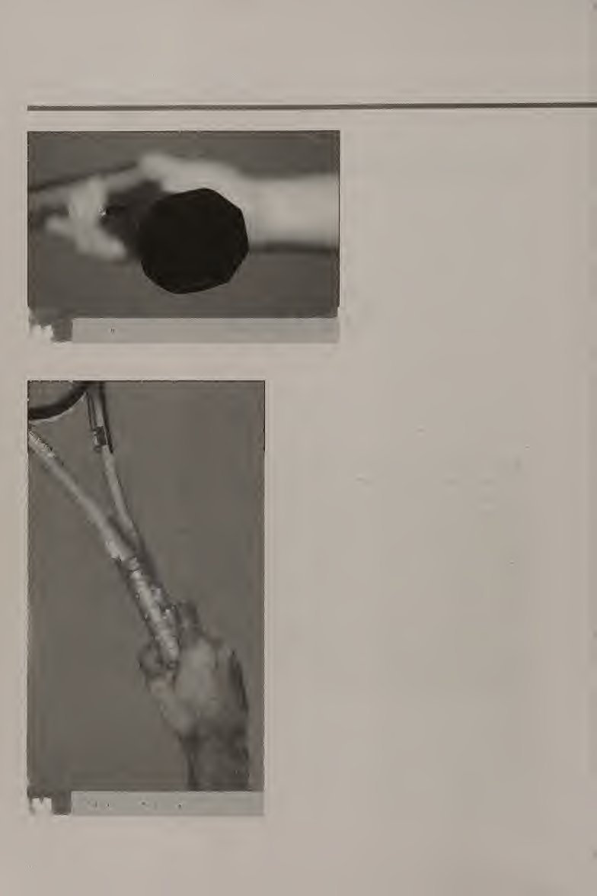
Tức là, khoảng cách bạn cần phải vượt qua khi chơi quần vợt không dài (khoảng cách trung bình chạy cho một cú đánh là từ hai đến sáu thước), nhưng bạn cần phải vượt qua chúng một cách nhanh chóng và hiệu quả. Một yếu tố quan trọng khác là bạn có thể khiến cơ thể mình bắt đầu chuyển động theo hướng mong muốn nhanh đến mức nào. Trong phần này, chúng ta sẽ đề cập đến vị trí sẵn sàng và bước tách, cũng như các phương pháp di chuyển khác quanh sân. Khi bạn thực hành những động tác cơ bản trên sân này, bạn sẽ thấy rằng chúng đóng vai trò quan trọng trong việc thực hiện các cú đánh một cách chính xác.
That is, the distances you need to cover when you play tennis are not that long (the average distance run for a stroke is two to six yards), but you need to cover them quickly and efficiently. Another important factor is how quickly you can get your body to start moving in a desired direction. In this section, the ready position and split step are covered, as well as other methods of moving around the court. As you practice these basic court movements, you will find that they play a big part in executing strokes correctly.
Vị trí sẵn sàng và bước tách bóng Vị trí sẵn sàng và bước tách bóng là điều cần thiết để có được một khởi đầu tốt cho cú đánh, cho dù đó là một cú đánh đất, một cú vô lê hay một cú đánh từ trên cao. Trong mọi cú đánh ngoại trừ cú giao bóng, vị trí sẵn sàng và bước tách bóng được sử dụng để “rút” bản thân khỏi mặt đất và di chuyển về phía bóng một cách hiệu quả. Một bước tách bóng chính xác đặc biệt quan trọng khi thời gian là yếu tố quan trọng, chẳng hạn như khi trả giao bóng nhanh hoặc đánh cú vô lê vào lưới.
Ready Position and Split Step The ready position and split step are essential to getting a good start to the shot, whether it be a ground stroke, a volley, or an overhead. In every stroke but the serve, the ready position and split step are used in order to “unstick” yourself from the ground and move toward the ball in an efficient manner. A precise split step is especially crucial when time is of the essence, for example, when returning a fast serve or hitting volleys at the net.
Tư thế sẵn sàng (hình 2.1) về cơ bản là một tư thế thể thao đặt cơ thể bạn ở vị trí cân bằng, trung lập để bạn có thể di chuyển nhanh chóng theo bất kỳ hướng nào. Đứng với đầu gối cong, hai bàn chân dang rộng bằng vai hoặc rộng hơn, trọng lượng dồn lên đầu bàn chân (hãy tưởng tượng ai đó có thể đặt vài mảnh giấy dưới gót chân của bạn). Uốn cong nhẹ ở thắt lưng. Giữ cho vai bạn thư giãn, mắt nhìn về phía bên kia sân.
The ready position (figure 2.1) is basically an athletic stance that puts your body in a balanced, neutral position so that you can move quickly in any direction. Stand with your knees bent, feet shoulder-width apart or wider, weight on the balls of your feet (imagine someone being able to put a couple of pieces of paper under your heels). Bend slightly at the waist. Keep your shoulders relaxed, eyes looking forward to the other side of the court.
Tay của bạn phải đặt trên vợt, vợt phải ở phía trước bạn ở mức ngang eo. Đặt tay thuận của bạn lên báng cầm. Nếu bạn đánh trái tay bằng hai tay, hãy đặt tay không thuận của bạn lên cán vợt ngay phía trên tay thuận của bạn. Nếu bạn đánh trái tay bằng một tay, hãy đặt tay không thuận của bạn vào cổ vợt. Bây giờ bạn đang ở một vị trí sẵn sàng tốt! Vị trí sẵn sàng.
Your hands should be on your racket, which should be in front of you at about waist level. Put your dominant hand on the grip. If you hit twohanded backhands, put your nondominant hand on the grip just above your dominant hand. If you hit one-handed backhands, put your nondominant hand at the throat of the racket. You are now in a good ready position! Ready position.
bạn có thể làm được!.. ■ Bước tách dùng để khắc phục quán tính. Quán tính là xu hướng của vật chất (bạn!) chống lại sự thay đổi vận tốc (tốc độ hoặc hướng). Theo định luật chuyển động thứ nhất của Newton, một vật có vận tốc cho trước sẽ duy trì vận tốc đó trừ khi bị tác dụng bởi ngoại lực. Vì vậy, nếu bạn đang đứng trên sân ở tư thế sẵn sàng (tốc độ bằng 0), sẽ khó có thể di chuyển đột ngột đến đúng vị trí trên sân.
The split step is used to overcome inertia. Inertia is the tendency of matter (you!) to resist changes in velocity (speed or direction). According to Newton’s first law of motion, an object with a given velocity maintains that velocity unless acted on by an external force. So, if you are standing on the court in your ready position (velocity equals zero), it will be difficult to make a sudden move to the correct place on the court.
Bạn có rất nhiều quán tính cần vượt qua. Tuy nhiên, nếu bạn thêm một số ngoại lực và tạo ra một số chuyển động ngay trước khi bạn biết mình cần di chuyển ở đâu, thì chuyển động của bạn sẽ nhanh hơn và trôi chảy hơn rất nhiều. Lực bên ngoài này được gọi là bước phân chia. Bước tách (hình 2.2) chỉ đơn giản là một bước nhảy nhẹ tại chỗ từ vị trí sẵn sàng. Khía cạnh quan trọng nhất của bước phân chia là thời gian của nó. Nếu thực hiện sớm hoặc quá muộn sẽ không có hiệu quả/hoặc gây bất lợi cho cú đánh.
You have a lot of inertia to overcome. However, if you add some external force and create some movement just before you know where you need to move, your movements will be a lot quicker and more fluid. This external force is called the split step. The split step (figure 2.2) is simply a light jump in place from the ready position. The single most important aspect of the split step is its timing. If it is done toq early or too late, it is ineffective aind/or detrimental to the stroke.
Thực hiện bước tách đôi ngay khi đối thủ của bạn tiếp xúc với bóng. Nói cách khác, bước tách bóng được thực hiện với dự đoán đối phương sẽ tiếp xúc với bóng. Để có thời gian hoàn hảo, hãy quan sát đối thủ của bạn từ vị trí sẵn sàng khi họ sẵn sàng đánh bóng. Khi bạn nghĩ rằng người đó sẽ tiếp xúc với quả bóng, hãy thực hiện một cú nhảy nhẹ, tiếp đất bằng mũi bàn chân của bạn. Điều này sẽ giúp bạn sẵn sàng di chuyển theo hướng của quả bóng!
Land the split step just as your opponent makes contact with the ball. In other words, the split step is performed in anticipation of your opponent making contact with the ball. For perfect timing, watch your opponent from the ready position as he or she gets ready to strike the ball. When you think he or she is going to make contact with the ball, execute a light jump, landing back on the balls of your feet. This should get you ready to move in the direction of the ball!
Nhiều lựa chọn và sử dụng hơn: Động tác bằng chân Vị trí sẵn sàng và bước tách bước là rất quan trọng để trở thành một tay vợt thành công. Các kỹ thuật động tác bằng chân khác cũng được sử dụng để di chuyển quanh sân một cách hiệu quả. Phần này đề cập đến một số hình thức động tác bằng chân khác được sử dụng trong quần vợt: bước xáo trộn, bước chuyển trọng lượng, chạy nước rút và đạp lùi. Bước xáo trộn Bước xáo trộn (hình 2.3) có nhiều mục đích trên sân tennis. Một trong những công dụng chính của nó là quay trở lại giữa sân sau khi thực hiện cú đánh, thường là cú đánh mặt đất.
More to choose and use: Footwork The ready position and split step are crucial to becoming a successful tennis player. Other footwork techniques also are used to get around the court efficiently. This section covers some other forms of footwork used in tennis: the shuffle step, weight transfer step, sprint, and backpedal. Shuffle Step The shuffle step (figure 2.3) has many purposes on the tennis court. One of its key uses is to get back to the middle of the court after executing a shot, usually a ground stroke.
Bước xáo trộn giúp bạn có thể di chuyển về giữa trong khi hướng mặt về phía trước và trong khi sẵn sàng đổi hướng. Bắt đầu từ vị trí sẵn sàng. Để di chuyển sang phải, bạn bước ra ngoài bằng chân phải, sau đó bước sang phải bằng chân trái, cẩn thận không bắt chéo chân. Cố gắng giữ vững bàn chân với trọng lượng hơi hướng về phía trước. Giữ vợt của bạn ở trạng thái sẵn sàng Bước xáo trộn
The shuffle step makes it possible to move back to the middle while facing forward and while ready to change directions. Start from the ready position. To shuffle to your right, step out laterally with your right foot, then step to your right with your left foot, being careful not to cross your feet. Try to stay on the balls of your feet with your weight slightly forward. Keep your racket in ready Shuffle Step
Thêm lựa chọn và sử dụng: Vị trí động tác bằng chân. Lặp lại bước xáo trộn cho đến khi bạn ở vị trí mong muốn trên sân. Cố gắng không nảy quá nhiều. Giữ đầu của bạn yên và nhìn về phía trước. Chân và bàn chân của bạn thực hiện tất cả các chuyển động. Động tác này tương tự như việc chơi phòng thủ trên sân bóng rổ. Bước chuyển trọng lượng Bước chuyển trọng lượng (hình 2.4), như tên gọi của nó, được sử dụng để chuyển trọng lượng cơ thể về phía trước trong cú đánh. Điều này giúp bạn có thể sử dụng toàn bộ cơ thể để đánh bóng thay vì chỉ dùng cánh tay.
More to choose and use: Footwork position. Repeat the shuffle step until you are at the desired place on the court. Try not to bounce too much. Keep your head still and look forward. Your legs and feet do all the moving. This movement is similar to playing defense on a basketball court. Weight Transfer Step The weight transfer step (figure 2.4), as its name implies, is used to transfer body weight forward into the shot. This makes it possible to use your whole body to hit the shot rather than just your arm.
Về cơ bản, bước chuyển trọng lượng được thực hiện khi bạn thực hiện cú đánh nền. Khi bạn thu vợt lại, toàn bộ trọng lượng của bạn phải dồn vào chân sau. Khi bạn tăng tốc vợt về phía trước để đánh cú, hãy chuyển trọng lượng của bạn về phía trước. Khi đó hầu như toàn bộ trọng lượng của bạn sẽ dồn vào chân trước. Bước chuyển trọng lượng Khi vợt tiến về phía trước, trọng lượng chuyển sang chân trước. Khi vợt lùi lại, trọng lượng dồn vào chân sau.
Basically, the weight transfer step is executed as you hit a ground stroke. As you take your racket back, all of your weight should be on your back foot. As you accelerate your racket forward to hit the shot, transfer your weight forward. Almost all of your weight should then be on the front foot. Weight Transfer Step As racket comes forward, weight transfers to front foot. As racket goes back, weight is on back foot.
Nhiều lựa chọn và sử dụng hơn: Chạy nước rút bằng chân Chạy nước rút quãng đường ngắn rất quan trọng trên sân tennis. Như đã đề cập trước đó, diện tích mặt đất bạn cần trải trên sân tennis không quá lớn nhưng thường không có nhiều thời gian để che phủ nó. Chạy nước rút với một cây vợt tennis trong tay và việc biết rằng một khi bạn đã chạm được vào quả bóng thì bạn cần phải đánh nó bằng vợt khiến mọi việc trở nên phức tạp hơn một chút. Nếu bạn chạy nước rút một khoảng cách ngắn tới bóng, hãy chạy với vợt đã chuẩn bị sẵn (vai hơi xoay, vợt hướng ra ngoài; hình 2.5).
More to choose and use: Footwork Sprint Sprinting short distances is important on the tennis court. As mentioned earlier, the amount of ground that you need to cover on a tennis court is not overwhelming, but there usually is not much time to cover it. Sprinting with a tennis racket in your hand and the knowledge that once you get to the ball you need to hit it with the racket complicates things a little. If you are sprinting a short distance to the ball, run with your racket prepared (shoulders slightly turned, racket out; figure 2.5).
Nếu bạn chạy nước rút một quãng đường dài hơn, chẳng hạn như chiều dài của đường cuối sân hoặc suốt quãng đường từ sau đường cuối sân đến lưới, hãy chạy nước rút bình thường cho đến khi bạn đến gần bóng (hình 2,6). Khi bắt đầu chạy nước rút, hãy bơm cánh tay của bạn để tăng tốc cơ thể. Khi bạn đến gần bóng, hãy giơ vợt lên và thực hiện cú đánh.
If you are sprinting a longer distance, for example, the length of the baseline or all the way from behind the baseline to the net, sprint normally until you get close to the ball (figure 2,6). At the beginning of the sprint, pump your arms to accelerate your body. Once you get close to the ball, raise your racket back and execute the shot.
Nhiều lựa chọn và sử dụng hơn: Footwork Backpedal Backpedaling (hình 2.7) không được sử dụng quá thường xuyên trên sân tennis. Hầu hết các chuyển động lùi lại hướng về phía trước được thực hiện theo từng bước nhỏ bằng cách sử dụng bước xáo trộn. Tuy nhiên, đây là một kỹ thuật động tác bằng chân tốt cần biết. Khi đạp lùi, sự cân bằng là chìa khóa. Để lùi lại, hãy đảm bảo rằng bạn có một khu vực trống phía sau. Bắt đầu chậm, đảm bảo bạn chạy bằng ngón chân. Để giúp bạn làm điều này, hãy chuyển trọng lượng của bạn một chút về phía trước.
More to choose and use: Footwork Backpedal Backpedaling (figure 2.7) is not used too often on the tennis court. Most backward movements facing forward are done in small increments using a shuffle step. It is, however, a good footwork technique to know. When backpedaling, balance is key. To backpedal, make sure that you have a clear area behind you. Start out slow, making sure you run on your toes. To help you do this, shift your weight slightly forward.
Đảm bảo sử dụng cánh tay của bạn, phối hợp chúng như khi chạy.
Make sure to use your arms, coordinating them as in running.
Đưa nó ra sân Bắt đầu bằng chân đúng Điều quan trọng là sử dụng động tác chân đúng để vào vị trí cho cú đánh hoặc thực hiện cú đánh. Các tình huống trò chơi khác nhau đòi hỏi các kiểu động tác bằng chân khác nhau. Giữ tư thế sẵn sàng trước mỗi cú đánh ngoại trừ cú giao bóng. Tư thế sẵn sàng đưa cơ thể bạn vào tư thế thể thao, khiến bạn sẵn sàng di chuyển theo bất kỳ hướng nào. Cơ thể của bạn phải ở trạng thái cân bằng ở tư thế sẵn sàng và cả hai tay của bạn phải ở trên vợt.
Take it to the court Starting on the Correct Foot It is important to use the correct footwork to get in position for a stroke or to execute the stroke. Different game situations call for different types of footwork. Assume the ready position before each stroke except for the serve. The ready position puts your body in an athletic stance, making you ready to move in any direction. Your body should be in a balanced state in the ready position and both your hands should be on the racket.
Điều này cho phép bạn thay đổi tay cầm nếu cần thiết. Khi thay đổi cách cầm vợt, tay không thuận phải cầm vợt trong khi tay thuận chuyển sang cách cầm vợt thích hợp. Ở tư thế sẵn sàng, đầu của bạn phải được thư giãn và mắt bạn phải nhìn về phía trước để bạn có thể theo dõi bóng. Điều này có nghĩa là bạn có thể theo dõi trực quan chuyển động của quả bóng và phản ứng với chuyển động của chính mình. Bước tách bóng là chìa khóa để di chuyển về phía bóng một cách nhanh chóng và hiệu quả.
This lets you change grips if necessary. When changing grips, the nondominant hand should hold the racket while the dominant hand shifts to the appropriate grip. In the ready position, your head should be relaxed and your eyes should look forward, so you should be able to track the ball. This means that you should be able to visually follow the ball’s movement and react with your own movements. The split step is key to moving toward the ball in a quick, efficient manner.
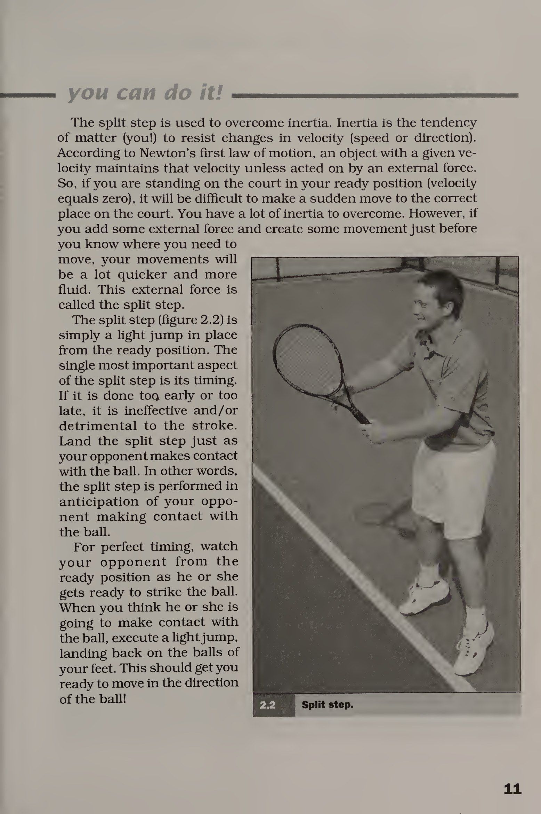
Nó sẽ đồng bộ hóa thời gian của bạn với hdH. Nó cũng giữ cho bàn chân của bạn luôn chuyển động, điều này rất quan trọng trong việc khắc phục quán tính. Bước tách cũng giúp bạn xử lý những thay đổi đột ngột về hướng. Nếu bạn tiếp đất từ bước tách chân với phần lớn trọng lượng dồn vào chân trái trong khi phần còn lại của cơ thể nghiêng sang phải, bạn sẽ thấy rằng cơ thể bạn sẽ tự nhiên di chuyển sang phải. Điều này rất quan trọng khi bạn cần di chuyển thật nhanh theo một hướng nhất định. Bước xáo trộn được sử dụng phổ biến nhất trong quá trình khôi phục.
It gets your timing in sync with the ball. It also keeps your feet moving, which is important in overcoming inertia. The split step also helps you deal with sharp changes of direction. If you land from the split step with most of your weight on your left foot while the rest of your body is leaning to the right, you will find that your body will naturally move to the right. This is important when you need to move in a certain direction very quickly. The shuffle step is most commonly used in recovery. Recovery happens after you have executed a stroke and need to get back to the middle of the court.
Quá trình phục hồi diễn ra sau khi bạn thực hiện cú đánh và cần quay lại giữa sân. Lý do bước xáo trộn được sử dụng thay vì chỉ chạy lùi (mặc dù chạy nhanh hơn xáo trộn) là vì bước xáo trộn cho phép bạn thay đổi hướng rất nhanh. Vì cơ thể của bạn hướng về phía bên kia của sân nên bạn không cần phải xoay người hết cỡ để đi sang hướng khác. Bước xáo trộn cũng được sử dụng để di chuyển ngang trên những khoảng cách ngắn, chẳng hạn như khi cú đánh nền chỉ cách đó vài bước.
The reason the shuffle step is used rather than just running back (even though running is faster than shuffling) is that the shuffle step lets you change directions very quickly. Because your body is facing the other side of the court, you don’t have to turn your body all the way around to go the other way. The shuffle step also is used for moving laterally over short distances, for example, when a ground stroke is only a couple of steps away.
Thay vì xoay người và di chuyển theo bóng, hãy sử dụng bước xáo trộn. Bước xáo trộn sẽ đưa bạn đến đó một cách nhanh chóng. Bước chuyển trọng lượng cho phép bạn dồn trọng lượng cơ thể vào cú đánh. Bắt đầu bằng việc chuyển trọng lượng sang chân sau. Khi thực hiện cú đánh, chuyển trọng lượng sang chân trước. Ví dụ, khi thực hiện cú đánh thuận tay, trọng lượng sẽ chuyển sang chân sau khi vợt được đưa về phía sau. Khi trọng lượng chuyển sang chân trước, vợt sẽ tăng tốc trong cú đánh.
Instead of turning and running to the ball, use a shuffle step. The shuffle step will get you there quickly. The weight transfer step allows you to put your body weight into your shot. Begin with a weight shift to the back foot. As the stroke is executed, shift weight to the front foot. For example, when executing a forehand ground stroke, weight shifts to the back foot as the racket is taken back. As the weight shifts to the front foot, the racket accelerates through the shot.
Phần quan trọng nhất của cuộc chạy nước rút là phần khởi đầu. Bạn sẽ không chạy nước rút một quãng đường dài trên sân quần vợt. Chạy nước rút trung bình là chỉ khoảng bốn thước. Vì vậy, việc đẩy người khỏi mặt đất một cách mạnh mẽ và nhanh chóng là rất quan trọng. Sự bùng nổ bóng này là yếu tố then chốt để chạy nước rút hiệu quả. Cú đánh lùi được sử dụng phổ biến nhất khi bạn ở trên lưới và đối thủ của bạn thực hiện một cú lốp bóng cao và chậm. Bạn muốn giữ cú lốp bóng trước mặt nhưng không muốn thực hiện một cú đánh từ trên cao. Điều này không xảy ra thường xuyên. Tuy nhiên, bàn đạp sau là một kỹ thuật hữu ích để luyện tập vì nó đòi hỏi đôi chân nhanh nhẹn và giữ thăng bằng tốt.
The most important part of the sprint is the start. You are not going to sprint long distances on the tennis court. The average sprint is only about four yards. Therefore, pushing off from the ground hard and quickly is important. This explosion to the ball is the key factor in an effective sprint. The backpedal is most commonly used when you are at the net and your opponent hits a slow, high lob. You want to keep the lob in front of you but do not want to hit an overhead shot. This does not happen veiy often. Nonetheless, the backpedal is a useful technique to practice because it does require quick feet and a lot of balance. SPLIT STEP-VERBALIZE IT!
TÁCH BƯỚC-BẰNG NGỮ NÓ! Hãy thử đi Đây là bài tập dành cho đối tác. Một người, người trung chuyển, sẽ đánh bóng. Người kia sẽ nói bằng lời khi nào bước phân chia sẽ xảy ra. Các đấu thủ nên đứng đối diện nhau ở vạch giao bóng, quay mặt vào nhau. Người cho ăn thả một quả bóng trước mặt mình và đánh nó (điều này được gọi là cú đánh thả). Đảm bảo rằng cú đánh chậm và không nhắm trực tiếp vào người chơi ở phía bên kia. Người chơi ở phía bên kia bắt đầu ở tư thế sẵn sàng và gọi, “Đánh!” khi người đó cho rằng người cho ăn sẽ tiếp xúc với bóng.
Give it a go This is a partner drill. One person, the feeder, will hit the ball. The other person verbalizes when the split step should occur. Players should stand across the net from one another at the service line, facing each other. The feeder drops a ball in front of himself or herself and hits it (this is called a drop hit). Make sure that the hit is slow and not directly aimecfat the player on the other side. The player on the other side begins in ready position and calls, “Hit!” when he or she thinks that the feeder will make contact with the ball.
Hãy nhớ rằng, việc phân chia các bước là mang tính dự đoán trước chứ không phải phản động. Thực hiện động tác này 10 lần rồi đổi vai. TÁCH BƯỚC- LÀM NÓ! Bài tập này sử dụng cách thiết lập tương tự như Bước phân chia—^Nói thành lời! bài tập. Trong bài tập này, thay vì nói “Đánh!” người chơi phải bắt đầu ở tư thế sẵn sàng và thực hiện bước tách bóng khi người đưa bóng chạm bóng. Lặp lại 10 lần rồi đổi vai. PHẢN ỨNG TOSS Bài tập đối tác này hoạt động dựa trên thời gian phản ứng. Người chơi A và người chơi B nên cách nhau khoảng 15 đến 20 feet.
Remember, split steps are anticipatory, not reactionary. Do this 10 times, then switch roles. SPLIT STEP-DO IT! This drill uses the same setup as the Split Step—^Verbalize It! drill. In this drill, instead of saying, “Hit!” the player should start in a ready position and execute a split step when the feeder hits the ball. Repeat 10 times, then switch roles. REACTION TOSS This partner drill works on reaction time. Player A and player B should be about 15 to 20 feet apart. Player B should have his or her back turned to player A.
Người chơi B phải quay lưng về phía người chơi A. Người chơi A ném một quả bóng lên không trung và nói, "Đi!" Điều này nhắc người chơi B quay lại tìm bóng và cố gắng bắt nó trước khi nó nảy lên hai lần. Bài tập này nhấn mạnh vào việc theo dõi và phối hợp tay-mắt. Lặp lại tám lần, sau đó đổi vai.
Player A tosses a ball in the air and says, “Go! This prompts player B to turn around to look for the ball and try to catch it before it bounces twice. This drill emphasizes tracking and hand-eye coordination. Repeat eight times, then switch roles.
Hãy thử đi: Động tác bằng chân Khi người chơi tiến bộ hơn, hãy điều chỉnh các cú ném (ném thấp hơn, xa hơn hoặc có độ xoáy) để tăng thêm độ khó. STAR DRILL Cuộc tập trận này có thể được thực hiện một mình hoặc với nhiều người chơi hoặc nhóm. Trên một nửa sân quần vợt, đặt sáu quả bóng tennis ở các vị trí sau: hai điểm giao nhau giữa đường giao bóng và đường biên đánh đơn, hai điểm giao nhau giữa đường giao bóng giữa và đường biên đôi đôi, điểm giao nhau giữa đường giao bóng giữa và đường giao bóng, và điểm giao nhau giữa đường giao bóng giữa và lưới (hình 2.8).
Give It a go: Footwork As players get better, adjust the tosses (toss lower, farther away, or with spin) to add difficulty. STAR DRILL This drill can be done alone or with multiple players or groups. On half a tennis court, put six tennis balls in these positions: the two intersections between the service line and the singles sidelines, the two intersections between the net and the doubles sidelines, the intersection between the center service line and the service line, and the intersection between the center service line and the net (figure 2.8).
Đặt vợt tennis của bạn vào điểm chính giữa. Bắt đầu ở điểm trung tâm. Lần lượt chạy nước rút tới một quả bóng và đưa nó trở lại điểm chính giữa cho đến khi tất cả các quả bóng nằm trên vợt. Bạn có thể nhờ ai đó nhắc nhở để bạn có thể cải thiện tốc độ của mình vào lần tiếp theo. Bài tập này hoạt động khi chạy nước rút ngắn và thay đổi hướng trên sân. Một biến thể thú vị của bài tập này là yêu cầu các đội thực hiện việc này như một cuộc chạy tiếp sức. Người chơi đầu tiên trong một đội chịu trách nhiệm đưa bóng vào, người thứ hai lấy bóng ra (từng quả một), người chơi thứ ba đưa bóng trở lại, v.v.
Put your tennis racket on the center mark. Start at the center mark. One at a time, sprint to a ball and bring it back to the center mark until all the balls are on the racket. You may have someone time you so that you can improve your speed next time. This drill works on short sprints and changes of direction on the court. A fun variation to this drill is to have teams do this as a relay race. The first player on a team is responsible for bringing the balls in, the second for taking them back out (one at a time), the third player brings them back in, and so on.
Yêu cầu mỗi người chơi đi hai lần. Đội về đích đầu tiên sẽ thắng cuộc đua.
Have each player go twice. The team to finish first wins the race.
Hãy thử đi: Động tác chân CHẠY DÒNG TIẾN ĐỘ Bài tập này có thể được thực hiện một mình hoặc theo nhóm. Bạn sẽ cần hai sân tennis (hình 2.9). Xếp hàng dọc theo đường biên đôi, quay mặt về phía sân. Phải có bộ khởi động và đồng hồ bấm giờ để có thể ghi lại thời gian bắt đầu và kết thúc chính xác. Khi người bắt đầu nói, "Đi!" chạy nước rút đến đường biên đôi xa trên sân thứ hai. Dùng tay chạm vào vạch, sau đó chạy nước rút trở lại đường biên đôi ban đầu.
Give it a go: Footwork PROGRESSIVE LINE SPRINTS This drill can be done alone or as a group. You will need two tennis courts (figure 2.9). Line up along the doubles sideline, facing the court. A starter and a timer should be present so that accurate stsirt and finish times can be recorded. When the starter says, “Go!” sprint to the far doubles sideline on the second court. Touch the line with your hand, then sprint back to the original doubles sideline.
Chạm vào vạch đó, sau đó chạy nước rút về đường biên đánh đơn ở xa trên sân thứ hai, dùng tay chạm vào vạch rồi chạy nhanh trở lại đường biên đôi ban đầu và dùng tay chạm vào vạch phạt. Chạy nước rút đến điểm phạt giao bóng trung tâm trên sân thứ hai, dùng tay chạm vào điểm phạt và chạy nhanh trở lại đường biên đôi ban đầu và dùng tay chạm vào điểm phạt. Lặp lại cho đến khi bạn chạm tới tất cả số tiền phạt trên cả hai sân đấu.
Touch that line, then sprint to the far singles sideline on the second court, touch the line with your hand, and sprint back to the original doubles sideline and touch the fine with your hand. Sprint to the center service fine on the second court, touch the fine with your hand, and sprint back to the original doubles sideline and touch the fine with your hand. Repeat until you’ve touched all the fines on both courts.
Hãy thử xem: Động tác chân HEXAGON JUMPS Bài tập này có thể được thực hiện một mình. Dùng băng dính thể thao ở một bên của sân tennis, tạo một hình lục giác (sáu cạnh) với các cạnh có kích thước khoảng 2 feet (hình 2.10). Bài tập này kiểm tra kỹ năng giữ thăng bằng, phối hợp và nhảy của bạn. Nhờ ai đó dành thời gian cho bạn. Bắt đầu bên trong hình lục giác. Không chạm vào vạch hoặc bỏ lỡ bước nhảy, hãy nhảy ra ngoài vạch và quay lại vào trong vạch. Làm điều này cho tất cả các cạnh của hình lục giác, đi xung quanh nó ba lần liên tiếp.
Give it a go: Footwork HEXAGON JUMPS This drill can be done alone. Using athletic tape on the side of a tennis court, make a hexagon (six sides) with the sides measuring about two feet (figure 2.10). This drill tests your balance, coordination, and jumping skills. Have someone time you. Start inside the hexagon. Without touching a line or missing a jump, jump outside the line and back inside the line. Do this for all sides of the hexagon, going around it three consecutive times. BALL ROLLS
BÓNG LĂN Bài tập này được thực hiện theo cặp. Nó giúp bạn phát triển tốt kỹ thuật bước shuffie cũng như phối hợp tay và mắt. Người chơi A và người chơi B phải cách nhau khoảng 10 feet, quay mặt vào nhau. Người chơi A phải có hai quả bóng trong tay, với một vài quả bóng nữa trong túi hoặc trên mặt đất. Người chơi A lăn một quả bóng vài feet về phía bên phải của người chơi B. Người chơi B di chuyển về phía quả bóng, lấy nó và lăn nó trở lại. Trong khi bóng đang lăn trở lại, người chơi A thả quả bóng thứ hai ra xa người chơi vài feet.
This drill is done in pairs. It helps you develop good shuffie step technique as well as hand-eye coordination. Player A and player B should be about 10 feet apart, facing each other. Player A should have two balls in hand, with a couple more in a pocket or on the ground. Player A rolls a ball a few feet to player B’s right. Player B shuffies toward the ball, retrieves it, and rolls it back. While the ball is rolling back, player A releases the second ball a few feet to player
Cố lên nhé: Chân trái của B. Người chơi B di chuyển sang trái, lấy bóng và lăn lại. Nếu một quả bóng đi lạc, đừng bận tâm đuổi theo nó; chỉ cần đưa một quả bóng khác vào chơi. Lặp lại trong 30 giây và đổi vai. LÃNH ĐẠO VÀ BÓNG ĐÁ Bài tập về người lãnh đạo và bóng tối được thực hiện theo cặp. Quyết định ai sẽ là người lãnh đạo và ai sẽ là cái bóng. Người dẫn đầu và cái bóng phải bắt đầu cách nhau khoảng 10 feet, quay mặt vào nhau. Người lãnh đạo bắt đầu bằng cách thực hiện bài tập động tác bằng chân, chẳng hạn như bước xáo trộn.
Give it a go: Footwork B’s left. Player B shuffles to the left, retrieves the ball, and rolls it back. If a ball goes astray, don’t bother chasing it; just put another ball in play. Repeat for 30 seconds and switch roles. LEADER AND SHADOW The leader and shadow drill is done in pairs. Decide who will be the leader and who will be the shadow. The leader and the shadow should start about 10 feet apart, facing each other. The leader starts by doing a footwork exercise, such as the shuffle step.
Cái bóng phải phản ánh bất cứ điều gì người lãnh đạo đang làm (hình 2.11). Mỗi bài tập tác động bằng chân nên kéo dài khoảng ba đến năm giây. Thực hiện động tác này trong 30 giây, sau đó nghỉ 30 giây. Đổi vai và thực hiện bài tập thêm 30 giây nữa.
The shadow must mirror whatever the leader is doing (figure 2.11). Each footwork exercise should last about three to five seconds. Do this for 30 seconds, then rest for 30 seconds. Switch roles and do the drill for another 30 seconds.
Hãy thử xem: Footwotk Set Point Bạn càng luyện tập đúng các kỹ thuật động tác chân dành riêng cho quần vợt, bạn sẽ càng thi đấu hiệu quả hơn trên sân. Bạn cũng sẽ thấy rằng kỹ thuật đánh của bạn thực sự được cải thiện khi động tác bằng chân của bạn tốt hơn. Bạn sẽ học cách phối hợp động tác bằng chân và kỹ thuật thực hiện cú đánh để các cú đánh của bạn có thể trôi chảy và hiệu quả. Bây giờ bạn đã quen với cách cầm vợt và động tác chân thích hợp, bạn đã sẵn sàng học cú đánh đầu tiên, cú thuận tay!
Give it a go: Footwork Set Point The more you practice correct, tennis-specific footwork techniques, the more efficient you will be on the court. You will also find that your stroke techniques actually improve as your footwork gets better, You will learn to coordinate your footwork and stroke technique so that your strokes can be fiuid and efficient. Now that you are familiar with the proper grips and footwork, you are ready to learn your first stroke, the forehand!
Chương 3: Cú công bóng thuận tay & Chuỗi động học
Cú thuận tay là một trong những kỹ năng đầu tiên mà người mới bắt đầu được làm quen. Đây cũng là cú đánh thường xuyên nhất đối với hầu hết những người chơi quần vợt mới bắt đầu và trung cấp. Nói một cách đơn giản, cú thuận tay là một cú đánh nảy lên và đánh vào phía thuận tay của người chơi. Khi bắt đầu, người chơi nên tập trung vào kỹ thuật chính xác. Điều quan trọng là phải có những kiến thức cơ bản vững chắc để thấy được sự cải thiện ổn định. Lĩnh vực trọng tâm thứ hai là sự nhất quán và kiểm soát. Lĩnh vực trọng tâm cuối cùng phải là sức mạnh.
Forehand
The forehand is one of the first skills beginners are introduced to. It also is the most frequently hit shot for most beginning and intermediate tennis players. Simply put, the forehand is a shot that bounces and is hit on a player’s dominant side. As a starting point, players should focus on correct technique. It is important to have sound fundamental basics to see steady improvement. The second area of focus should be consistency and control. The last area of focus should be power.
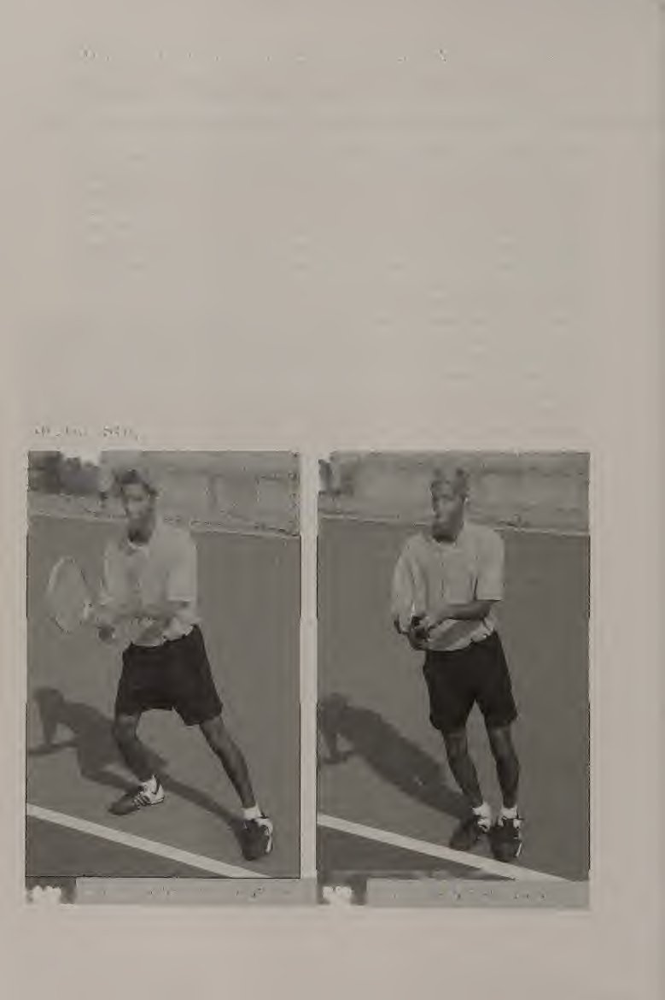
Nhiều kiểu xoáy có thể được thực hiện ở một cú thuận tay—phẳng, xoáy lên, xoáy xuống, hoặc xoáy ngang. Cũng có những khác biệt trong quan điểm – mở hoặc đóng. Động tác backswing cũng có thể khác nhau – giật hoặc lùi thẳng. Vấn đề là, cú thuận tay của mọi người sẽ trông hơi khác một chút, nhưng kỹ thuật cơ bản phải giống nhau. Ví dụ, cú thuận tay của Venus Williams rất khác với cú thuận tay của Andre Agassi, rất khác với cú thuận tay của Pete Sampras. Mỗi người chơi có một cách đánh riêng và mỗi người chơi sử dụng vòng quay như một vũ khí lớn trong trò chơi của mình.
Many types of spin can be put on a forehand—flat, topspin, underspin, or sidespin. There are also differences in stance—open or closed. The backswing may also vary—loop or straight back. The point is, everyone’s forehands will look a bit different, but the basic technique should be the same. For example, Venus Williams’ forehand is very different from Andre Agassi’s forehand, which is very different from Pete Sampras’ forehand. Each player has a personalized way of hitting, and each player uses spin as a big weapon in his or her game.
Chúng ta sẽ bắt đầu với cú thuận tay phẳng.
We will start with the flat forehand.
Thuận tay phẳng Cần có nhiều bước để đánh một cú thuận tay phẳng tốt. Thông qua việc thực hành nhất quán, sử dụng đúng kỹ thuật, các bước này sẽ phát triển thành một cú đánh nền trơn tru và đáng tin cậy. Bắt đầu với tay cầm. Để có một cú thuận tay phẳng, hãy sử dụng cách cầm vợt phía đông. Tiếp theo, đảm nhận vị trí sẵn sàng. Về cơ bản, điều này có nghĩa là bạn phải ở trong tư thế thể thao: hai chân rộng bằng vai, trọng lượng dồn lên đầu bàn chân, đầu gối hơi cong, vai thả lỏng, mắt nhìn thẳng về phía trước, cầm vợt bằng cả hai tay ở phía trước cơ thể (hình 3. la). Hãy chắc chắn rằng bạn đã giữ thăng bằng và sẵn sàng di chuyển. Bước tiếp theo là bước tách (hình 3.1b). Như đã thảo luận ở chương trước, bước tách bóng xảy ra ngay trước khi bóng được người kia đánh nhằm khắc phục quán tính và gỡ chân bạn. Bước tách bóng được thực hiện với sự dự đoán chứ không phải phản ứng, vì vậy chuyển động của bước tách bóng phải bắt đầu một lúc trước khi đối thủ thực sự tiếp xúc với bóng. Khi bạn thực hiện bước tách của mình, quá trình quay ngược sẽ bắt đầu.
Flat Forehand Many steps are involved in hitting a good flat forehand. Through consistent practice using the correct technique, these steps should develop into a smooth, dependable ground stroke. Start with the grip. For a flat forehand, use the eastern grip. Next, assume a ready position. Basically, this means that you should be in an athletic stance: feet about shoulder-width apart, weight on the balls of the feet, knees slightly bent, shoulders relaxed, eyes looking straight ahead, racket held with both hands in front of the body (figure 3. la). Make sure that you are balanced and ready to move. The next step is the split step (figure 3.1b). As discussed in the previous chapter, the split step occurs just before the ball is hit by the other person in order to overcome inertia and unstick your feet. A split step is done in anticipation, not in reaction, so the movement for the split step should start a moment before your opponent actually makes contact with the ball. As you land your split step, the backswlng starts. Turn the shoulders and open the racket so that the tip of the head of the racket is pointing slightly down and toward the back fence.
Xoay vai và mở vợt sao cho đầu vợt hơi hướng xuống dưới và hướng về phía hàng rào phía sau. Xoay sang bên mục tiêu với vợt vẫn ở vị trí lùi và thấp (hình 3.1c).
Turn sideways to the target with the racket still positioned back and low (figure 3.1c). Your feet should be more than shoulder-width apart to maintain balance.
Hai chân của bạn phải rộng hơn vai để giữ thăng bằng. Hãy chắc chắn rằng đầu gối của bạn được uốn cong. Tiếp theo, bạn phải chuyển trọng lượng của mình về phía trước khi đánh bóng sao cho toàn bộ cơ thể của bạn, thay vì chỉ cánh tay, thực hiện công (hình 3. Id). Khi bạn thuận tay phải, hãy bước về phía trước bằng chân trái nếu bạn thuận tay phải (người chơi thuận tay trái nên bước về phía trước bằng chân phải). Đây được gọi là lập trường đóng. Sử dụng tư thế đúng sẽ giúp chuyển trọng lượng hiệu quả.
Make sure that your knees are bent. Next, you must transfer your weight forward as you hit the ball so that your whole body, instead of just your arm, is doing the work (figure 3.1d). With your side to the target, step forward with the left foot if you are right-handed (a left-handed player should step forward with the right foot). This is called the closed stance. Using the correct stance aids in effective transfer of weight. Contact the ball above the front foot at about waist level, maintaining a firm wrist and a low to high swing.
Tiếp xúc bóng phía trên bàn chân trước ở mức ngang eo, giữ vững cổ tay và vung bóng từ thấp đến cao. Cố gắng kéo dài cú đánh của bạn, như thể bạn đang đánh năm quả bóng xếp ngay cạnh nhau, thay vì chỉ một quả. Khi bạn hoàn thành cú đánh theo sau, vợt của bạn sẽ ở phía trước cơ thể bạn, theo đường bay của bóng. Đảm bảo giữ đầu cố định và thăng bằng. Bạn vừa đánh bóng, nhưng bạn chưa hoàn thành! Với vợt ở vị trí sẵn sàng, sử dụng bước xáo trộn để quay lại giữa.
Try to elongate your swing, as if you’re hitting five balls lined up right next to each other, instead of just one. As you finish with the follow-through, your racket should end up in front of your body, following the flight of the ball. Make sure to keep your head still and level. You have just hit the ball, but you are not done! With the racket in the ready position, use the shuffle st^p to get back to the middle. This is the recovery phase of the shot.
Đây là giai đoạn phục hồi của cú đánh. Bây giờ bạn đã sẵn sàng để thực hiện một cú đánh khác!
Now you are ready to hit another shot! More to choose and use: Forehand
Nhiều lựa chọn và sử dụng hơn: Thuận tay Mặc dù hầu hết người chơi đều có một thuận tay là thuận tay mặc định của họ, nhưng việc có nhiều loại thuận tay để lựa chọn sẽ mang lại cho bạn nhiều lựa chọn để giải quyết các tình huống trò chơi khác nhau. Các cú thuận tay cắt bóng có xu hướng lơ lửng và ở vị trí thấp trên mặt đất sau khi nảy lên, trong khi các cú thuận tay xoáy lên có quỹ đạo giật và cú đá sau cú nảy. Cắt thuận tay Đối với một cú cắt thuận tay, có thể sử dụng kiểu cầm vợt phương Đông hoặc kiểu lục địa.
Although most players have one forehand that is their default forehand, having a variety of forehands to ehoose from gives you lots of options to resolve various game situations. Slice forehands tend to float and stay low to the ground after the bounce, whereas topspin forehands have a looping trajectory and a kick after the bounce. Slice Forehand For a slice forehand, either an eastern or a continental grip may be used. Bring the racket back higher and use a more open racket head angle than you would for a flat forehand (figure 3.2a).
Đưa vợt về phía sau cao hơn và sử dụng góc đầu vợt mở hơn so với khi bạn thực hiện cú thuận tay phẳng (hình 3.2a). Hãy chắc chắn rằng cơ thể của bạn được xoay và bước bằng chân trái (giả sử bạn thuận tay phải). Bàn chân của bạn phải rộng hơn vai và đầu gối của bạn phải cong. Tay vợt của bạn nên hơi cong, mặt vợt khá cao và gần như thẳng đứng. Bắt đầu cú vung về phía trước bằng cách chải mặt sau của quả bóng theo hướng hơi hướng xuống (hình 3.2b).
Make sure your body is turned and step with your left foot (assuming you are right-handed). Your feet should be more than shoulder-width apart and your knees should be bent. Your racket arm should be slightly bent, the racket face fairly high and nearly vertical. Start the forward swing by brushing the backside of the ball in a slightly downward direction (figure 3.2b). The bottom edge of the racket should be leading.
Mép dưới của vợt phải dẫn đầu. Khi luyện tập, bạn sẽ có thể cảm nhận được rằng vợt của mình có góc mở. Bạn không cần phải nhìn vào vợt của mình. Thực hiện theo, cố gắng duy trì cùng một góc đầu vợt. (Nó có thể thay đổi một chút do tác động.) Khi kết thúc cú đánh tiếp theo, vợt phải ngang bằng hoặc cao hơn đầu bạn. Khi luyện tập, bạn sẽ có thể đánh những cú thuận tay cắt bóng có độ cản lưới tốt nhưng không đi quá cao.
With practice you should be able to feel that your racket has an open angle. You shouldn’t have to look at your racket. Follow through, trying to maintain the same racket head angle. (It may change a bit because of the impact.) At the end of the follow-through, the racket should be even with or above your head. With practice, you should be able to hit slice forehands that have good net clearance, yet do not go sky-high.
Nếu bạn đang tìm thấy cú thuận tay Slice đó
If you are finding that Slice Forehand
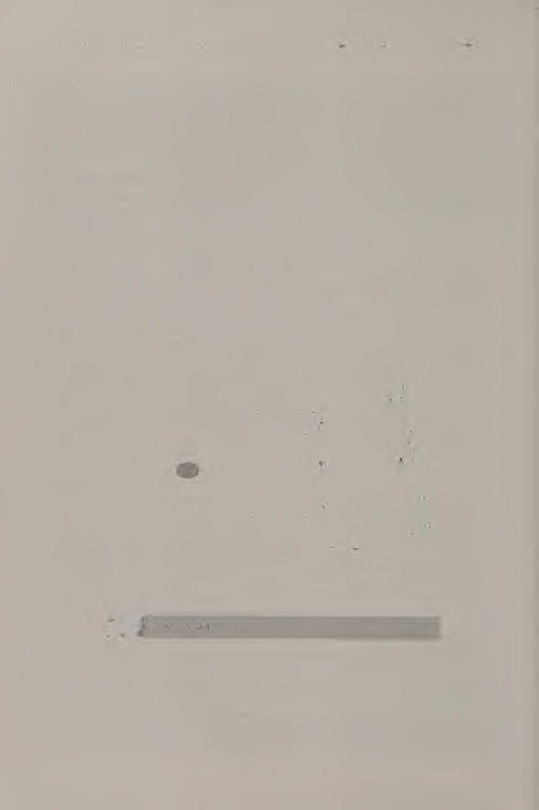
Nhiều lựa chọn và sử dụng hơn: Cú đánh thuận tay của bạn sẽ đi vào lưới, hãy thử mở góc đầu vợt của bạn. Nếu cú đánh của bạn đi thẳng lên hoặc không đi xa lắm, hãy thử làm phẳng cú đánh của bạn (đóng góc đầu vợt) thêm một chút. Đảm bảo rằng bạn duy trì quyền kiểm soát cú đánh bằng cách đánh nó ra trước mặt bạn. Nếu bóng ở phía sau bạn, bạn sẽ khó giữ vững cổ tay và do đó cú đánh của bạn sẽ bị thay đổi. Thuận tay xoáy lên Đối với cú thuận tay xoáy lên, hãy sử dụng cách cầm vợt kiểu bán tây hoặc tây.
More to choose and use: Forehand your shots go into the net, try opening up your racket head angle. If your shots are either going straight up or not going very far, try flattening out your shot (closing the racket head angle) a bit more. Make sure that you maintain control of the shot by hitting it out in front of you. If the ball gets behind you, it is difficult to keep your wrist firm, and therefore your shot will be altered. Topspin Forehand For a topspin forehand, use a semi-western or western grip.
Thực hiện cú giật ngược về phía sau để hỗ trợ tạo ra xoáy lên (hình 3.3a). Điều này có nghĩa là bạn nên đưa vợt về phía sau khá cao để có thể giật vợt vào cú đánh. Có thể sử dụng tư thế mở (chân phải về phía trước đối với người thuận tay phải, chân trái về phía trước đối với người thuận tay trái) hoặc tư thế đóng. Nếu bạn đang sử dụng tư thế mở, hãy nhớ xoay vai và hông. Tiếp xúc được thực hiện cao hơn so với cú thuận tay phẳng (hình 3.3b). Đảm bảo rằng điểm tiếp xúc ở phía trước cơ thể bạn.
Take a loopier backswing to aid in imparting topspin (figure 3.3a). This means that you should take the racket back fairly high so that you can loop the racket into the shot. Either the open stance (right foot forward for right-handers, left foot forward for left-handers) or the closed stance may be used. If you are using the open stance, be sure to turn your shoulders and hips. Contact is made higher than with a flat forehand (figure 3.3b). Make sure that the contact point is in front of your body.
Động tác tiếp theo phải đi qua vai đối diện, với cổ tay bị gãy ở cuối. Một điều quan trọng cần nhớ về cú thuận tay xoáy lên là bạn nên cố gắng kéo dài cú đánh của mình càng lâu càng tốt. Nhiều cú thuận tay Topspin
The follow-through should go over the opposite shoulder, with the wrist breaking at the very end. An important thing to remember about the topspin forehand is you should try to prolong your stroke for as long as possible. Many Topspin Forehand
Lựa chọn và sử dụng mote: Người thuận tay có xu hướng vung vợt từ thấp lên cao quá nhanh. Mặc dù quả bóng có thể có nhiều xoáy nhưng nó không có độ sâu. Nếu cú đánh của bạn tiếp đất ngắn, hãy giảm tốc độ vung vợt của bạn và tập trung vào việc cố gắng làm cho phần giữa của cú vung của bạn dài nhất có thể. '^giả vờ thành tne %.outt Chọn một cú thuận tay Các tình huống khác nhau đòi hỏi những cú đánh khác nhau về độ xoáy, quỹ đạo và tốc độ. Ví dụ, nếu bạn đang di chuyển đối thủ quanh sân, sẽ có lợi hơn nếu đánh một cú đánh phẳng, nhanh thay vì một cú giật bóng, chậm.
More to choose and use: Forehand people tend to swing from low to high too quickly. Even though the ball may have a lot of spin, it does not have any depth. If your shots are landing short, slow down your swing speed and concentrate on trying to make the middle pcirt of your swing as long as possible. '^fake it to tne %.outt Choosing a Forehand Different situations call for different shots in terms of spin, trajectory, and speed. For example, if you are moving your opponent around the court, it is more advantageous to hit a flat, fast shot instead of a looping, slow one.
Tuy nhiên, nếu đối thủ của bạn đang di chuyển bạn xung quanh, tốt hơn là bạn nên đánh một cú giật, cú đánh chậm để câu giờ. Dưới đây là một số ưu điểm và nhược điểm của từng kiểu thuận tay khác nhau và một số tình huống mà chúng có thể được sử dụng. Ưu điểm của cú thuận tay phẳng là việc vung vợt sau (thẳng về phía sau) không phức tạp và quỹ đạo của bóng là tuyến tính và do đó di chuyển trong không gian một cách nhanh chóng. Điều này làm cho nó trở thành một lựa chọn lý tưởng nếu bạn muốn di chuyển đối thủ của mình xung quanh sân.
However, if your opponent is moving you around, it might be better to hit a looping, slow shot to buy some time. Here are some advantages and disadvantages of each of the different types of forehands and some situations that they may be used in. The advantages of a flat forehand are that the backswing (straight back) is not complicated and the trajectory of the ball is linear and therefore travels through space quickly. This makes it an ideal choice if you want to move your opponent around the court.
Nó không cho đối thủ của bạn nhiều thời gian để hồi phục giữa các cú đánh. Nhược điểm của kiểu đánh thuận tay phẳng là thiếu độ xoáy nên khó kiểm soát và kiểu cầm vợt kiểu đông khiến khó đánh được bóng cao. Ưu điểm của cú đánh thuận tay là việc tiếp xúc có thể được thực hiện muộn hơn một chút (phía sau bàn chân trước) so với cú thuận tay phẳng hoặc xoáy lên, cú đánh dễ kiểm soát hơn, bóng sẽ nằm ở vị trí thấp so với mặt đất sau khi nảy và bóng sẽ bật ra khỏi đối phương.
It doesn’t give your opponent a lot of time to recover between shots. The disadvantages of the flat forehand are that the lack of spin makes it difficult to control and the eastern grip makes it difficult to hit high balls. The advantages of a slice forehand are that contact may be made slightly later (behind the front foot) than with the flat or topspin forehand, the shot is easier to control, the ball will stay low to the ground after the bounce, and the ball will bounce away from the opponent.
Điều này làm cho nó trở thành một cú đánh lý tưởng để thực hiện các cú đánh tiếp cận (cú đánh trúng đích trước khi tấn công vào lưới). Bóng có xu hướng ở mức thấp sau khi nảy; do đó đối thủ của bạn phải đánh bạn. Một tình huống khác trong đó cú cắt được sử dụng là trong cú đánh thả, được thảo luận chi tiết ở chương 8. Nhược điểm của cú đánh thuận tay là bóng có thể bay ra ngoài nếu bị đánh với tốc độ đầu vợt quá lớn hoặc bóng có thể bay thẳng lên nếu góc mặt vợt quá mở.
This makes it an ideal shot for hitting approach shots (the shot hit before attacking the net). The ball tends to stay low after the bounce; therefore your opponent must hit up to you. Another situation in which a slice is used is in the drop shot, which is discussed in detail in chapter 8. The disadvantages of the slice forehand are that the ball may sail out if it is hit with too much racket head speed or the ball may go straight up if the racket face angle is too open.
Ưu điểm của cú thuận tay xoáy lên là xoáy làm cho bóng rơi xuống (điều này sẽ giảm thiểu các lỗi về chiều dài), bóng có lực phát ra sau khi nảy và bóng di chuyển trong không gian chậm hơn. (Đây có thể là một lợi thế nếu bạn đang di chuyển xung quanh và muốn câu giờ giữa các cú đánh.) Các cú thuận tay xoáy lên rất hữu ích trong việc duy trì một đường đánh bóng nhất quán, vì xoáy tạo cho quả bóng một quỹ đạo giật. Nhược điểm của cú thuận tay xoáy lên là cần phải vung vợt về sau lớn hơn để đánh nó, bóng di chuyển trong không gian chậm hơn (điều này có thể là bất lợi nếu bạn muốn di chuyển đối thủ xung quanh) và bạn có thể kết thúc với những cú đánh nông nếu vùng đánh không được kéo dài.
The advantages of a topspin forehand are that the spin makes the ball drop (which will cut down on length errors), the ball has a kick after the bounce, and the ball travels through space more slowly. (This can be an advantage if you are being moved around and are trying to buy time between shots.) Topspin forehands are useful in maintaining a consistent rally, as the spin gives the ball a looping trajectory. The disadvantages of a topspin forehand are that a bigger backswing is required to hit it, the ball travels through space more slowly (this can be a disadvantage if you are looking to move your opponent around), and you may end up with shallow shots if the hitting zone is not elongated.
Cách cầm vợt kiểu bán tây khiến việc đánh bóng thấp trở nên khó khăn.
The semi-western grip makes it difficult to hit balls that are low.
THẢ ĐÁNH TAY Bài tập này có thể được thực hiện một mình. Đứng trên vạch giao cầu, quay mặt sang một bên, phía không thuận ở phía trước (hình 3.4). Giữ vợt bằng tay thuận với đầu vợt hướng về phía hàng rào phía sau. Giữ một quả bóng tennis trong tay không thuận của bạn. Thả quả bóng trước mặt bạn, để nó nảy lên và đánh một cú thuận tay phẳng. (Bài tập này cũng có thể được thực hiện với các cú thuận tay cắt và xoáy lên.) Tiy đạt được ít nhất 7 trong số 10 lần thử ở phần sân đối diện.
DROP HIT FOREHAND This drill can be done alone. Stand on the service line, facing sideways, with your nondominant side in front (figure 3.4). Hold the racket in your dominant hand with the racket head directed toward the back fence. Hold a tennis ball in your nondominant hand. Drop the ball in front of you, let it bounce, and hit a flat forehand. (This drill also can be done with slice and topspin forehands.) Tiy to get at least 7 out of 10 attempts in the opposite court.
MỀM TĂNG THUẬN TAY Đây là một bài tập dành cho đối tác. Một người chơi là người đưa bóng, người kia là người đánh. Cả hai đấu thủ đứng ở vạch giao bóng ở hai phía đối diện của sân, quay mặt vào nhau. Người cho ăn sử dụng cú ném bằng tay để ném
SOFT TOSS FOREHAND This is a partner drill. One player is the feeder, the other is the hitter. Both players stand at the service lines on opposite sides of the court, facing each other. The feeder uses an underhand toss to throw
Hãy thử xem: Thuận tay % bóng về phía thuận tay của người đánh. Người đánh thực hiện một bước tách khi nhả người trung chuyển và đánh một cú thuận tay. Lặp lại 10 lần rồi đổi vai. RALLY FORHAND Đây là một bài tập dành cho đối tác. Các đối tác đứng ở vạch giao bóng ở hai phía đối diện của sân, quay mặt vào nhau. Người chơi có bóng bắt đầu bài tập bằng một cú đánh thuận tay, đánh bóng tới phía thuận tay của người chơi khác. Tiếp tục loạt đánh, cố gắng đánh bóng về phía thuận tay của đối tác.
Give it a go: Forehand % the ball to the hitter’s forehand side. The hitter performs a split step on the feeder’s release and hits a forehand. Repeat 10 times, then switch roles. RALLY FOREHAND This is a partner drill. Partners stand at the service lines on opposite sides of the court, facing each other. The player with the ball starts the drill with a drop hit forehand, hitting the ball to the other player’s forehand. Continue the rally, trying to hit the ball to your partner’s forehand.
Bất kỳ quả bóng nào không nảy hai lần và được đánh thuận tay đều hợp pháp. Hãy đếm xem bạn có thể đánh được bao nhiêu quả liên tiếp. Cố gắng đạt được 12 liên tiếp trước khi bạn thử bài tập tiếp theo. FULL COURT CROSSCOURT FOREHAND Đây là một phiên bản nâng cao hơn của bài tập tập trung. Cả hai đấu thủ nên bắt đầu ở đường cuối sân ở hai phía đối diện của sân. Một lần nữa, hãy đếm xem bạn có thể tiếp tục chơi bao nhiêu quả bóng. Hãy nhớ rằng, bất kỳ quả bóng nào không nảy hai lần và được đánh thuận tay đều là hợp pháp, vì vậy HÃY HÀNH ĐỘNG!!
Any ball that doesn’t bounce twice and is hit as a forehand is legal. Keep count of how many you can hit in a row. Try to get 12 in a row before you attempt the next drill. FULL COURT CROSSCOURT FOREHAND This is a more advanced version of the rally drill. Both players should start at the baselines on opposite sides of the court. Again, keep count of how many balls you can keep in play. Remember, any ball that doesn’t bounce twice and is hit as a forehand is legal, so HUSTLE!! Set Point
Điểm đặt Khi tiến bộ, bạn sẽ thấy những cải thiện về tính nhất quán và khả năng kiểm soát. Đừng lo lắng về sức mạnh. Trước tiên hãy cố gắng lấy được càng nhiều bóng càng tốt trên sân. Bám sát các kỹ thuật cơ bản. Đảm bảo tư thế sẵn sàng của bạn tốt, chuyển trọng lượng hiệu quả và bạn đang đu từ thấp lên cao. Khi bạn bắt đầu trở nên kiên định hơn với cú thuận tay phẳng, hãy thử kết hợp lát cắt và xoáy lên vào các cú thuận tay của bạn. Trong chương tiếp theo, bạn sẽ học cách đánh một cú trái tay, đó là một cú đánh tiếp đất vào phía không thuận của cơ thể bạn.
As you progress, you should see improvements in consistency and control. Don’t worry about power yet. Try to get as many balls as you can in the court first. Stick with the basic techniques. Make sure your ready position is good, your weight transfer is effective, and you are swinging from low to high. As you begin to get more consistent with the flat forehand, try incorporating slice and topspin into your forehands. In the next chapter, you will learn how to hit a backhand, which is a ground stroke on the nondominant side of your body.
Chương 4: Trái tay một tay và trái tay hai tay
1 i V Trong khi một số phần của cú trái tay giống như cú thuận tay, những phần khác lại khác. Động tác bằng chân, điểm tiếp xúc, chuyển trọng lượng và phục hồi vẫn giống như cú thuận tay. Những điều làm nên sự khác biệt của cú trái tay là cách cầm vợt và cách bạn phối hợp tay và vai. Có nhiều cách để đánh trái tay một cách chính xác. Justine Henin-Hardenne đánh trái tay xoáy lên bằng một tay. Steffi Graf sử dụng cú đánh trái tay bằng một tay. Andre Agassi sử dụng cú trái tay bằng hai tay.
Backhand
While some parts of the backhand are the same as the forehand, others are different. Footwork, contact point, weight transfer, and recovery remain the same as the forehand. The things that make a backhand different are the grips and how you coordinate your hands and shoulders. There are many ways to hit a backhand correctly. Justine HeninHardenne hits a one-handed topspin backhand. Steffi Graf used a one-handed slice backhand. Andre Agassi uses a two-handed backhand.
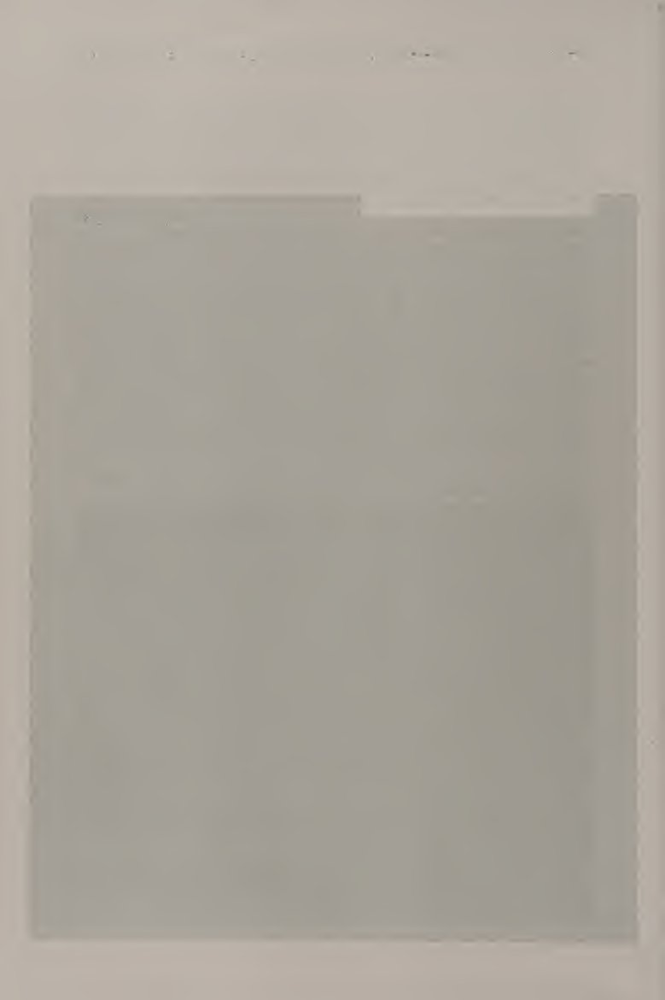
Điều quan trọng là phải nhất quán với cú đánh trái tay mà bạn cảm thấy tự nhiên nhất. Những cú trái tay là một phần rất quan trọng của trò chơi. Ví dụ, ở một điểm, nếu bóng ở góc bên trái, bạn sẽ đánh một cú trái tay hiệu quả hơn nhiều so với việc đi vòng quanh quả bóng để đánh một cú thuận tay.
The important thing is to be consistent with the backhand that feels most natural to you. Backhands are a very important part of the game. For example, in a point, if a ball is in the left comer, it would be much more efficient for you to hit a backhand than to mn around the ball to hit a forehand.
Cú trái tay phẳng một tay Để đánh một cú trái tay phẳng bằng một tay nhất quán và chính xác, điều quan trọng là phải sử dụng cách cầm vợt lục địa. Sử dụng cách cầm vợt thuận tay cho cú đánh trái tay bằng một tay sẽ dẫn đến cẳng tay bị lật ngửa quá mức, có thể dẫn đến khuỷu tay quần vợt. Tay không thuận của bạn nên giữ cổ vợt. Vị trí sẵn sàng và bước tách bóng giống như trong cú thuận tay (hình 4.1a và 4.1b). Khi bạn thực hiện bước chia đôi, hãy cầm vợt lùi lại và hạ thấp bằng tay không thuận (hình 4.1c}.
One-Handed Flat Backhand To hit a consistent, accurate one-handed flat backhand, it is important to use the continental grip. Using a forehand grip for the one-handed backhand will result in oversupination of the forearm, which can result in tennis elbow. Your nondominant hand should hold the throat of the racket. The ready position and split step are the same as in the forehand (flgure 4.1a and 4.1b). As you land your split step, take the racket back and low using the nondominant hand (figure 4.1c}.
Điều này cũng hỗ trợ việc ổn định cú đánh ra sau và xoay phần thân trên. Phần thân trên của bạn phải xoay mạnh, như thể để lộ lưng áo của bạn cho người đối diện. Đặt trọng lượng cơ thể lên chân sau, sẵn sàng chuyển trọng lượng về phía trước khi bạn bước về phía trước. Hãy chắc chắn rằng đầu gối của bạn được uốn cong. Tại thời điểm này, bạn nên nghiêng về phía mục tiêu, như trong tay thuận. Bước về phía trước bằng chân phải (chân trái nếu bạn thuận tay trái).
This ailso aids in stabilizing the backswing and turning the upper body. Your upper body should be turned sharply, as if showing the back of your shirt to the person on the other side. Have your body weight on your back foot, ready to transfer it forward as you step forward. Make sure your knees are bent. At this point you should be sideways to the target, as in the forehand. Step forward with your right foot (left foot if you are left-handed).
Hai chân của bạn phải rộng hơn vai một chút. Tại thời điểm này, vai của bạn phải phù hợp với hướng của cú đánh. Buông vợt bằng tay không thuận, sau đó hạ đầu vợt xuống để có thể tăng tốc về phía trước và hướng lên trên. Sự tiếp xúc phải được thực hiện ở phía trước cơ thể, cmd cánh tay đánh phải duỗi thẳng (hình 4. Id). Mặt vợt phải vuông góc với mặt đất tại thời điểm tiếp xúc. Bàn tay không thuận của bạn phải ở phía sau bạn để giữ thăng bằng.
Your feet should be a bit more than shoulder-width apart. At this point your shoulders should be in line with the direetion of the shot. Let go of the raeket with your nondominant hand, then lower the racket head so that it can be accelerated forward and upward. Contact should be made in front of the body, and the hitting arm should straighten (figure 4.1d). The racket face should be perpendicular to the ground at the moment of contact.
Sau khi tiếp xúc, tiếp tục vung vợt theo hướng đánh. Khi kết thúc lượt đánh, vợt và cạnh bên của cơ thể phải hướng về phía cú đánh của bạn. Trọng lượng cơ thể của bạn đáng lẽ phải chuyển gần như hoàn toàn sang bàn chân trước. Giống như cú thuận tay, hãy đảm bảo rằng bạn hồi phục sau khi thực hiện cú đánh. Vào tư thế sẵn sàng và sử dụng bước xáo trộn để trở về giữa sân, sẵn sàng cho lượt đánh tiếp theo.
Your nondominant hand should stay behind you in order to maintain balance. After contact, continue the swing in the direction of the shot. At the end of the follow-through, your racket and side of the body should point toward your shot. Your body weight should have transferred almost completely to the front foot. As with the forehand, make sure that you recover after you have hit the shot.
Nhiều lựa chọn và sử dụng hơn: Trái tay Cũng như cú thuận tay, có một số cách để bạn có thể đánh một cú trái tay. Bạn nên sử dụng cú đánh trái tay bằng một tay hoặc bằng hai tay, nhưng không được sử dụng cả hai. Ngoại lệ là cú đánh trái tay. Mặc dù các cú đánh trái tay lát hầu như luôn được đánh bằng một tay, nhưng những người chơi sử dụng hai tay ở các cú trái tay phẳng hoặc xoáy lên của họ sẽ sử dụng cú đánh trái tay một tay. Cú đánh trái tay là một trong những cú đánh hữu ích và linh hoạt nhất trong quần vợt.
Get in the ready position and use the shuffle step to return to the middle of the court, ready for the next shot. More to choose and use: Backhand As with the forehand, there are a few ways in which you can hit a backhand. It is recommended that you use either a one-handed or a two-handed backhand, but not both. The exception is the slice backhand. Although slice backhands are almost always hit with one hand, players who use two hands on their flat or topspin backhands use the one-handed slice backhand. The slice backhand is one of the most useful and versatile shots in tennis.
Nó có thể được sử dụng để tạo ra các tình huống cũng như thoát khỏi tình huống bằng cách vô hiệu hóa vấn đề. Cắt trái tay Đối với một cú cắt trái tay, hãy cầm vợt theo kiểu cầm lục địa. Bàn tay không thuận của bạn phải ở gần cổ vợt. Giống như cú đánh trái tay bằng một tay, hãy kéo vợt lại bằng tay không thuận của bạn. Thay vì kéo vợt xuống thấp, hãy kéo vợt lên khá cao, sao cho mặt đầu vợt ngang tầm vai (hình 4.2a). Việc xoay thân trên sẽ rõ ràng hơn nhiều so với cú cắt thuận tay.
It can be used to create situations as well as getting out of a situation by neutralizing the point. Slice Backhand For a slice backhand, hold the racket with a continental grip. Your nondominant hand should be at the throat of the racket. As with the one-handed backhand, pull the racket back with your nondominant hand. Instead of pulling it low, pull it fairly high, with the face of the racket head at about shoulder level (flgure 4.2a). The upper body rotation should be much more pronounced than with the forehand slice.
Bước về phía trước bằng chân phải (nếu bạn thuận tay phải). Giữ hai chân rộng hơn vai để giữ thăng bằng. Khi kết thúc động tác vung vợt về phía sau, cánh tay cầm vợt của bạn phải cong và mặt vợt phải rất mở. Quá trình chuyển đổi từ vung sau sang vung về phía trước phải theo một vòng cung nông (hình 4.2b). Trong quá trình thực hiện cú đánh, duỗi thẳng vợt Slice Backhand
Step forward with your right foot (if you are right-handed). Keep your feet more than shoulder-width apart to maintain balance. At the end of the backswing, your racket arm should be bent and the racket face should be very open. The transition from backswing to forward swing should follow a shallow arc (flgure 4.2b). During the stroke, straighten the racket Slice Backhand
Thêm lựa chọn và sử dụng: Cánh tay trái tay. Tiếp xúc hơi ở phía trước cơ thể và hơi thấp hơn ngực. Khi bạn tiếp xúc với bóng, hãy chuyển trọng lượng của bạn sang chân trước. Mặt vợt của bạn phải luôn mở khi bạn thực hiện theo hướng đánh của mình. Cánh tay không thuận của bạn phải ở phía sau bạn để giữ thăng bằng. Trái tay xoáy lên bằng một tay Đối với cú đánh trái tay xoáy lên bằng một tay, hãy sử dụng cách cầm vợt trái tay kiểu lục địa hoặc kiểu phương Tây. Giống như các cú đánh trái tay đã thảo luận trước đó, hãy lấy lại vợt bằng tay không thuận (hình 4.3a).
More to choose and use: Backhand arm. Make contact slightly in front of your body and slightly below chest level. As you contact the ball, transfer your weight to the front foot. Your racket face should remain open as you follow through in the direction of your shot. Your nondominant arm should stay behind you in order to maintain balance. One-Handed Topspin Backhand For a one-handed topspin backhand, use a continental or western backhand grip. As with the backhands discussed previously, take the racket back with the nondominant hand (figure 4.3a).
Vì bạn sẽ thực hiện một cú giật ngược tay (như với cú thuận tay xoáy lên), hãy đưa vợt về phía sau khá cao. Phần thân trên của bạn phải được xoay mạnh. Bước vào bằng chân phải (nếu bạn thuận tay phải). Khi bạn vung vợt về phía trước, hãy buông vợt bằng tay không thuận (hình 4.3b). Đưa vợt xuống dưới điểm tiếp xúc dự kiến để bạn có thể vung vợt từ thấp đến cao. Hãy chắc chắn rằng bạn uốn cong đầu gối của bạn để hỗ trợ chuyển động đi lên.
Since you will be taking a looping backswing (like with the topspin forehand), take the racket back fairly high. Your upper body should be sharply turned. Step in with your right foot (if you are right-handed). As you swing the racket forward, let go of it with your nondominant hand (figure 4.3b). Bring the racket below the anticipated contact point so that you can swing in a low to high manner. Make sure you bend your knees to support the upward movement.
Duỗi thẳng cánh tay ngay trước khi tiếp xúc. Sự tiếp xúc phải được thực hiện ở phía trước cơ thể và ở mức ngang eo. Bạn sẽ có cảm giác như vợt đang di chuyển trên quả bóng. Điều này tạo ra topspin. Trái tay xoáy lên bằng một tay
Straighten the arm just before contact. Contact should be made in front of the body and at about waist level. You should feel like the racket is moving over the ball. This creates topspin. One-Handed Topspin Backhand
Nhiều lựa chọn và sử dụng hơn: Trái tay 4.4b Sau khi tiếp xúc, tiếp tục thực hiện theo chuyển động hướng lên trên. Tay không thuận của bạn phải ở phía sau để giữ thăng bằng. Cú trái tay bằng hai tay Đối với người chơi thuận tay phải, cú đánh trái tay bằng hai tay cũng tương tự như cú thuận tay trái. Cánh tay trái nên đẩy vợt qua cú đánh. Thông thường, những người mới bắt đầu chơi có xu hướng đánh trái tay bằng hai tay chủ yếu bằng cánh tay thuận của họ. Điều này dẫn đến sự thiếu phối hợp giữa tay trái và tay phải.
More to choose and use: Backhand 4.4b After contact, keep following through with the upward motion. Your nondominant hand should be behind you for balance. Two-Handed Backhand To a right-handed player, the two-handed backhand is similar to a left-handed forehand. The left arm should push the racket through the stroke. Often, beginning players tend to try to hit a two-handed backhand mostly with their dominant arm. This results in a lack of coordination between the left and right arms.
Từ vị trí sẵn sàng, đặt hai tay của bạn ngay cạnh nhau trên cán vợt với tay thuận ở phía dưới cán vợt. Tay thuận của bạn nên sử dụng cách cầm vợt kiểu lục địa và tay không thuận của bạn nên sử dụng cách cầm vợt kiểu đông. Bước tách ra một bước, sau đó xoay thân trên, cầm vợt thẳng về phía sau, giữ cả hai tay trên cán vợt (hình 4.4a). Tay thuận phải gần như thẳng, trong khi tay không thuận phải uốn cong. Bước về phía trước bằng chân phải (nếu bạn thuận tay phải).
From the ready position, place your hands right next to each other on the grip with your dominant hand at the bottom of the grip. Your dominant hand should use the continental grip and your nondominant hand should use an eastern grip. Take a split step, then turn your upper body, taking the racket straight back, keeping both hands on the grip (figure 4.4a). The dominant arm should be nearly straight, while the nondominant arm should be bent. Step forward with your right foot (if you are right-handed).
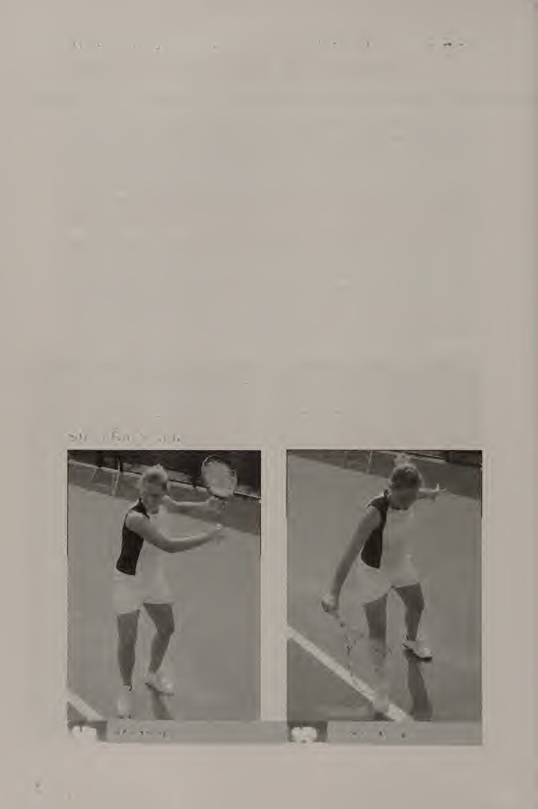
Khi bạn tăng tốc về phía trước để đánh cú, đầu vợt phải thấp hơn điểm tiếp xúc dự kiến để bạn vung vợt từ thấp lên cao (hình 4.4b). Hãy chắc chắn rằng cú đánh lùi tay trái tay bằng hai tay của cánh tay không thuận của bạn. Xoay về phía trước.
As you accelerate forward to hit the shot, the head of the racket should be lower than the anticipated contact point so that you swing from low to high (figure 4.4b). Make sure that your nondominant arm Two-Handed Backhand Backswing. Forward swing.
và vai đang đẩy vợt về phía trước. Điều này sẽ đảm bảo một cú đánh trơn tru. Bàn chân của bạn nên rộng hơn vai một chút. Tiếp xúc bóng phía trên chân trước của bạn và hơi thấp hơn mức thắt lưng. Khi tiếp xúc, chuyển trọng lượng của bạn từ chân sau ra chân trước. Cả hai cánh tay nên hơi cong. Tiếp tục đi theo hướng bắn. Đưa nó ra sân Chọn một cú trái tay Cũng như với cú thuận tay, việc thay đổi độ xoáy, quỹ đạo và tốc độ của cú trái tay có thể hữu ích tùy thuộc vào tình huống trận đấu.
and shoulder are pushing the racket forward. This will ensure a smooth stroke. Your feet should be a bit more than shoulder-width apart. Contact the ball above your front foot and slightly below waist level. At contact, transfer your weight from back to front foot. Both arms should be slightly bent. Continue following through in the direction of the shot. Take it to the court Selecting a Backhand As with the forehand, varying the spin, trajectory, and speed of the backhand can come in handy depending on the game situation.
Cú đánh trái tay phẳng là một cú đánh hữu ích cần có khi bạn muốn đánh một cú đánh xa đối thủ. Cú đánh trái tay là một trong những cú đánh hữu ích nhất cần biết trên sân tennis. Nó tương đối dễ đánh, nằm ở vị trí thấp so với mặt đất sau khi bật lên và có thể được ngụy trang, cho phép bạn thực hiện một cú bỏ nhỏ (drop shot) từ nó. Một trong những cách sử dụng cổ điển của cú đánh trái tay là cú đánh tiếp cận. Cú đánh ngược cao của cú đánh trái tay cho phép bạn thực hiện cú đánh khi bóng ở độ cao tương đối cao, giúp bạn đánh bóng sớm.
The flat backhand is a useful shot to have when you want to hit a shot away from your opponent. The slice backhand is one of the most useful shots to know on a tennis court. It is relatively easy to hit, stays low to the ground after the bounce, and can be disguised, allowing you to hit a drop shot off of it. One of the classic uses of the slice backhand is the approach shot. The high backswing of the slice backhand lets you hit the shot when the ball is relatively high, allowing you to hit the ball early.
Tác dụng của vợt cho phép bạn di chuyển vào sân theo tư thế vô lê một cách tự nhiên. Một cú đánh bằng lát có xu hướng ở vị trí thấp so với mặt đất sau khi nảy lên, điều này khiến đối thủ của bạn khó quay trở lại. Đối thủ của bạn sẽ phải đánh bạn. Cú trái tay xoáy lên bằng một tay cần một thời gian để phát triển, nhưng nếu luyện tập đủ, nó là một cú đánh rất đáng tin cậy. Do độ xoáy và quỹ đạo nên bóng có khả năng rơi vào trong. Việc đưa bóng xoáy lên vào cú đánh của bạn cũng sẽ khiến đối thủ của bạn khó xử lý, vì các cú đánh sẽ nảy lên cao, do đó đẩy đối thủ của bạn về phía sau đường cuối sân.
The racket work of the shot allows you to naturally move into the court to a volley position. A shot hit with slice tends to stay low to the ground after the bounce, which makes it difficult for your opponent to return. Your opponent will have to hit up to you. The one-handed topspin backhand takes some time to develop, but with enough practice, it is a very dependable shot. Because of the spin and trajectory, the ball is likely to land inbounds. Putting topspin on your shot will also make it difficult for your opponent to handle, as the shots will bounce high, therefore pushing your opponent behind the baseline.
Một lợi thế chiến thuật khác khi đánh một cú đánh xoáy lên là do quỹ đạo của bóng có xu hướng rất vòng, nên bạn có thể đánh những góc cực xa với ít nguy cơ đánh bóng ra xa hơn. Đối với những người mới bắt đầu, trái tay bằng hai tay có thể là một lựa chọn tốt chỉ vì có sự ổn định hơn khi có tay phụ cầm vợt. Hãy thử THẢ ĐÁNH TRÁI Bài tập này có thể được thực hiện một mình. Đứng trên vạch giao bóng, mặt quay sang một bên, phía thuận lợi của bạn ở phía trước.
Another tactical advantage to hitting a topspin shot is that because the trajectory of the ball tends to be very loopy, you can hit extreme angles with less risk of hitting the ball wide. For beginning players, the two-handed backhand may be a good choice just because there is more stability with the extra hand holding the racket. Give it a go DROP HIT BACKHAND This drill can be done alone. Stand on the service line, facing sideways, with your dominant side in front.
Giữ vợt trong tay bạn
Hold the racket in your
Hãy thử đi: Tay thuận thuận trái tay với đầu vợt hướng về phía hàng rào phía sau. Giữ một quả bóng tennis trong tay không thuận của bạn. Thả quả bóng trước mặt bạn, để nó nảy lên, bước vào và đánh một cú trái tay. Tiy đạt được 7 trên 10 lần thử ở sân đối diện. BACK HAY MỀM Đây là một bài tập dành cho đối tác. Một người chơi là người đưa bóng, người còn lại là người đánh. Cả hai đấu thủ đứng ở vạch giao bóng ở hai phía đối diện của sân, quay mặt vào nhau. Người trung chuyển sử dụng động tác ném bóng bằng tay để ném bóng về phía trái tay của người đánh.
Give it a go: Backhand dominant hand with the racket head directed toward the back fence. Hold a tennis ball in your nondominant hand. Drop the ball in front of you, let it bounce, step in, and hit a backhand. Tiy to get 7 out of 10 attempts in the opposite court. SOFT TOSS BACKHAND This is a partner drill. One player is the feeder, the other is the hitter. Both players stand at the service lines on opposite sides of the court, facing each other. The feeder uses an underhand toss to throw the ball to the hitter’s backhand side.
Người đánh thực hiện một bước tách đôi khi nhả người đưa bóng và đánh một cú trái tay. Lặp lại 10 lần rồi đổi vai. RALLY BACKHAND Đây là một bài tập dành cho đối tác. Cả hai đấu thủ đứng ở vạch giao bóng ở hai phía đối diện của sân, quay mặt vào nhau. Người chơi có bóng bắt đầu bài tập Avith thả một cú đánh trái tay, đánh vào trái tay của người kia. Tiy tiếp tục đánh bóng, luôn cố gắng đánh nó về phía trái tay của đối tác. Bất kỳ quả bóng nào không nảy hai lần và bị đánh trái tay đều hợp pháp.
The hitter performs a split step on the feeder’s release and hits a backhand. Repeat 10 times and then switch roles. RALLY BACKHAND This is a partner drill. Both players stand at the service lines on opposite sides of the court, facing each other. The player with the ball starts the drill Avith a drop hit backhand, hitting it to the other person’s backhand. Tiy to continue the rally, always trying to hit it to your partner’s backhand.
Đếm xem bạn có thể đánh được bao nhiêu quả liên tiếp. CROSSCOURT BACKHAND Đây là phiên bản nâng cao hơn của bài tập tập hợp. Cả hai đấu thủ đều bắt đầu ở vạch cuối sân (baseline) ở hai phía đối diện của sân. Một lần nữa, hãy đếm xem bạn có thể tiếp tục chơi bao nhiêu quả bóng. Hãy nhớ rằng, bất kỳ quả bóng nào không nảy hai lần và bị đánh trái tay đều là hợp pháp, vì vậy HÃY HÀNH ĐỘNG!! Cố gắng bắn được 12 phát liên tiếp. HÌNH TÁM Bây giờ chúng ta đã biết cách đánh cú thuận tay cũng như cú đánh trái tay, chúng ta có thể kết hợp hai cú đánh trong một bài tập.
Any ball that doesn’t bounce twice and is hit as a backhand is legal. Keep count of how many you can hit in a row. CROSSCOURT BACKHAND This is a more advanced version of the rally drill. Both players start at the baselines on opposite sides of the court. Again, keep count of how many balls you can keep in play. Remember, any ball that doesn’t bounce twice and is hit as a backhand is legal, so HUSTLE!! Try to get to 12 consecutive shots. FIGURE EIGHTS Now that we know how to hit a forehand as well as a backhand, we can combine the two shots in a drill.
Đây là buổi diễn tập của đối tác. Người chơi đứng ở vạch giao bóng ở phía đối diện của sân. Một người chơi sẽ là người chơi “xuống tuyến”; người chơi này sẽ đánh những cú đánh thẳng song song với đường biên đánh đơn. Đấu thủ còn lại sẽ là đấu thủ “chéo”; người chơi này sẽ đánh tất cả các cú đánh từ phía bên phải của mình (bên phải) sang bên quảng cáo của đồng đội mình (bên trái) và ngược lại
This is a partner drill. Players stand at the service lines on opposite sides of the court. One player will be the “down-the-line” player; this player will hit straight shots parallel to the singles sideline. The other player will be the “crosscourt” player; this player will hit all shots from his or her deuce side (right side) to his or her partner’s ad side (left side) and vice versa
Hãy thử: Trái tay (hình 4,5). Điều này sẽ tạo ra một mẫu hình số tám. Sau khi bạn bắn được 10 lần liên tiếp, hãy đổi vai và lặp lại. Khi bạn đã khá hơn, hãy thử thực hiện bài tập này từ vạch cuối sân (baseline). VÒNG QUANH THẾ GIỚI Đây là một trò chơi nhóm thú vị dành cho sáu người trở lên. Xếp hàng ở vạch cuối sân (baseline) ở phía đối diện của lưới. Huấn luyện viên hoặc người trung chuyển đưa quả bóng đầu tiên vào cuộc. Mỗi đấu thủ đánh một lượt và chạy về bên phải để nối hàng bên kia sân (hình 4.6).
Give it a go: Backhand (figure 4,5). This should create a figure-eight pattern. After you get to 10 consecutive shots, switch roles and repeat. As you get better, try doing this drill from the baseline. AROUND THE WORLD This is a fun group game for six or more people. Line up at the baselines on opposite sides of the net. The coach or feeder puts the first ball into play. Each player hits one shot and runs to the right to join the line on the other side of the court (figure 4.6).
Nếu một tay vợt đánh bóng ra ngoài biên, vào lưới hoặc để bóng nảy hai lần, tay vợt đó sẽ đánh ra một quả và bóng chết. Một người chơi bị loại sau ba lần ra ngoài. Người trung chuyển bắt đầu loạt bóng bền (rally) sau mỗi quả bóng chết. Khi trận đấu chỉ còn lại hai người chơi, thay vì chạy quanh sân, mỗi người chơi phải thả vợt của mình xuống và xoay quanh vợt sau mỗi lần đánh. Người chơi còn lại mà không nhận được ba điểm là người chiến thắng.
If a player hits the ball out of bounds, into the net, or lets it bounce twice, the player gets one out and the ball is dead. A player is out after three outs. The feeder starts the rally after every dead ball. When there are only two players left in the game, instead of running around the court, each player must drop his or her racket and spin around the racket after hitting each shot. The player who remains without getting three outs is the winner.
Điểm Đặt Bây giờ bạn đã biết cách đánh thuận tay và trái tay. Điều quan trọng là phải tuân thủ những điều cơ bản để cải thiện tính nhất quán và độ chính xác. Đảm bảo vị trí sẵn sàng, cách cầm, bước tách, động tác bằng chân, kỹ thuật đánh và phục hồi của bạn là chính xác. Cần phải luyện tập, luyện tập, luyện tập để làm quen với các độ nảy, độ xoáy, quỹ đạo và tốc độ khác nhau của quả bóng tennis đang bay tới. Với thời gian và sự kiên nhẫn, bạn sẽ có khả năng đánh giá tốt hơn vị trí và thời điểm bạn nên thực hiện cú đánh của mình.
Set Point Now you know how to hit forehands and backhands. It’s important to stick with the basics to improve consistency and accuracy. Make sure your ready position, grips, split step, footwork, stroke technique, and recovery are correct. It takes practice, practice, practice to get used to the different bounces, spins, trajectories, and speeds of the incoming tennis ball. With time and patience, you will be better able to judge where and when you should hit your shots.
Chương tiếp theo sẽ tập trung vào những cú đánh mà bạn đánh trước khi chúng nảy lên, được gọi là cú vô lê.
The next chapter will focus on shots that you hit before they bounce, called volleys.
Chương 5: Cú vô lê thuận tay và trái tay trên lưới
Cú vô lê là một trong những cú đánh bị hiểu lầm nhiều nhất trong quần vợt. Hầu hết người chơi đều coi đây là một cú đánh cực kỳ khó đánh, có lẽ vì người ta chú trọng nhiều đến việc phát triển các cú đánh trên mặt đất khi lần đầu tiên học cách chơi quần vợt và cũng vì những người mới bắt đầu có thể sợ phải ở trên lưới. Đây thực sự là một cảnh quay đơn giản, không phức tạp để thực hiện nếu được thực hiện đúng và chính xác. Nói một cách đơn giản, cú vô lê là cú đánh bạn thực hiện trước khi bóng nảy lên. Nó thường được đánh từ giữa sân và lưới.
Volley
The volley is one of the most misunderstood shots in tennis. Most players perceive it as an incredibly difficult shot to hit, probably because there is a lot of emphasis on developing ground strokes when first learning how to play tennis, and also because beginners may fear being at the net. It is actually a simple, uncomplicated shot to execute if done correctly and precisely. Simply put, a volley is a shot that you hit before the ball bounces. It is usually hit from between midcourt and the net.
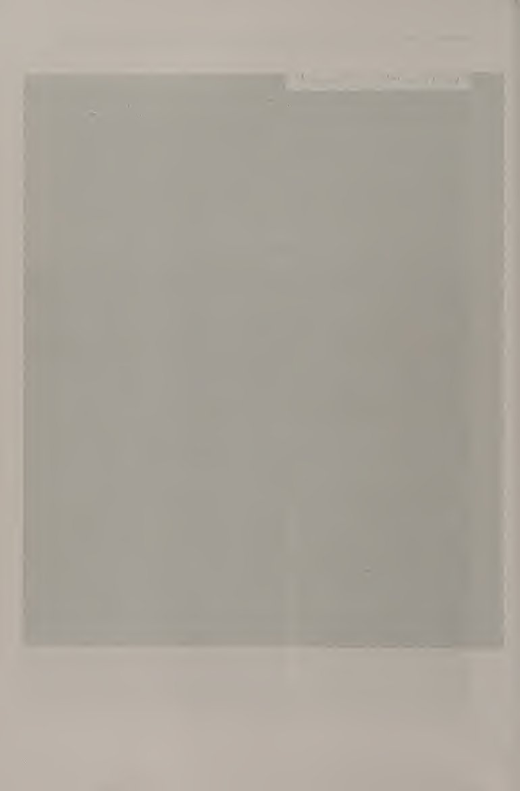
Hầu hết công việc bạn cần làm để đánh một cú vô lê ổn định, chính xác, hiệu quả được thực hiện bằng chân chứ không phải bằng vợt, đây là điểm khác biệt lớn so với các cú đánh trên mặt đất. Những vận động viên cú vô-lê như Martina Navratilova, Stefan Edberg và Pete Sampras, một trong những vận động viên giỏi nhất thế giới, có động tác bằng chân tuyệt vời. Họ làm cho việc sử dụng vợt trở nên dễ dàng bằng cách hoạt động chân thật chăm chỉ để luôn ở vị trí tốt.
Most of the work you need to do to hit a consistent, accurate, effective volley is done with your feet, not with your racket, which is a major difference from the ground strokes. Volleyers such as Martina Navratilova, Stefan Edberg, and Pete Sampras, some of the best in the world, had amazing footwork. They made the racket work look easy by working their feet really hard so that they were always in good position. Forehand and Backhand Volleys
Cú vô lê thuận tay và trái tay Nói chung, các cú vô lê được thực hiện giữa sân và lưới. Để tập đánh vô-lê, hãy đứng cách lưới từ 8 đến 10 feet ở tư thế sẵn sàng. Sử dụng tay cầm lục địa. Đối với cú vô lê thuận tay (hình 5.1), bắt đầu bước về phía trước bằng chân trái (nếu bạn thuận tay phải). Trong khi giữ đầu vợt phía trên cán vợt, hãy đưa vợt lùi lại một khoảng rất ngắn về phía thuận tay của bạn. Duy trì một mặt vợt mở; điều này có nghĩa là mặt vợt phải hướng lên trên một chút.
In general, volleys are hit between midcourt and the net. To practice volleying, stand 8 to 10 feet away from the net in the ready position. Use the continental grip. For a forehand volley (figure 5.1), start stepping forward with your left foot (if you are right-handed). While keeping the racket head above the racket grip, take the racket back a very short distance on your forehand side. Maintain an open racket face; this means that the racket face should be facing slightly up.
Mặt vợt phải ở phía trên và phía sau cán vợt. Khi bạn bắt đầu di chuyển vợt về phía trước để đánh cú vô lê, hãy bước bằng chân trái và tiếp tục di chuyển vợt về phía trước mà không thay đổi góc đầu vợt quá nhiều. Giả vờ như bạn đang nhấn một nút lớn bằng vợt của mình. Nếu bạn thay đổi góc đầu vợt, bạn sẽ không thể nhấn nút thẳng. Tay cầm của bạn phải dẫn đầu vợt khi bắt đầu chuyển động về phía trước.
The racket face should be above and behind the grip of the racket. As you stcirt moving your racket forward to hit the volley, step with your left foot and continue moving the racket forward without changing the racket head angle too much. Pretend you are pressing a big button with your racket. If you change the racket head angle, you won’t be able to push the button straight on. Your grip should lead the racket head at the beginning of the forward movement.
Việc tiếp xúc phải được thực hiện tốt ở phía trước cơ thể bạn. Bước bằng chân trái để đà của bạn di chuyển về phía trước. Khi bạn thực hiện theo, vợt sẽ ở phía trước tay cầm của bạn. Mở mặt vợt ra một chút để tạo xoáy xuống cho quả bóng. Chuyển động này sẽ chuyển đổi suôn sẻ sang vị trí sẵn sàng cho lần chụp tiếp theo. Cú đánh ngược tay vô lê. Hãy liên lạc.
Contact should be made well in front of your body. Step with your left foot so that your momentum moves forward. As you follow through, the racket will end up in front of your grip. Open up the face of the racket a bit more to put some underspin on the ball. This movement should transition smoothly into the ready position for the next shot. Forehand Volley Backswing. Make contact.
bạn có thể làm được!... ....... Đối với cú vô lê trái tay (hình 5.2), vị trí sẵn sàng và bước tách được thực hiện theo cách tương tự như đối với cú vô lê thuận tay. Khi bóng đến phía trái tay của bạn, hãy bước bằng chân phải (nếu bạn thuận tay phải). Với bàn tay không thuận của bạn ở cổ vợt và bàn tay thuận của bạn ở tay cầm, hãy đưa vợt trở lại phía trái tay của bạn. Mặt vợt phải mở, giống như trong cú vô lê thuận tay. Hãy chắc chắn rằng mặt vợt ở trên amd phía sau tay cầm của vợt.
you can do it!... ....... For a backhand volley (figure 5.2), the ready position and split step are executed the same way as for a forehand volley. As the ball comes to your backhand side, step with your right foot (if you are right-handed). With your nondominant hand at the throat of the racket and your dominant hand at the grip, take the racket back to your backhand side. The racket face should be open, as in the forehand volley. Make sure that the racket face is above amd behind the grip of the racket.
Khi bạn tiến về phía trước để đánh cú vô lê, hãy thả vợt bằng tay không thuận. Bây giờ bàn tay này sẽ hỗ trợ giữ thăng bằng trong suốt phần còn lại của cú đánh. Tiếp tục di chuyển vợt về phía trước, duỗi thẳng cánh tay thuận khi bạn thực hiện theo. Cố gắng giữ góc của đầu vợt giống nhau trong suốt cú đánh. Góc đầu vợt mở này sẽ giúp tạo xoáy xuống cho bóng. Tiếp xúc với quả bóng ở phía trước cơ thể bạn. Bước bằng chân phải (nếu bạn thuận tay phải).
As you move forward to hit the volley, release the racket with your nondominant hand. Now this hand will aid in balance throughout the rest of the shot. Keep moving the racket forward, straightening the dominant arm as you follow through. Try to keep the angle of the racket head the same throughout the shot. This open racket head angle will help put underspin on the ball. Make contact with the ball in front of your body. Step with the right foot (if you’re right-handed).
Điều này rất quan trọng trong việc góp phần vào sự tiến lên phía trước. Tiếp tục theo dõi về phía trước. Cánh tay không thuận của bạn nên di chuyển xa hơn khỏi cơ thể để giữ thăng bằng. cú vô lê trái tay
This is very important in contributing to the forward movement. Keep following through forward. Your nondominant arm should move fgirther away from the body in order to maintain balance. Backhand Volley
Lựa chọn và sử dụng: Cú vô-lê Sử dụng kiểu cầm vợt lục địa cho cả cú vô lê thuận tay và trái tay. Có hai lý do cơ bản tại sao có một cách cầm vợt cho cả cú vô lê thuận tay và trái tay. Đầu tiên, kiểu cầm vợt kiểu châu lục cho phép truyền xoáy xuống cho cả hai cú đánh. Vòng xoáy xuống này cho phép bạn đánh những cú đánh sâu từ cự ly gần. Thứ hai, vì bạn đang ở gần lưới nên bạn không có thời gian để đổi cách cầm vợt. Bước tách bóng cũng trở nên vô cùng quan trọng khi bạn thực hiện cú vô lê.
More to choose and use: Volley Use the continental grip for both forehand and backhand volleys. There are two fundamental reasons why there is one grip for both forehand and backhand volleys. First, the continental grip allows for backspin to be imparted on both shots. This backspin allows you to hit deep shots from close up. Second, since you are close to the net, you don’t have time to switch grips. The split step also becomes incredibly important when you hit volleys.
Như tôi đã đề cập, động tác bằng chân chính xác là chìa khóa để có một cú vô lê tốt và bước tách đôi là rất quan trọng để bắt đầu. Từ vị trí sẵn sàng, hãy quan sát cú đánh của đối thủ để biết khi nào nên tách bước. Đặt trọng lượng của bạn lên quả bóng của bàn chân bạn. Thực hiện bước tách bóng khi bạn nghĩ đối thủ sẽ đánh bóng. Khi tiếp đất, bạn sẽ biết mình sẽ phải đánh bóng vào bên nào của cơ thể. Những cú vô lê có thể được đánh từ hầu hết mọi nơi trên sân.
As 1 mentioned, precise footwork is the key to a good volley, and the split step is crucial to getting started. From the ready position, watch your opponent’s stroke so that you know when to split step. Have your weight on the balls of your feet. Execute the split step when you think your opponent will hit the ball. As you land, you will know which side of your body you will have to hit the ball on. Volleys can be hit from almost anywhere on the court.
Tùy thuộc vào vị trí của bạn, bạn có thể đánh một kiểu cú vô-lê khác nhau. Nếu bạn đang ở giữa sân, bạn có thể phải đánh một nửa quả vô lê. Nếu bạn chỉ cách lưới vài feet và được đưa cho một quả bóng bay, bạn có thể thực hiện được một cú vô lê ném xa. Nếu bạn đang ở gần lưới và bị một cú sút mạnh về phía bạn, bạn có thể phải thực hiện một cú vô lê phản ứng. Half Volley AhalfvoUey (flgure 5.3) là cú đánh được thực hiện ngay sau khi bóng nảy. Về mặt kỹ thuật, nó không phải là một cú vô lê, nhưng cơ chế của cú đánh rất giống với cú vô lê.
Depending on where you are, you might hit a different type of volley. If you are at midcourt, you might have to hit a half volley. If you are only a couple feet from the net and you are given a floaty ball, you might be able to hit a putaway volley. If you are close to the net and are given a hard shot right at you, you might have to hit a reaction volley. Half Volley AhalfvoUey (flgure 5.3) is a shot that is hit immediately after the bounce. Technically it is not a volley, but the mechanics of the stroke are very similar to the volley.
Cú vô lê một nửa được sử dụng khi người chơi đứng quá gần điểm bóng nảy lên để đánh nó như một cú đánh mặt đất nhưng lại quá xa để đánh nó như một cú vô lê. Nó thường được đánh xung quanh đường giao bóng nhưng cũng có thể được đánh từ các khu vực khác của sân. Bạn có thể sử dụng kiểu cầm vợt kiểu đông hoặc kiểu lục địa để thực hiện cú vô lê một nửa. Sau khi thực hiện bước tách vợt thì lấy vợt về
The half volley is used when the player is standing too close to the point where the ball bounces to hit it as a ground stroke but too far away to hit it as a volley. It is usually hit around the service line but can be hit from other areas of the court as well. You can use either an eastern or continental grip for the half volley. After executing the split step, take the racket back
Thêm lựa chọn và sử dụng: Cú vô-lê nhẹ. Bởi vì bạn sẽ đánh bóng ngay sau khi nảy lên, bạn phải hạ thấp người xuống bằng cách uốn cong đầu gối. Mở rộng thế đứng của bạn để duy trì thăng bằng từ vị trí rất thấp này. Cú đánh là một cú swing khá phẳng. Chuyển trọng lượng của bạn từ chân sau sang chân trước. Đây là nơi mà hầu hết các chuyển động về phía trước sẽ đến từ đó. Đi theo hướng tới mục tiêu. Nếu điểm tiếp xúc của bạn ở phía trước cơ thể, cú đánh của bạn sẽ khá dài.
More to choose and use: Volley slightly. Because you will be hitting the ball Immediately after the bounce, you must get down low by bending your knees. Widen your stance to maintain your balance from this very low position. The stroke is a fairly flat swing. Transfer your weight from back to front leg. This is where most of the forward movement will come from. Follow through toward the target. If your contact point is well in front of your body, your stroke will be a fairly long one.
Nếu điểm tiếp xúc của bạn gần cơ thể, cú đánh của bạn sẽ ngắn hơn nhiều. Tiếp xúc với quả bóng khi nó bay lên khỏi mặt đất. Sau khi thực hiện cú đánh, tiếp tục tiến về phía lưới. Cú vô lê thấp Một cú vô lê thấp (hình 5.4) có thể khó xử lý nếu không sử dụng đúng kỹ thuật. Điều quan trọng nhất mà một tay vợt nên làm khi đối mặt với một cú vô lê thấp là hạ bóng xuống thấp! Cú vô lê thấp được thực hiện theo cách tương tự như cú vô lê ngoại trừ một số ngoại lệ: mặt vợt phải thoáng hơn một chút để Edd có thể phá lưới; cơ thể được hạ xuống bằng cách uốn cong đầu gối để bạn có thể đặt vợt bên dưới quả bóng; và thế đứng của bạn phải rộng hơn để có thể giữ thăng bằng khi thực hiện cú đánh ở vị trí thấp này.
If your contact point is close to your body, your stroke will be much shorter. Contact the ball as it rises from the ground. After you execute the shot, keep moving forward toward the net. Low Volley A low volley (figure 5.4) can be difficult to handle if the right technique isn’t used. The most important thing that a player should do when faced with a low volley is to get down low with the ball! The low volley is executed in the same way as a volley with a few exceptions: the racket face should be slightly more open in order to Edd with net clearance; the body is lowered by bending the knees so that you can put your racket underneath the ball; and your stance should be wider so that you can maintain your balance through the shot in this low position.
Điều quan trọng là bạn cũng phải có chân. Cú vô lê putaway được đánh từ rất gần lưới. Như thuật ngữ này ngụ ý, nó được sử dụng để giành điểm bằng cách đưa bóng ra xa và phải là quả bóng cuối cùng được đánh vào một điểm. Điều quan trọng là bạn phải thực hiện cú vô lê này khi bóng ở trên lưới. Tìm góc mà bạn nên đánh bóng để thực sự đưa nó ra khỏi sân. chuyển trọng lượng của bạn từ sau ra trước
It’s important that you also leg. Putaway Volley The putaway volley is hit from very close to the net. As the term implies, it is used to win the point by putting the ball away and should be the last ball hit in a point. It is important that you hit this volley when the ball is above the net. Find the angle at which you should hit the ball in order to actually put it away off the court. transfer your weight from back to front More to choose and use: Volley
Nhiều lựa chọn và sử dụng hơn: Cú vô-lê Cú vô lê gạt bóng bắt đầu bằng việc nhận biết rằng tốc độ và độ cao của bóng tới cũng như vị trí của bạn trên sân giúp bạn có thể thực hiện được cú vô lê gạt bóng. Một khi bạn nhận ra rằng mình có thể thực hiện một cú vô lê gạt bóng, công việc tiếp theo của bạn là tiếp cận quả bóng trước khi nó ở dưới mức lưới. Đôi khi nó có thể là một bước đi, những lần khác bạn có thể phải chạy nước rút để đạt được nó. Khi bạn đã ở đủ gần quả bóng để đánh một cú vô lê, hãy đảm bảo rằng bạn nghiêng thân và vợt sao cho cú đánh bạn sắp đánh có một góc nhọn ra khỏi sân (hình 5.5).
The putaway volley starts with recognizing that the speed and height of the incoming ball and your position on the court make it possible for you to hit a putaway volley. Once you recognize that you can hit a putaway volley, your next job is to get to the ball before it is below the level of the net. Sometimes it may be a step away, other times you may have to sprint to it. Once you are close enough to the ball to hit a volley, make sure that you angle your body and racket so that the shot you are about to hit has a sharp angle off the court (figure 5.5). Take your racket slightly back and accelerate forward through the shot.
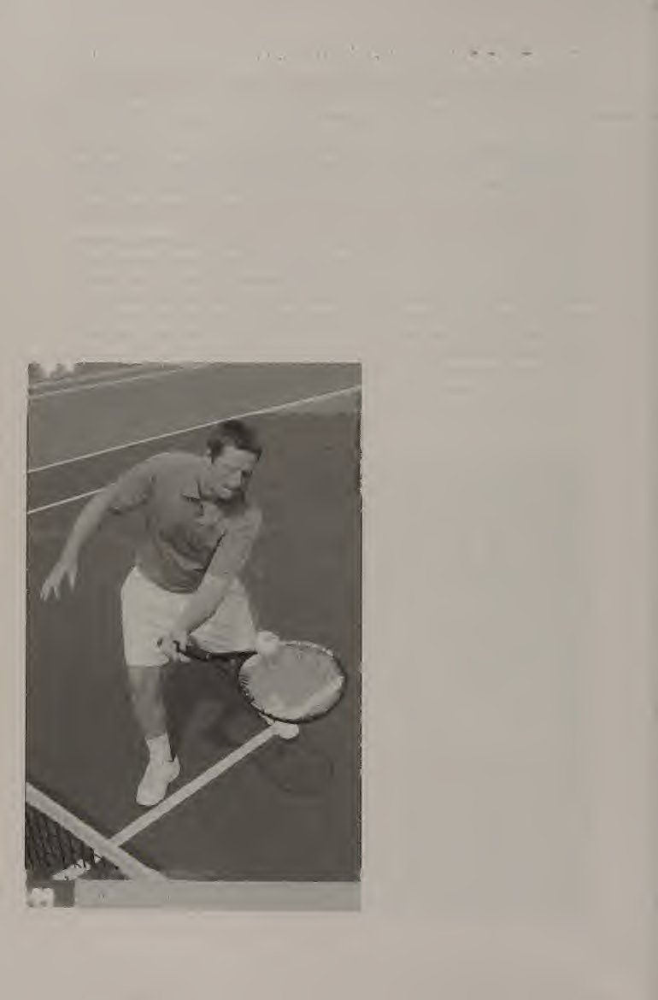
Đưa vợt của bạn lùi lại một chút và tăng tốc về phía trước trong cú đánh. Đảm bảo giữ cho bàn chân của bạn di chuyển qua điểm tiếp xúc của cú vô lê. Cú vô lê phản ứng (hình 5.6) thường được đánh từ gần lưới. Hãy sử dụng nó khi quả bóng chạm tới bạn với tốc độ nhanh và nhắm thẳng vào cơ thể bạn! Về cơ bản, điều bạn cần làm bây giờ là bảo vệ cơ thể của mình. Thực hiện cú đánh như một cú vô lê trái tay ngay trước cơ thể bạn. Thực hiện cú đánh như một cú đánh trái tay đảm bảo rằng cánh tay của chính bạn sẽ không cản trở cú đánh.
Be sure to keep your feet moving through the point of contact of the volley. Reaction Volley Reaction voUeys (figure 5.6) are usually hit from veiy close to the net. Use it when the ball hit to you is fast and aimed right at your body! Basically, what you need to do now is protect your body. Take the shot as a backhand volley right in front of your body. Taking the shot as a backhand ensures that your own arm won’t be in the way of the shot. Make sure that the racket face is perpendicular to the ground and hold on to your racket tightly at the moment of impact.
Đảm bảo mặt vợt vuông góc với mặt đất và giữ chặt vợt tại thời điểm va chạm. Nếu vợt không được giữ chặt, nó có thể xoay quanh tay khi va chạm, làm thay đổi góc đầu vợt và dẫn đến mất kiểm soát hướng của cú vô lê.
If the racket is not held tightly, it may rotate around in the hand on impact, changing the racket head angle and resulting in a loss of control of the direction of the volley.
Lựa chọn cú vô-lê Việc lựa chọn cú vô-lê thường phụ thuộc vào vị trí của bạn trên sân. Ví dụ, những cú vô lê nửa sân thường được đánh từ giữa sân, trong khi những cú vô lê từ xa và những cú vô lê phản công thường được đánh từ gần lưới. Điều quan trọng là phải nhận thức được vị trí của mình trên sân và nhận ra cú đánh nào sẽ hiệu quả nhất. Một nửa cú vô lê thường được thực hiện khi một tay vợt đi vào lưới sau khi thực hiện một cú giao bóng hoặc một cú đánh tiếp cận. Cú vô lê một nửa là cú đánh chuyển từ vị trí cơ bản sang vị trí lưới.
Volley Choices The choice of volley usually depends on your position on the court. For example, half volleys are usually hit from midcourt, while putaway volleys and reaction volleys are usually hit from close to the net. It is important to be aware of your position on the court and to recognize which shot will be most effective. Half volleys usually are hit when a player is going to the net after hitting a serve or an approach shot. The half volley is the transition shot from a baseline position to a net position.
Đây là một cú đánh khó nhưng rất hữu ích. Bởi vì nửa quả vô lê được đánh ngay sau khi bóng nảy lên, nó giúp cho đấu thủ không bị buộc phải rời sân. Nó cũng cho phép người chơi lao tới đối thủ của mình bằng cách giảm thời gian giữa cú nảy và cú đánh. Cú vô lê một nửa cũng được sử dụng trong các tình huống trong đó độ xoáy, góc, quỹ đạo và/hoặc tốc độ của bóng có thể phức tạp. Ví dụ: nếu đối thủ của bạn đánh một cú thuận tay rất cao, sâu với nhiều xoáy lên, bạn có thể muốn đánh một nửa cú vô lê từ đường cuối sân.
It is a difficult shot but a very useful one. Because the half volley is hit immediately after the bounce, it keeps a player from being forced off the court. It also lets the player rush his or her opponent by reducing the time between the bounce and the hit. A half volley is also used in situations in which the spin, angle, trajectory, and/or speed of the ball might be tricky. For example, if your opponent hits a very high, deep forehand with a lot of topspin, you might want to hit a half volley from the baseline.
Nếu không, nếu bạn để nó nảy lên, nó có thể nảy qua hàng rào phía sau trước khi bạn kịp đưa vợt của mình đến gần nó! Những cú vô lê thấp cũng thường được đánh trúng khi một tay vợt đang vào lưới. Điều quan trọng là bạn phải giữ mặt vợt mở và tiếp tục di chuyển về phía trước để có được quỹ đạo bóng tốt. Những cú vô lê Putaway thường được thực hiện sau khi bạn vừa tung ra một cú đánh rất mạnh khiến đối thủ phản ứng yếu ớt. Điều quan trọng là bạn phải thực hiện cú vô lê này khi bóng ở trên độ cao của lưới.
Otherwise, if you let it bounce, it might bounce over the back fence before you can even get your racket near it! Low volleys are also usually hit when a player is going to the net. It is important that you keep the racket face open and keep moving forward to get a good trajectory on the ball. Putaway volleys are usually hit after you have just hit a very forceful shot to cause a weak response from your opponent. It is important that you hit this volley when the ball is above the height of the net.
Một tình huống có thể xảy ra khi bạn muốn sử dụng cú vô lê gạt bóng là nếu bạn vừa thực hiện một cú đánh mặt đất rất mạnh, khiến đối thủ của bạn đánh một quả bóng rất mềm, nông về phía bạn. Hãy nhận biết tình huống này và nhanh chóng lấy bóng để vào tư thế thực hiện cú vô lê. Đảm bảo bóng luôn ở trên độ cao của lưới. Hãy tìm một góc sao cho đối thủ của bạn hầu như không thể đánh trả được. Cú vô lê phản ứng được thực hiện khi bạn ở trên lưới và một cú sút đang lao thẳng vào bạn.
A possible situation in which you want to use a putaway volley is if you have just hit a very strong baseline ground stroke, causing your opponent to hit a very soft, shallow ball back to you. Recognize this situation and get to the ball quickly so that you are in position to hit a volley. Make sure that the ball is still above the height of the net. Find an angle that will make it virtually impossible for your opponent to hit it back. The reaction volley is hit when you are at the net and a shot is coming straight at you.
Thực hiện cú đánh này như một cú đánh trái tay, đảm bảo rằng mặt vợt của bạn vuông góc với mặt đất. Nó giống một pha cản phá hơn là một cú vô lê. Những cú vô lê phản ứng xảy ra khi đối thủ của bạn tung một cú sút thẳng, mạnh vào thẳng bạn vì họ bị áp lực về thời gian và phải vung nhanh để thực hiện cú sút hoặc vì họ muốn đánh một cú đánh nhanh. Trong cả hai trường hợp, hãy đảm bảo rằng bạn đang đợi với vợt ở vị trí sẵn sàng trước mặt. Khi bạn thấy bóng bay thẳng về phía mình, bạn chỉ cần chặn cú đánh và giữ chặt vợt.
Take this shot as a backhand, making sure that your racket face stays perpendicular to the ground. It is more a block than a volley. Reaction volleys happen when your opponent hits a flat, hard shot right at you either because he or she is pressured for time and must swing fast to get a shot off or because he or she wanted to hit a fast shot. In either case, make sure that you are waiting with your racket in front of you in the ready position. When you see the ball coming right at you, simply block the shot and hold on to your racket.
Hãy thử xem: Cú vô-lê CHƠI BẮT Đây là bài tập của đối tác. Các đấu thủ đứng cách lưới khoảng 10 feet ở hai phía đối diện của sân, quay mặt vào nhau (hình 5.7). Không cần vợt cho bài tập này, chỉ cần bóng. Một người chơi là người cho ăn, người còn lại là người bắt bóng. Người giao bóng sử dụng động tác tung bóng bằng tay để ném bóng về phía thuận tay của người bắt bóng. Người bắt bóng thực hiện bước tách bóng khi người thả bóng, bước ngang bằng chân không thuận (đối với người thuận tay phải, chân trái) và bắt bóng bằng tay thuận ở phía trước cơ thể và mu bàn tay về phía hàng rào phía sau.
Give it a go: Volley PLAY CATCH This is a partner drill. Players stand about 10 feet from the net on opposite sides of the court, facing each other (figure 5.7). No rackets are needed for this drill, just balls. One player is the feeder, the other is the catcher. The feeder uses an underhand toss to throw a ball to the catcher’s forehand side. The catcher executes a split step on the feeder’s release, steps across with the nondominant foot (for a right-hander, the left foot), and catches the ball with the dominant hand in front of the body and the back of the hand toward the back fence.
Cánh tay của người bắt bóng phải thẳng. Lặp lại 10 lần và đổi vai. Bài tập này cũng có thể được thực hiện cho cú trái tay. Người giao bóng sử dụng động tác tung bóng bằng tay để ném bóng về phía trái tay của người bắt bóng. Người bắt bóng thực hiện bước tách bóng khi người thả bóng, bước ngang bằng chân thuận (đối với người thuận tay phải, chân phải) và chặn bóng bằng mu bàn tay thuận ở phía trước cơ thể. Lặp lại 10 lần và đổi vai. BÓNG CHUYỀN TRƯỚC Đây là bài tập của đối tác.
The catcher’s arm should be straight. Repeat 10 times and switch roles. This drill can be done for the backhand as well. The feeder uses an underhand toss to throw a ball to the catcher’s backhand side. The catcher executes a split step on the feeder’s release, steps across with the dominant foot (for a right-hander, the right foot), and blocks the ball with the backside of the dominant hand in front of the body. Repeat 10 times and switch roles. VOLLEY IN FRONT This is a partner drill.
Thực hiện theo các quy trình tương tự như thao tác bắt bóng, nhưng người bắt bóng nên sử dụng vợt thay vì dùng tay. VOLLEY-VOLLEY This is a partner drill. Các đấu thủ đứng ngay bên trong vạch giao cầu ở phía đối diện của sân (hình 5.8). Mục tiêu là tung ra càng nhiều cú vô lê liên tiếp vào nhau càng tốt. The split step is very important in this drill! Try not to let the ball bounce. Bạn có thể bắt đầu bằng cách đập bóng qua lại với nhau. Khi bạn đã thành thạo hơn, hãy lùi lại vài feet so với vạch giao bóng và thực hiện cú vô lê của mình.
Follow the same procedures as the catch drill, but the catcher should use a racket instead of the hand. VOLLEY-VOLLEY This is a partner drill. Players stand just inside the service line on opposite sides of the court (figure 5.8). The goal is to hit as many consecutive volleys to each other as possible. The split step is very important in this drill! Try not to let the ball bounce. You can start by just bumping the ball back and forth to each other. As you get better at it, move back a couple of feet from the service line and flatten out your volleys.
Tiy phải thực hiện được 20 cú đánh liên tiếp mà không để bóng chạm đất.
Tiy to get to 20 consecutive hits without letting the ball touch the ground.
Hãy thử đi: Cú vô-lê BRUTAL VOLLEY Đây là một phiên bản khó hơn của bài tập cú vô-lê-cú vô-lê. Trong bài tập này, các cú vô lê một nửa, các cú vô lê thông thường, các cú vô lê đẩy và các cú vô lê phản ứng được sử dụng. Các đấu thủ đứng ở hai phía đối diện của sân ở khoảng giữa sân. Chỉ sử dụng một nửa sân. Start with a ball out of the hand. Cả hai tay vợt đều phải di chuyển về phía lưới sau mỗi cú đánh. Sau khi đánh xong, quay trở lại giữa sân và bắt đầu lại. CÂU CHUYỆN BÓNG CHUYỀN wmmm- Đây là bài tập của đối tác.
Give it a go: Volley BRUTAL VOLLEY This is a more difficult version of the volley-volley drill. In this drill, half volleys, regular volleys, putaway volleys, and reaction volleys are used. Players stand on opposite sides of the court at about midcourt. Use only half the court. Start with a ball out of the hand. Both players try to move in toward the net with each shot. After a rally is done, go back to midcourt and start again.
Trong bài tập này, một đấu thủ nên bắt đầu từ lưới và người kia nên xuất phát ở đường cuối sân ở hai phía đối diện của sân. Người chơi trên lưới đánh cú vô lê và người chơi ở cuối sân đánh cú đánh nền. Khi bạn đạt được 20 lượt truy cập liên tiếp, hãy đổi vai. PASSING SHOT GAME This is a partner game. Trong trò chơi này, một người chơi bắt đầu ở lưới và người kia ở đường cuối sân. Một trong hai người chơi có thể bắt đầu trận đấu với một quả bóng ra khỏi tay. Phải thực hiện được ba cú đánh giao hữu trước khi tính điểm.
VOLLEY-GROUND STROKES wmmmThis is a partner drill. In this drill, one player should start at the net and the other at the baseline on opposite sides of the court. The net player hits volleys and the baseline player hits ground strokes. When you get to 20 consecutive hits, switch roles. PASSING SHOT GAME This is a partner game. In this game, one player starts at the net and the other at the baseline. Either player can start the point with a ball out of the hand. Three friendly shots must be hit before the point is played out.
Chơi tới bảy điểm (phải thắng cách biệt hai điểm), sau đó đổi vai.
Play to seven points (must win by two points), then switch roles.
Các cú chuyền điểm điểm cho phép bạn tận dụng các tình huống trong đó việc chuyển trọng lượng hiệu quả hơn việc xoay cơ thể hoặc tác dụng vợt. Bước tách bóng cực kỳ quan trọng trong việc vào vị trí để thực hiện cú vô lê tốt. Khi bạn bước ra khỏi bước tách, hãy bước về phía trước để thực hiện cú vô lê. Thông qua luyện tập, bạn sẽ học được cách có thái độ cầu tiến khi thực hiện cú vô lê và vượt qua nỗi sợ hãi khi vào lưới. Theo thời gian, cú vô lê của bạn sẽ trở thành một cú đánh rất hiệu quả và thú vị.
Set Point Volleys enable you to take advantage of situations in which weight transfer is more effective than body rotation or racket work. The split step is extremely important in getting in position to hit a good volley. As you step out of your split step, try to step forward into the volley. With practice, you will learn to have a forward attitude when hitting volleys and overcome the fear of being at the net. Over time, your volley should become a very effective and fun shot to hit.
Cú đánh tiếp theo, cú lốp bóng, tương tự như cú đánh nền. Nó có thể được đánh ở cả hai bên thuận tay và trái tay. Sự khác biệt chính giữa cú lốp bóng và cú đánh nền là cú lốp bóng có quỹ đạo cao.
The next shot, the lob, is similar to a ground stroke. It can be hit on both the forehand and backhand sides. The main difference between a lob and a ground stroke is that lobs have a high trajectory.
Chương 6: Lob lốp bóng phòng thủ vs. Lob xoáy lên tấn công
Cú lốp bóng là một cú đánh trên mặt đất thường được đánh từ đường cuối sân và được đánh cao và sâu. Có rất nhiều lý do chính đáng để thực hiện một cú lốp bóng. Cách sử dụng lốp bóng phổ biến nhất là khi đối thủ của bạn ở trên lưới và bạn muốn đánh bóng qua người đó hoặc bạn muốn khiến đối phương đánh một cú đánh khó qua đầu. Một thời điểm tốt khác để thực hiện cú lốp bóng là khi bạn bị kéo ra khỏi sân ở giữa thời điểm và bạn muốn cho mình thêm thời gian để hồi phục. Những lý do chính đáng khác để thực hiện cú lốp bóng là nếu đối thủ của bạn có cú đánh trên không kém; nếu đối thủ của bạn không xử lý tốt các cú đánh có độ nảy cao trên mặt đất; nếu bạn muốn thực hiện một cú đánh thay đổi tốc độ vào đó, như một phản ứng trước cú lốp bóng của đối thủ; hoặc nếu đối thủ của bạn đang đối mặt với mặt trời.
Lob
The lob is a ground stroke that is usually hit from the baseline and is hit high and deep. There are many good reasons for hitting a lob. The most common use of a lob is when your opponent is at the net and you want to hit the ball over him or her or you want to make him or her hit a difficult overhead. Another good time to hit a lob is when you are pulled off the court in the middle of a point and you want to give yourself more time to recover. Other good reasons to hit lobs are if your opponent has a poor overhead; if your opponent does not handle high bouncing ground strokes well; if you want to throw a change-of-pace shot in there, as a response to a lob from your opponent; or if your opponent is facing the sun.
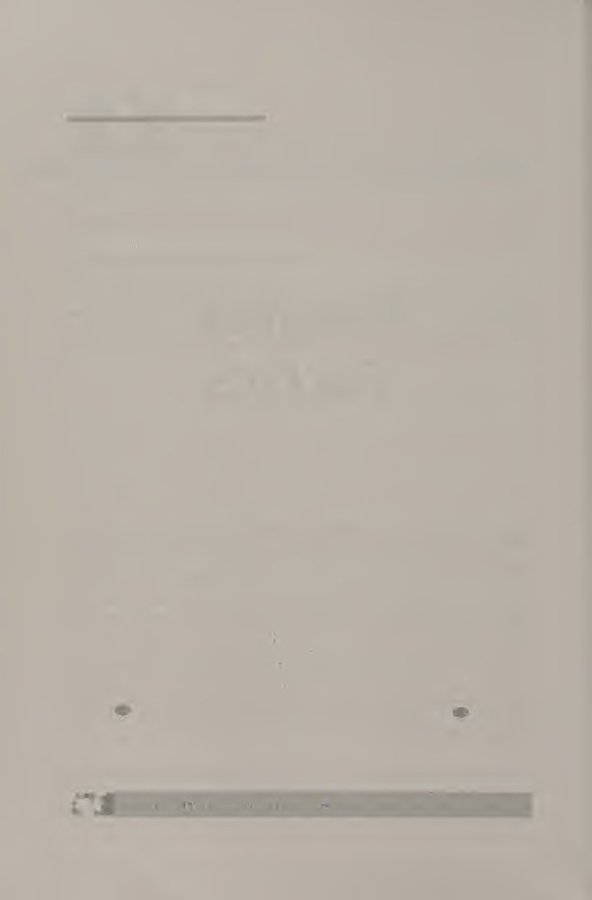
Một cú lốp bóng hiệu quả sẽ vô hiệu hóa một đòn tấn công hoặc khiến bạn rơi vào thế tấn công vào điểm. Khi bạn thực hiện một cú lốp bóng hiệu quả, bạn đã sẵn sàng tấn công bằng một cú đánh nền, một cú vô lê hoặc một cú đánh trên cao.
An effective lob should either neutralize an attack or put you on the offense in the point. Once you hit an effective lob, you are ready to attack with either a ground stroke, a volley, or an overhead. Forehand and Backhand Lobs
Các cú lốp thuận tay và trái tay Cũng như các cú đánh nền, cú lốp bóng bắt đầu với một vị trí sẵn sàng tốt và bước tách bóng đúng lúc. Đối với cú lốp bóng thuận tay (hình 6.1), hãy sử dụng cách cầm vợt phía đông. Xoay vai và đưa vợt về phía sau, dưới điểm tiếp xúc dự kiến. Hãy chắc chắn rằng đầu gối của bạn được uốn cong. Bước chân trái về phía trước (nếu bạn thuận tay phải) để chuyển trọng lượng về phía trước. Bàn chân của bạn phải rộng hơn vai. Điều này sẽ giúp bạn duy trì sự cân bằng.
As with ground strokes, the lob starts with a good ready position and a well-timed split step. For the forehand lob (figure 6.1), use the eastern grip. Turn your shoulders and take the racket back, below the anticipated point of contact. Make sure your knees are bent. Step forward with your left leg (if you are right-handed) to transfer your weight forward. Your feet should be more than shoulder-width apart. This will help you maintain balance. Forehand Lob
Lob thuận tay Tăng tốc đầu vợt về phía trước, đảm bảo rằng bạn duy trì mặt vợt hơi mở. Mặt vợt mở này tạo nên sự khác biệt giữa cú đánh nền và cú lốp bóng. Mặt vợt càng thoáng thì quỹ đạo của bóng càng cao. Tuy nhiên, nếu mặt vợt quá mở, bóng sẽ không di chuyển về phía trước được xa. Tiếp xúc bóng ở phía trước cơ thể, dưới mức thắt lưng. Kết thúc cú đánh bằng cách đi theo hướng về phía trước và cao.
Accelerate the racket head forward, making sure that you maintain a slightly open racket face. This open racket face makes the difference between a ground stroke and a lob. The more open the racket face, the higher the trajectory of the ball. However, if the racket face is too open, the ball will not travel forward very far. Contact the ball out in front of your body, below waist level. Finish the shot by following through forward and high.
Vai của bạn phải xoay sao cho cơ thể của bạn hướng về phía sân khi kết thúc cú đánh.
Your shoulders should have rotated so that your body is facing the court by the end of the shot.
Đối với cú lốp bóng trái tay (hình 6.2), hãy sử dụng cách cầm vợt lục địa. Bàn tay không thuận của bạn phải đặt ở cổ họng khi bạn kéo vợt về phía sau để thực hiện động tác vung vợt ra sau. Hãy chắc chắn rằng bạn giữ vợt ở mức thấp để có thể vung vợt từ thấp đến cao. Cú đánh trái tay bước về phía trước bằng chân phải (nếu bạn thuận tay phải). Giữ đầu gối của bạn cong và hai bàn chân của bạn rộng hơn vai. Khi bạn tăng tốc vợt về phía trước, hãy buông vợt bằng tay không thuận.
For the backhand lob (figure 6.2), use the continental grip. Your nondominant hand should be at the throat as you pull the racket back for the backswing. Make sure you keep the racket low so that you can swing from low to high. Backhand Lob step forward with your right leg (if you are right-handed). Keep your knees bent and your feet greater than shoulder-width apart. As you accelerate your racket forward, let go of the racket with your nondominant hand.
Nó sẽ ở phía sau bạn để bạn có thể giữ thăng bằng. Chuyển trọng lượng của bạn về phía trước. Tiếp xúc với quả bóng trước mặt bạn và dưới mức thắt lưng. Giống như cú lốp bóng thuận tay, điều quan trọng là phải tiếp xúc bóng với mặt vợt mở. Kết thúc cú đánh bằng cách đi theo hướng về phía trước và cao. Để duy trì khả năng kiểm soát, vai phải của bạn (nếu bạn thuận tay phải) phải hướng về phía bên kia của sân.
It should stay behind you so that you can maintain your balance. Transfer your weight forward. Contact the ball in front of you and below waist level. As with the forehand lob, it is important to contact the ball with an open racket face. Finish the shot by following through forward and high. To maintEiin control, your right shoulder (if you are right-handed) should be facing the other side of the court.
mote để lựa chọn và sử dụng: Lob Đặt xoáy xuống hoặc xoáy lên trên lốp bóng có thể hữu ích trong một số tình huống nhất định. Ví dụ: nếu đối thủ của bạn đang ở trên lưới, cú lốp bóng xoáy lên có thể hữu ích vì bóng sẽ bật ra khỏi đối thủ của bạn. Một cú lốp bóng xoáy xuống rất hữu ích trong một tình huống phòng thủ vì nó dễ dàng cho bạn đánh hơn một cú lốp bóng xoáy lên. Cú lốp xoáy xuống thường được đánh trong các tình huống phòng thủ. Cú đánh không mất nhiều thời gian để đánh.
More to choose and use: Lob Putting underspin or topspin on the lob can be useful in certain situations. For example, if your opponent is at the net, a topspin lob may be useful because the ball will bounce away from your opponent. An underspin lob is useful in a defensive situation because it is easier for you to hit than a topsin lob. Underspin Lob The underspin lob is usually hit in defensive situations. The stroke does not take a lot of time to hit.
Nó thường được đánh cao hơn và tiếp đất sâu hơn trong sân so với một cú lốp bóng xoáy lên. Đó là một cú đánh tốt trong những tình huống khẩn cấp mà bạn cần câu giờ cho mình để phục hồi lại vị trí hợp lý trên sân. Đối với cú lốp bóng xoáy xuống thuận tay (hình 6.3), hãy bắt đầu bằng cách cầm vợt hướng đông hoặc kiểu châu lục. Cách cầm kiểu lục địa sẽ cho phép mặt vợt thoáng hơn một chút. Từ bước tách bóng, hãy rút vợt về phía sau như trong cú lốp bóng thuận tay phẳng. Bàn chân của bạn có thể cách xa hơn so với khi thực hiện cú lốp thuận tay phẳng để giữ thăng bằng khi đánh những quả bóng thấp hơn.
It often is hit higher and lands deeper in the court than a topspin lob. It is a good shot to hit in emergency situations in which you need to buy yourself time to recover to a reasonable position in the court. For the forehand underspin lob (figure 6.3), start with either an eastern or a continental grip. The continental grip will allow for a slightly more open racket face. From the split step, take your racket back as in a flat forehand lob. Your feet may be farther apart than in a flat forehand lob in order to maintain balance while hitting balls that are lower.
Mặt vợt của bạn nên thoáng hơn một chút so với cú lốp bóng phẳng. Tạo độ xoáy dưới bằng cách miết nhẹ xuống mặt sau của quả bóng. Đi theo hướng cao của cú đánh. Đối với cú lốp bóng xoáy xuống trái tay (hình 6.4), hãy sử dụng cách cầm vợt kiểu lục địa, nó sẽ mở ra mặt vợt. Từ bước tách bóng, đưa vợt của bạn lùi lại một chút, ngang tầm vai, với mặt vợt mở. Bước vào bằng chân phải của bạn và tạo ra xoáy xuống bằng cách lướt nhẹ bên dưới quả bóng và đi theo hướng về phía đối diện của sân.
Your racket face should be slightly more open than for the flat lob. Generate underspin by slightly brushing down on the backside of the ball. Follow through high in the direction of the shot. For the backhand underspin lob (figure 6.4), use the continental grip, which will open up the racket face. From the split step, take your racket back slightly, to about shoulder level, with the racket face open. Step in with your right foot and generate underspin by slightly brushing underneath the ball and following through toward the opposite side of the court.
Nhiều lựa chọn và sử dụng hơn: Lob Lob xoáy lên. Lob xoáy lên giống một cú đánh tấn công hơn. Nó được sử dụng phổ biến nhất khi đối thủ của bạn ở trên lưới và bạn có thời gian để thực hiện một cú lốp bóng xoáy lên. Quỹ đạo của cú đánh thấp hơn một chút so với quỹ đạo của cú lốp bóng xoáy xuống. Nó cho phép bạn thực hiện một cú đánh đủ cao để ngoài tầm với của đối thủ nhưng bật ra khỏi sân một cách nhanh chóng. Đối với cú lốp bóng xoáy lên thuận tay (hình 6.5), hãy bắt đầu bằng cách cầm vợt hướng Đông hoặc nửa Tây.
More to choose and use: Lob Topspin Lob The topspin lob is more of an offensive shot. It is most commonly used when your opponent is at the net and you have time to execute a topspin lob. The trajectory of the shot is a bit lower than that of the underspin lob. It lets you hit a shot that is high enough to be out of your opponent’s reach but bounces off the court quickly. For the forehand topspin lob (figure 6.5), start with either an eastern or semi-western grip.
Kiểu cầm vợt bán tây sẽ cho phép tạo ra nhiều xoáy lên hơn. Từ bước tách bóng, xoay vai và đưa vợt về phía sau theo hình vòng cung sao cho vợt trở về ngang vai, sau đó thả vợt xuống bên dưới quả bóng. Việc tiếp xúc phải được thực hiện ở phía trước cơ thể và cao hơn một chút so với cú lốp bóng thuận tay. Khi tiếp xúc, quét lên mặt sau của quả bóng để tạo ra xoáy lên. Hãy theo đuổi chuyển động đi lên này. Đối với cú lốp bóng xoáy lên trái tay (hình 6.6), hãy sử dụng cách cầm vợt kiểu lục địa.
The semi-western grip will allow for more topspin. From the split step, turn your shoulders and take your racket back in a looping arc so that it goes back to about shoulder height, then drops down below the ball. Contact should be made in front of the body and slightly higher than for the flat forehand lob. At contact, brush up on the backside of the ball so that topspin is generated. Follow through in this upward movement. For the backhand topspin lob (figure 6.6), use a continental grip.
Thu vợt về phía sau như trong cú đánh nền trái tay xoáy lên. Để đánh một cú lốp bóng xoáy lên, hãy vuốt lên phía sau quả bóng. Đối với cú lốp bóng topspm trái tay bằng hai tay (hình 6.7), hãy sử dụng cách cầm vợt kiểu lục địa cho tay thuận của bạn và cách cầm vợt kiểu đông cho tay không thuận của bạn. Lấy vợt của bạn
Take the racket back as in a topspin backhand ground stroke. To hit a topspin lob, brush up on the back of the ball. For the two-handed backhand topspm lob (figure 6.7), use a continental grip for your dominant hand and an eastern grip for your nondominant hand. Take your racket
Nhiều lựa chọn hơn và sử dụng: Lob về phía sau như đối với cú trái tay xoáy lên bằng hai tay. Một lần nữa, quét lên mặt sau của quả bóng để tạo xoáy lên và tăng thêm độ cao cho cú đánh. Cú vô lê lốp bóng (hình 6.8) là một cú đánh rất thuận tiện để biết khi nào cả hai tay vợt đều ở trên lưới. Đó là một chiến thuật gây bất ngờ và không nên sử dụng quá thường xuyên. Đúng như tên gọi, đó là một cú vô lê (bóng được đánh trước khi nảy lên) đi qua đầu đối thủ. Nó đặc biệt hữu ích khi đà của đối thủ đang tiến về phía trước.
More to choose and use: Lob back as for the two-handed topspin backhand. Again, brush up on the backside of the ball to create topspin and add height to the shot. Lob Volley The lob volley (figure 6.8) is a very handy shot to know when both players are at the net. It is somewhat of a surprise tactic and should not be used too often. As the name implies, it is a volley (the ball is hit before it bounces) that goes over your opponent’s head. It is especially useful when your opponent’s momentum is moving forward.
Cú vô lê lốp được thực hiện giống như cú vô lê thông thường, ngoại trừ ở thời điểm cuối cùng, mặt vợt mở ra. Xoay lên trên và xuyên qua, từ đó nâng bóng qua đối thủ. Hãy chắc chắn rằng cú đánh đủ cao và có đủ động lượng về phía trước để đối thủ của bạn không thể đánh một cú đánh quá cao.
The lob volley is hit in the same way as a regular volley, except at the last moment, open the racket face. Swing upward and through, thereby lifting the ball over your opponent. Make sure the shot is high enough and has enough forward momentum so that your opponent cannot hit an overhead.
hồ nó ra tòa Chọn một quả bóng Như đã đề cập trước đó, quả lốp bóng rất hữu ích trong những tình huống nhất định hoặc trong việc tạo ra những tình huống nhất định. Phần sau đây giải thích những lý do có thể xảy ra nhất để sử dụng từng loại lốp bóng. Cú lốp bóng phẳng có thể được sử dụng vì nhiều lý do, cả tấn công và phòng thủ. Nó có thể được sử dụng để câu giờ để bạn có thể quay lại giữa sân khi bóng đang ở trên không. Nó có thể được sử dụng khi đối thủ của bạn ở trên lưới. Nó có thể được sử dụng đơn giản để thay đổi tốc độ hoặc nhịp điệu của điểm.
lake it to the court Picking a Lob As mentioned before, lobs are very useful in certain situations or in creating certain situations. The following explains the most likely reasons to use each kind of lob. The flat lob may be used for a variety of reasons, both offensive and defensive. It may be used to gain time so that you can recover to the middle of the court while the ball is in the air. It may be used when your opponent is at the net. It may be used simply to change the pace or rhythm of the point.
Nó có thể được sử dụng vì đối thủ của bạn không thích đánh những cú đánh chậm, nảy cao. Cú lốp bóng phẳng là một cú đánh hữu ích và linh hoạt nên có trong tiết mục của bạn. Nó có thể giao bóng nhiều mục đích và là một cú đánh có rủi ro tương đối thấp. Cú lốp bóng xoáy xuống được sử dụng chủ yếu trong các tình huống phòng thủ khi bạn không có nhiều thời gian để thực hiện cú đánh hoặc bạn không thể nhận được sự bảo vệ tốt từ vị trí của mình. Ví dụ, nếu đối thủ của bạn đang chạy từ bên này sang bên kia và bạn gần như không chạm tới được quả bảo vệ, hãy ném một cú lốp bóng xoáy xuống vào đó để bạn có thời gian phục hồi.
It may be used because your opponent does not like to hit slow, high bouncing shots. The flat lob is a useful, versatile shot to have in your repertoire. It can serve a lot of purposes and is a relatively low-risk shot to hit. The underspin lob is used mostly in defensive situations when you don’t have a lot of time to hit a shot or you cannot get good bailance from your position. For example, if your opponent is running you from side to side and you are barely reaching the baill, throw an underspin lob in there to give yourself time to recover.
Cú lốp bóng xoáy xuống là một cú đánh dễ dàng hơn nhiều so với cú lốp bóng xoáy lên và có thể giúp bạn thoát khỏi rất nhiều tình huống xấu! Cú lốp bóng xoáy lên chủ yếu được sử dụng như một cú đánh tấn công, mặc dù đôi khi nó được sử dụng đơn giản để thay đổi nhịp độ của một cú đánh bóng. Một cách sử dụng phổ biến của cú lốp bóng xoáy lên là khi đối thủ của bạn ở trên lưới và bạn có đủ thời gian để đánh một cú lốp bóng xoáy lên qua đầu họ. Nhờ xoáy lên, bạn có thể tạo cho quả bóng một quỹ đạo giật. Điều này có nghĩa là quả bóng phải nằm ngoài tầm với của đối thủ khi nó bật ra khỏi người đó.
The underspin lob is a much easier shot to hit than the topspin lob and can get you out of a lot of bad situations! The topspin lob is mostly used as an offensive shot, although sometimes it is used simply to change the pace of a rally. A common use of a topspin lob is when your opponent is at the net and you have enough time to hit a topspin lob over his or her head. Because of the topspin, you can give the ball a looping trajectory. This means that the ball should be just out of your opponent’s reach as it bounces away from him or her.
Như đã đề cập trước đó, một lý do khác để thực hiện cú lốp bóng xoáy lên là để thay đổi tốc độ của một cú đánh bóng. Vòng xoáy lên tạo thêm lực cho cú đánh sau khi bóng nảy lên. Đó là một chiến thuật tốt để sử dụng đối với những tay vợt không thích đánh bóng cao. Nó cũng đẩy đối thủ của bạn lùi lại phía sau đường cuối sân, khiến họ khó tấn công. Cú vô lê lốp bóng được sử dụng khi cả hai tay vợt đều ở trên lưới. Tình huống này thường xảy ra ở nội dung đánh đôi hơn là đánh đơn. Bóng phải đi thẳng qua đầu người cầm lưới hoặc hơi chếch về phía trái tay, khiến người đó chạy về phía đường cuối sân.
As previously mentioned, another reason to hit topspin lobs is to change the pace of a rally. The topspin gives the shot an extra kick after the bounce. It is a good tactic to use against players who do not like to hit high balls. It also pushes your opponent back behind the baseline, making it hard for him or her to attack. The lob volley is used when both players are at the net. This situation is more common in doubles than in singles. The ball should go directly over the net person’s head or slightly to the backhand side, sending him or her running toward the baseline.
Điều này thường tạo ra một tình huống tốt cho tay vợt hoặc đội thực hiện cú lốp bóng. Hãy thử KHOAN FEED Đây là một cuộc tập trận của đối tác. Bộ nạp nằm ngay bên trong đường dịch vụ ở một bên. Người đánh đứng ở vạch cuối sân (baseline) ở phía bên kia. các
This usually creates a good situation for the player or team that hit the lob volley. Give it a go FEED DRILL This is a partner drill. The feeder stands just inside the service line on one side. The hitter stands at the baseline on the other side. The
Hãy thử xem: Người đánh vô-lê bắt đầu bằng cách đưa bóng về phía thuận tay của người đánh. Người đánh một cú lốp thuận tay phẳng. Cú lốp bóng phải đi qua vạch giao bóng ở phía bên kia. Lặp lại 10 lần rồi đổi vai. Lặp lại sang phía trái tay, sau đó lặp lại cho các cú lốp bóng xoáy xuống và xoáy lên. LOB-LOB Đây là bài tập dành cho đối tác. Trong bài tập này, người chơi bắt đầu từ vạch cuối sân (baseline) ở phía đối diện của sân. Đánh các loại lốp khác nhau vào nhau, mỗi lần cố gắng vượt qua đường dây ở phía bên kia.
Give it a go: Lob feeder starts by feeding a ball to the hitter’s forehand side. The hitter hits a flat forehand lob. The lob should go past the service line on the other side. Repeat 10 times, then switch roles. Repeat to the backhand side, then repeat for underspin and topspin lobs. LOB-LOB This is a partner drill. In this drill, players start at the baselines on opposite sides of the court. Hit different types of lobs to each other, each time trying to get it past the seiwice line on the other side. LOB EVERYTHING
LOB MỌI THỨ Đây là bài tập dành cho đối tác. Người chơi bắt đầu ở vạch cuối sân (baseline) ở phía đối diện của sân. Một trong những người chơi có thể thực hiện bất kỳ kiểu đánh nào (bất kỳ tốc độ, độ xoáy và/hoặc độ cao nào). Người chơi khác phải luôn thực hiện cú lốp bóng. Làm điều này trong 10 phút, sau đó đổi vai. KHỎI Ở TRUNG TÂM Cần có ba người cho cuộc thi này. Một người chơi đứng ở mỗi vạch cuối sân (baseline) và người thứ ba đứng trong ô serwlce ở hai bên (hình 6,9). Người này là “con khỉ”. Người chơi ở bên kia sân từ con khỉ cần đánh những cú lốp bóng cao và đủ sâu để con khỉ không thể chạm vào.
This is a partner drill. Players start at the baselines on opposite sides of the court. One of the players can hit any type of shot (any pace, spin, and/or height). The other player must always hit lobs. Do this for 10 minutes, then switch roles. MONKEY IN THE MIDDLE Three people are needed for this driU. One player stands at each baseline and the third stands in the serwlce box on either side (flgure 6,9). This person is the “monkey. The player on the other side of the court from the monkey needs to hit lobs that are high and deep enough that the monkey cannot touch them.
Con khỉ không thể ra ngoài hộp dịch vụ. Người chơi cơ bản ở bên con khỉ đánh bất cứ thứ gì ngoại trừ lốp bóng để tránh làm con khỉ bị thương. Xoay các vị trí sau khi con khỉ chạm bóng ba lần để cả ba người chơi đều có thể chơi từng vị trí.
The monkey cannot go outside of the service box. The baseline player on the monkey’s side carmot hit anything but lobs in order to avoid hurting the monkey. Rotate positions after the monkey touches the ball three times so that all three players can play each position.
Hãy thử xem: TRÒ CHƠI lob LOB VOLLEY Tliis là một trò chơi đối tác. Các tay vợt bắt đầu ngay bên trong vạch giao bóng ở phía đối diện của sân và bắt đầu đánh vô-lê cho nhau. Sau ba cú vô lê, một trong hai đấu thủ được phép thực hiện cú vô lê bất cứ lúc nào. Chơi điểm ra. Trận đấu này sẽ cho bạn thấy điều gì có thể xảy ra khi thực hiện cú lốp bóng bổng trong tình huống này. Chơi đến bảy điểm (thắng hai). Set Point Cú lốp bóng là một cú đánh cực kỳ hữu ích trong trò chơi quần vợt của bạn.
Give it a go: Lob LOB VOLLEY GAME This is a partner game. Players start just inside the service lines on opposite sides of the court and start volleying to each other. After three volleys, either player is allowed to hit a lob volley at any time. Play the point out. This game should show you what can happen when the lob volley is hit in this situation. Play to seven points (win by two). Set Point The lob is an extremely useful shot to have in your tennis game.
Khi bạn tiến bộ hơn, bạn sẽ thấy rằng lốp bóng có thể giúp bạn sáng tạo và thoát khỏi một số tình huống nhất định. Sử dụng các cú lốp bóng tấn công, chẳng hạn như cú lốp bóng xoáy lên và cú lốp bóng bổng, để tạo tình huống cho chính bạn hoặc khiến đối thủ của bạn rời khỏi vị trí. Sử dụng các cú lốp bóng phòng thủ, chẳng hạn như cú lốp bóng xoáy xuống, để thoát khỏi các tình huống khẩn cấp, chẳng hạn như khi đối thủ của bạn đang chạy từ bên này sang bên kia hoặc nếu bạn mất thăng bằng. Khi bạn luyện tập các bài tập và trò chơi cũng như kỹ thuật của bạn được cải thiện, bạn sẽ thấy rằng việc sử dụng những cú đánh này và áp dụng các chiến thuật này trong trò chơi quần vợt của mình có thể khiến trò chơi trở nên thú vị hơn rất nhiều!
As you improve, you will find that lobs can help you create and get out of certain situations. Use offensive lobs, such as the topspin lob and the lob volley, to create situations for yourself or to get your opponent out of position. Use defensive lobs, such as the underspin lob, to get out of emergency situations, such as when your opponent is running you from side to side or if you are off balance. As you practice the drills and games and your technique improves, you will find that using these shots and applying these tactics in your tennis game can make it a lot of fun!
Một trong những cú đánh được sử dụng để chống lại cú lốp bóng là cú đập bóng từ trên cao, sẽ được thảo luận trong chương tiếp theo.
One of the shots used to counter the lob is the overhead smash, which is discussed in the next chapter.
Chương 7: Cơ chế va đập trên cao & theo dõi
Smash Cú đập trên cao là một trong những cú đánh thú vị và ngoạn mục nhất trong quần vợt. Nó thường được đánh vào lưới hoặc giữa sân bằng một cú lốp bóng. Cú đánh cho cú đánh tấn công này tương tự như cú giao bóng, với một vài ngoại lệ. Theo nghĩa cơ bản hơn, cú đập trên cao tương tự như chuyển động ném quá tay. Với kỹ thuật phù hợp, cú đập từ trên cao có thể là một vũ khí vô cùng hiệu quả trong trò chơi của bạn. Cú đập bóng từ trên cao là một cú đánh tấn công bằng một cú lốp bóng.
Overhead Smash
The overhead smash is one of the most fun and spectacular shots to hit in tennis. It is usually hit at the net or midcourt off a lob. The stroke for this offensive shot is similar to that of a serve, with a couple of exceptions. In a more basic sense, the overhead smash is similar to an overhand throwing motion. With the proper technique, the overhead smash can be a veiy effective weapon in your game. The overhead smash is an offensive shot hit off a lob.
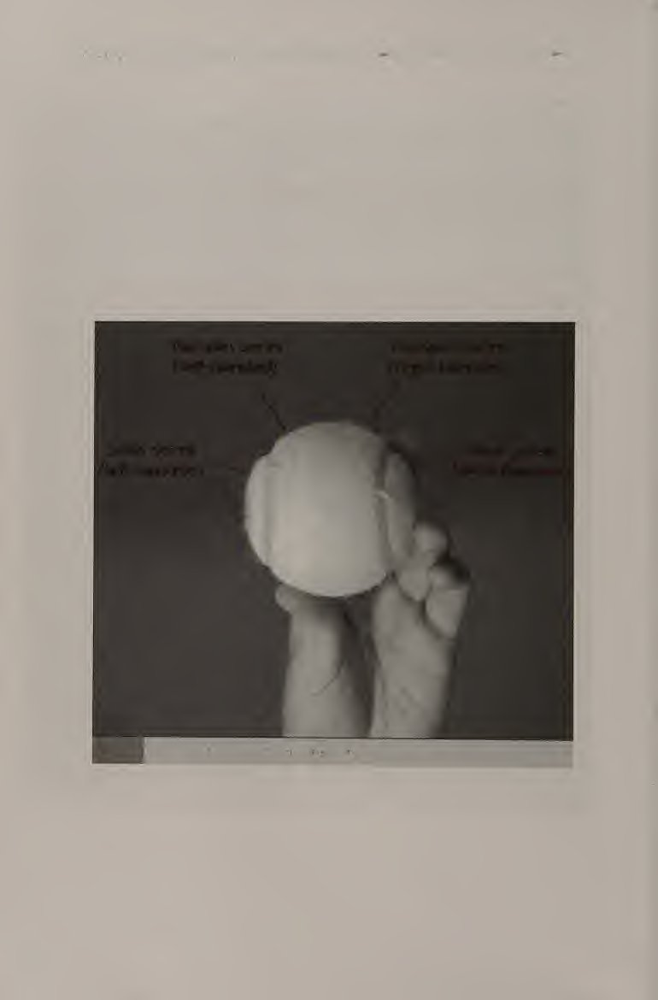
Thay vì để cú lốp nảy lên và đánh một cú đánh xuống đất hoặc một cú lốp khác khỏi nó, sẽ có lợi hơn nhiều nếu đưa nó lên không trung và đánh một cú từ trên cao xuống.
Instead of letting the lob bounce and hitting a ground stroke or another lob off it, it is much more beneficial to take it in the air and hit an overhead off it.
Thực hiện Xuất phát trên cao ở vị trí sẵn sàng cách lưới từ 8 đến 10 feet. Giữ vợt theo kiểu cầm vợt lục địa nếu bạn cảm thấy thoải mái với nó. Nếu không, hãy sử dụng cách cầm vợt giữa kiểu cầm vợt thuận tay phía Đông và kiểu cầm vợt kiểu lục địa, với mục tiêu di chuyển từ từ sang kiểu cầm vợt kiểu lục địa. Thực hiện bước tách đôi, sau đó xoay vai bằng cả hai tay lên (hình 7.1a). Cong khuỷu tay vào cánh tay cầm vợt. Thả chân phải về phía sau (nếu bạn thuận tay phải) để nghiêng về phía lưới.
Executing the Overhead Start in ready position 8 to 10 feet from the net. Hold the racket in a continental grip if you are comfortable with it. If not, use a grip between the eastern forehand grip and the continental grip, with the goal of slowly migrating to the continental grip. Execute a split step, then turn your shoulders with both arms up (figure 7.1a). Bend the elbow on the arm holding the racket. Drop your right foot back (if you are right-handed) so that you are sideways to the net.
Chuyển trọng lượng của bạn sang chân phải. Nghiêng phần thân trên về phía sau khi bạn xoay vai nhiều hơn một chút. Thả vợt ra sau lưng (hình 7.1b). Cánh tay trái của bạn phải thẳng và cao. Điều này giúp duy trì sự cân bằng và xoay vai của bạn. Tay trái của bạn có thể được sử dụng để theo dõi bóng. Hãy chắc chắn rằng bạn luôn ở phía sau quả bóng một chút. Sử dụng bước xáo trộn nếu bạn cần di chuyển về phía trước hoặc phía sau để đến phía sau quả bóng. Cong đầu gối của bạn để cơ thể bạn sẵn sàng tăng tốc.
Shift your weight to the right foot. Lean your upper body back as you turn your shoulders a bit more. Drop the racket behind your back (figure 7.1b). Your left arm should be straight and high. This helps maintain balance and turn your shoulders. Your left hand can be used to track the ball. Make sure that you are always slightly behind the ball. Use a shuffle step if you need to move forward or backward to get behind the ball. Bend your knees so that your body is prepared to accelerate up.
Khi bạn tăng tốc vợt về phía trước và lên cao để đánh bóng, hãy xoay phần thân trên của bạn theo hướng đánh. Cố gắng giữ khuỷu tay của cánh tay đánh cao. Tiếp xúc với bóng hơi xa về phía trước cơ thể và ở điểm cao nhất bạn có thể chạm tới (hình 7.1c). Cơ thể và cánh tay của bạn phải được mở rộng hoàn toàn và trọng lượng cơ thể của bạn phải dồn vào chân trái. Giữ cằm của bạn khi tiếp xúc. Nếu bạn cúi đầu xuống, toàn bộ cơ thể bạn sẽ hơi cúi xuống. Sau khi tiếp xúc, thực hiện tiếp bằng cách đưa vợt về phía bên trái cơ thể (hình 7.
As you accelerate the racket forward and high to strike the ball, turn your upper body in the direction of the shot. Try to keep the elbow of the hitting arm high. Contact the ball slightly tn front of your body and at the highest point you can reach (figure 7.1c). Your body and arm should be fully extended, and your body weight should be on the left foot. Keep your chin up at contact. If you put your head down, your whole body will go slightly down. After making contact, follow through by bringing the racket to the left side of your body (figure 7.1d).
Mã). Trọng lượng cơ thể của bạn sẽ dồn vào bàn chân trước. Một trong những điều quan trọng nhất cần nhớ khi thực hiện một cú đập từ trên cao là vung vợt đủ sớm để tiếp xúc được thực hiện ở điểm cao nhất có thể. Nếu bạn chờ đợi quá lâu và cố gắng đánh bóng khi nó ở quá thấp, cánh tay đánh bóng của bạn sẽ không được duỗi ra hoàn toàn khi tiếp xúc. Đây có lẽ là lỗi phổ biến nhất mà người chơi mắc phải khi học cách đánh bóng qua đầu.
Your body weight should end up on the front foot. One of the most important things to remember when hitting an overhead smash is to swing early enough that contact is made at the highest point possible. If you wait too long and try to hit the ball when it is too low, your hitting arm will not be fully extended at contact. This is probably the most common error made by players learning to hit the overhead. More to choose and use: Overhead Smash
Mote để lựa chọn và sử dụng: Cú đập trên cao Một vài khía cạnh của cú đập trên cao giúp phân biệt nó với cú giao bóng. (Xem chương 9 để biết thêm về cú giao bóng.) Đầu tiên, cú đập bóng qua đầu không phải là một cú tung bóng—nó là một cú đánh cao. Vì vậy, bạn phải điều chỉnh bằng chân để vào đúng vị trí để thực hiện cú đánh trên cao hiệu quả. Thứ hai, thời điểm bắt đầu của cú backswing là khác nhau. Cú giao bóng yêu cầu một cú xoay giống như con lắc - vợt đi xuống, rồi đi lên.
A couple of aspects of the overhead smash differentiate it from the serve. (See chapter 9 for more about the serve.) First, the overhead smash is not hit off a toss—it is hit off a high shot. Therefore, you must make adjustments with the feet in order to get into the correct position to hit an effective overhead. Second, the start of the backswing is different. The serve requires a pendulum-like swing—the racket goes down, then up.
Tuy nhiên, đối với một cú đánh từ trên cao, vợt ngay lập tức được đưa lên cạnh bên phải của phần trên cơ thể. Bạn có thể không có đủ thời gian để thực hiện một cú xoay người giống con lắc khi đánh một cú ném qua đầu, đặc biệt là khi đánh một cú lốp bóng có quỹ đạo thấp. Một khía cạnh quan trọng khác của cú đập trên cao là vị trí của người chơi khi đánh nó. Nếu có thể, hãy giữ cả hai chân trên mặt đất khi thực hiện cú đập từ trên cao. Vị trí này giúp giữ thăng bằng và giữ kỹ thuật sạch sẽ.
For an overhead, however, the racket is immediately brought up next to the right side of the upper body. You may not have enough time to execute a pendulum-like swing when hitting an overhead, especially against a lob with a low trajectory. Another important aspect of the overhead smash is the player’s position while hitting it. If at all possible, keep both feet on the ground when hitting an overhead smash. This position helps maintain balance and keeps technique clean.
Scissors Jump Overhead Smash Đôi khi người chơi nhảy lên không trung để đánh vào đầu. Kỹ thuật này, được gọi là cú nhảy qua đầu bằng kéo, được yêu cầu khi bóng ở phía sau người chơi một chút nhưng cần có một cú đánh trên cao. Động tác này mang tính đẩy hơn là nhảy. Cú nhảy kéo qua đầu (hình 7.2) được đánh quanh giữa sân với một cú lốp bóng tốt và sâu. Nó không phức tạp như người ta tưởng; đó là một chuyển động khá tự nhiên trong tình huống này. Bắt đầu ở vị trí sẵn sàng cách lưới từ 8 đến 10 feet, cầm vợt theo kiểu cầm vợt kiểu lục địa hoặc kiểu đông.
Scissors Jump Overhead Smash Sometimes players jump in the air to hit overheads. This technique, called the scissors jump overhead smash, is required when the ball is slightly behind the player but an overhead is needed. This move is more of a thrust than a jump. The scissors jump overhead smash (figure 7.2) is hit around midcourt off a good, deep lob. It is not as complicated as it sounds; it is a fairly natural motion in this situation. Start in ready position 8 to 10 feet behind the net, holding the racket with a continental or eastern grip.
Sau khi thực hiện bước tách đôi, hãy xoay vai. Cả hai cánh tay phải giơ cao. Cong khuỷu tay của cánh tay vợt của bạn. Thả chân phải của bạn ra sau (nếu bạn thuận tay phải) xa hơn so với động tác đập đầu thông thường. Trọng lượng cơ thể của bạn phải dồn vào chân phải. Khi bạn thả vợt ra sau lưng, hãy đẩy chân phải của bạn ra. Khi bạn thực hiện động tác này, chân trái của bạn cũng sẽ nhấc lên khỏi mặt đất. Chân của bạn sẽ thực hiện động tác kéo trong không trung một cách tự nhiên để giữ thăng bằng.
After executing a split step, turn your shoulders. Both arms should be raised high. Bend the elbow of your racket arm. Drop your right foot back (if you are right-handed) farther than you would for a regular overhead smash. Your body weight should be on your right foot. As you drop your racket behind your back, thrust off your right leg. When you perform this motion, your left leg will come off the ground as well. Your legs will naturally execute the scissors movement in the air in order to maintain balance.
Chân phải của bạn sẽ ở phía trước, trong khi chân trái sẽ ở phía sau bạn. Tăng tốc vợt về phía trước, về phía bóng. Tiếp xúc một chút ở phía trước hoặc phía trên đầu của bạn. Đảm bảo rằng cơ thể và cánh tay vợt của bạn duỗi thẳng hoàn toàn tại điểm tiếp xúc. Xoay cơ thể của bạn về phía cú đánh. Phần thân trên của bạn sẽ hơi ngả về phía sau do lực đẩy hướng lên trong khi lùi về phía sau. Sau khi tiếp xúc, hãy đi theo hướng bên trái và tiếp đất bằng chân trái.
Your right leg will end up in front, while the left leg will end up behind you. Accelerate the racket forward, toward the ball. Make contact slightly in front of or above your head. Make sure that your body and racket arm are at full extension at the point of contact. Turn your body toward the shot. Your upper body will lean back slightly due to the thrust upward while going backward. After making contact, follow through to your left side and land on your left foot.
Để giữ thăng bằng, chân phải của bạn sẽ cao và hướng về phía trước. Phần thân trên của bạn sẽ hơi hướng về phía trước khi bạn hồi phục sau động tác tiếp theo.
To maintain balance, your right leg will be high and pointing forward. Your upper body will lecin forward slightly as you recover from the follow-through.
Nhiều lựa chọn và sử dụng hơn: Cú đập qua đầu Giống như cú đập qua đầu thông thường, không sử dụng động tác vung vợt sau giống như con lắc. Bạn thậm chí còn có ít thời gian hơn để chuẩn bị cho cú đập kéo nhảy qua đầu! Cú đập bóng trái tay qua đầu (Hình 7.3) là một trong những cú đánh thể thao nhất trong quần vợt. Bất cứ khi nào có thể, bạn nên cố gắng thực hiện cú đập bóng qua đầu ở phía thuận tay, nhưng trong một số tình huống, bạn có thể không thể chạy vòng quanh cú lốp bóng.
More to choose and use: Overhead Smash As with the regular overhead smash, do not use a pendulum-like backswing. You have even less time to prepare to hit the scissors jump overhead smash! Backhand Overhead Smash The backhand overhead smash (figure 7.3) is one of the most athletic shots in tennis. Whenever possible, you should try to hit the overhead smash on the forehand side, but in some situations it might not be possible to run around the lob.
Trong những tình huống này, hãy đánh cú đập trái tay qua đầu. Đứng cách lưới 8 đến 10 feet. Bắt đầu ở tư thế sẵn sàng, cầm vợt bằng tay cầm lục địa. Sau khi bạn thực hiện bước tách bóng và nhận ra rằng bạn sẽ không thể thực hiện cú đập gm qua đầu ở phía thuận tay, hãy xoay vai của bạn như thể đưa mặt sau của cú đóng của bạn cho đối thủ. Bước 1 bước khá lớn để thả chân trái về sau (nếu bạn thuận tay phải) sao cho toàn bộ cơ thể không bị xoay.
In these situations, hit the backhand overhead smash. Stand 8 to 10 feet from the net. Start in the ready position, holding the racket with the continental grip. After you execute the split step and realize that you are not going to be able to hit gm overhead smash on the forehand side, turn your shoulders as if showing the back of your shut to your opponent. Use a fairly big step to drop your left foot back (if you are right-handed) so that your whole body is not turned.
Vai phải xoay nhiều hơn chân sao cho hai chân ít nhiều nghiêng về phía đối phương, chân phải đặt sau chân trái.
The shoulders should be turned more than the legs so that the legs are more or less sideways to the opponent, with the right leg behind the left leg.
Nhiều lựa chọn và sử dụng hơn: Cú đập từ trên cao Khuỷu tay đánh phải cao đến mức vợt hướng xuống. Giữ tay trái của bạn trên cổ vợt khi bạn thu vợt lại. Phần thân trên của bạn phải hơi ngả về phía sau khi vai đánh của bạn nâng lên. Toàn bộ trọng lượng của bạn phải dồn vào chân trái. Khi bạn tăng tốc vợt về phía trước, hãy đẩy chân trái ra. Khi tiếp xúc, cơ thể và cánh tay đánh của bạn phải ở trạng thái duỗi hoàn toàn. Tiếp xúc bóng hơi ở phía trước cơ thể bạn.
More to choose and use: Overhead Smash The hitting elbow should be so high that the racket points down. Keep your left hand on the throat of the racket as you take it back. Your upper body should be leaning back slightly as your hitting shoulder rises. All of your weight should be on the left foot. As you accelerate the racket forward, thrust off the left leg. At contact, your body and hitting arm should be at full extension. Contact the ball slightly in front of your body.
Tại thời điểm này, gần như toàn bộ lưng của bạn phải hướng về phía lưới để phát huy tối đa hiệu quả của cánh tay. Tiếp tục vung vợt qua điểm tiếp xúc về phía cú đánh của bạn. Tiếp đất bằng chân trái. Sử dụng cánh tay trái và chân phải để giữ thăng bằng. Bạn có thể tiếp đất bằng chân phải nếu toàn bộ lưng của bạn quay về phía lưới khi tiếp xúc.
At this point, almost your entire back should be toward the net in order to maximize the efficiency of your arm. Continue to swing the racket through the contact point toward your shot. Land on your left foot. Use your left arm and right leg to maintain balance. You can land on your right foot if your whole back was turned toward the net at contact.
Nhiều lựa chọn và sử dụng hơn: Cú đập trên cao * 7.4b Cú đập trên cao sau khi nảy. Kiểu đập trên cao này được đánh theo cách tương tự như cú đập trên cao thông thường ngoại trừ việc bạn để bóng nảy lên trước khi đánh nó (hình 7.4). Nó thường được thực hiện với một cú lốp bóng rất cao. Mấu chốt của cú đập bóng từ trên cao này là chuẩn bị sớm và sử dụng động tác chân nhanh để bạn có thể ở ngay phía sau quả bóng, chỉ chờ ăn nó! Đầu tiên, hãy để bóng nảy lên và chuẩn bị vợt của bạn như cách bạn thực hiện một cú đánh trên cao thông thường.
More to choose and use: Overhead Smash 7.4b Overhead Smash After a Bounce This type of overhead smash is hit in the same way as a regular overhead smash except that you let the ball bounce before hitting it (figure 7.4). It is usually hit off a very high lob. The key to this overhead smash is getting prepared early and using quick footwork so that you can be right behind the ball, just waiting to eat it up! First, let the ball bounce and prepare your racket as you would for a regular overhead.
Hãy đảm bảo có nhiều khoảng trống để khi bóng đạt đến độ cao thích hợp, bạn sẽ có đủ chỗ để thực hiện một cú xoay hoàn toàn. Khi bóng ở độ cao mà vợt của bạn có thể chạm tới, hãy thực hiện một cú đập từ trên cao. Cú đập trên cao sau khi bật lên Đánh cú đập trên cao. Hãy để quả bóng nảy lên và chuẩn bị vợt của bạn.
Make sure there is plenty of space so that as the ball reaches the appropriate height there is enough room for you to take a full swing. When the ball is as high as your racket can reach, execute an overhead smash. Overhead Smash After a Bounce Hit the overhead smash. Let the ball bounce and prepare your racket.
Đưa nó ra tòa Chọn một cú đập trên cao Các tình huống khác nhau đòi hỏi các loại chi phí khác nhau. Điều quan trọng là bạn phải nhận ra từng tình huống để có thể lựa chọn chi phí chung phù hợp. Sự lựa chọn cú đánh trên cao của bạn có thể phụ thuộc vào kiểu lốp bóng của đối thủ, vị trí của bạn trên sân, vị trí của đối thủ trên sân hoặc thậm chí các điều kiện thời tiết, chẳng hạn như gió hoặc nắng. Khi thực hiện một cú đập bóng từ trên cao thông thường, điều quan trọng là phải xem xét bạn đang ở đâu trên sân và đối thủ của bạn sẽ thực hiện cú lốp bóng nào.
Take it to the court Selecting an Overhead Smash Different situations call for different types of overheads. It is important for you to recognize each situation so that you can choose the appropriate overhead. Your choice of overhead may depend on the type of lob your opponent hits, your position on the court, your opponent’s position on the court, or even the weather conditions, such as wind or sun. When executing a regular overhead smash, it is important to consider where you are on the court and what type of lob your opponent hit.
Bạn nên chơi tấn công hay phòng thủ? Nếu bạn ở gần lưới và đối thủ của bạn thực hiện một cú lốp bóng nông, bạn nên thực hiện một cú đập bóng mạnh hơn, với tốc độ và góc tốt. Nếu bạn thấy mình đang ở giữa sân hoặc sâu hơn, bạn có thể muốn đánh một cú đập từ trên cao đi ngược về phía đối thủ khá sâu và không quá nhanh. Điều này sẽ cho bạn thời gian để hồi phục và tiến gần hơn đến lưới, có thể tìm kiếm một đòn tấn công ở cú đánh tiếp theo. Sử dụng cú nhảy kéo để đập qua đầu khi quỹ đạo cú lốp bóng của đối thủ khiến bạn không thể tiếp xúc mà không rời khỏi mặt đất.
Should you play offensively or defensively? If you are close to the net and your opponent hits a shallow lob, you should hit a more aggressive overhead smash, one with good pace and angle. If you find yourself at midcourt or deeper, you might want to hit an overhead smash that goes back to your opponent fairly deep and not so fast. This will give you time to recover and get closer to the net, maybe looking for an attack on the next shot. Use the scissors jump overhead smash when the trajectory of the lob your opponent hit prevents you from making contact without leaving the ground.
Vì phải mất nhiều thời gian hơn để hồi phục sau một cú nhảy đập so với một cú đập thông thường, nên hãy xoay một chút trong cú đánh để bạn có thêm thời gian. Thực hiện cú đập bóng trái tay qua đầu khi đối thủ của bạn thực hiện cú lốp bóng về phía trái tay của bạn và bạn không có đủ thời gian để né nó. Hãy tiếp tục và đánh đầu trong tình huống này; để bóng nảy lên có thể tạo ra tình huống khó khăn hơn. Nếu bạn thực hiện cú đánh trái tay trên cao, bạn sẽ khiến đối thủ khó phục hồi vị trí tốt hơn.
Because it takes a bit longer to recover from a jump smash than a regular smash, put a bit of spin on the shot to give yourself more time. Execute the backhand overhead smash when your opponent hits the lob to your backhand side and you do not have enough time to mn around it. Go ahead and hit the overhead in this situation; letting the ball bounce may create a more difficult situation. If you hit the backhand overhead shot, you make it more difficult for your opponent to recover to a good position.
Đôi khi tốt nhất là để cú lốp bóng nảy lên trước khi thực hiện cú đập qua đầu. Cú đánh này có thể được sử dụng trong một số tình huống. Hãy sử dụng nó khi đối thủ của bạn tung ra một cú lốp bóng cực cao. Vì nó quá cao nên bạn sẽ khó phán đoán được vị trí của nó và nó sẽ rơi rất nhanh. Trong trường hợp này, sẽ ít rủi ro hơn nếu bạn để nó nảy lên mặc dù điều này sẽ giúp đối thủ có thời gian chuẩn bị. Một tình huống khác để bóng nảy là khi có gió.
Sometimes it is best to let the lob bounce before hitting the overhead smash. This shot can be used in several situations. Use it when your opponent hits an extremely high lob. Because it is so high, it will be difficult for you to judge its position and it will fall fast. In this case, it is less risky for you to let it bounce even though this will give your opponent time to set up. Another situation in which to let the lob bounce is when conditions are windy.
Gió khiến việc đánh giá thùy trở nên khó khăn. Bạn cũng có thể muốn để tóc bồng bềnh nếu bạn hướng mặt về phía mặt trời.
Wind makes it difficult to judge lobs. You might also want to let the lob bounce if you are facing the sun.
Cố gắng lên bóng Đây là bài tập của đối tác. Một người chơi là người cho ăn, người còn lại là người bắt bóng. Bộ nạp đứng ở vạch cuối sân (baseline). Người bắt bóng bắt đầu cách lưới khoảng 10 feet. Khi người bắt bóng chạy lên lưới và dùng vợt của mình chạm vào lưới, người bắt bóng sẽ thực hiện một cú lốp bóng. Người bắt bóng sử dụng các bước xáo trộn để vào đúng vị trí trên cao và bắt bóng bằng tay không thuận (hình 7.5). Lặp lại 10 lần rồi đổi vai.
Give it a go CATCH THE FLY BALL This is a partner drill. One player is the feeder, the other is the catcher. The feeder stands at the baseline. The catcher starts about 10 feet from the net. When the catcher runs up to the net and taps the net with his or her racket, the feeder hits a lob. The catcher uses shuffle steps to get into the correct overhead position and catches the ball with his or her nondominant hand (figure 7.5). Repeat 10 times, then switch roles.
HIT THE FLY BALL Bài tập đối tác này tương tự như bài tập Catch the Fly Ball. Một người chơi là người cho ăn, người còn lại là người bắt bóng. Bộ nạp đứng ở vạch cuối sân (baseline). Người bắt bóng bắt đầu cách lưới khoảng 10 feet. Khi người bắt bóng chạy lên lưới và dùng vợt của mình chạm vào lưới, người bắt bóng sẽ thực hiện một cú lốp bóng. Người bắt bóng sử dụng các bước xáo trộn để vào đúng vị trí trên cao và thực hiện một cú đập bóng từ trên cao (hình 7.6). Lặp lại 10 lần rồi đổi vai.
HIT THE FLY BALL This partner drill is similar to the Catch the Fly Ball drill. One player is the feeder, the other is the catcher. The feeder stands at the baseline. The catcher starts about 10 feet from the net. When the catcher runs up to the net and taps the net with his or her racket, the feeder hits a lob. The catcher uses shuffle steps to get into the correct overhead position and hits an overhead smash off the lob (figure 7.6). Repeat 10 times, then switch roles.
Hãy thử đi; Overhead Smash THE T DRILL Bài tập đối tác này mở rộng các bài học đã học trong bài tập Hit the Fly Ball. Nó bắt đầu theo cách tương tự: người đánh chạy tới lưới và chạm vào lưới. Người trung chuyển đánh một cú lốp bóng. Người đánh thực hiện một cú đập trên cao. Sau khi thực hiện cú đập trên cao, người đưa bóng đánh thêm hai quả bóng nữa, một quả về phía thuận tay của người đánh và quả tiếp theo về phía trái tay của người đánh (hình 7.7). Người đánh bóng thực hiện cú vô lê. Lặp lại 4 lần tổng cộng 12 lần, sau đó đổi vai.
Give it a go; Overhead Smash THE T DRILL This partner drill expands on the lessons learned in the Hit the Fly Ball drill. It starts the same way: the hitter runs to the net and taps it. The feeder hits a lob. The hitter executes an overhead smash. After the overhead smash is hit, the feeder hits two more balls, one to the hitter’s forehand side and the next to the hitter’s backhand side (figure 7.7). The hitter hits volleys off the feeds. Repeat 4 times for a total of 12 shots, then switch roles. Make sure you split step on the volleys.
Hãy chắc chắn rằng bạn đã tách bước khi thực hiện cú vô lê. Mũi khoan T. KIỂM SOÁT LOB VÀ TRÊN ĐẦU Trong bài tập này, việc kiểm soát được thực hiện trên cả cú lốp bóng và cú đánh trên cao. Các đấu thủ xuất phát ở hai phía đối diện của sân (hình 7.8). Người chơi đánh lốp (người lốp bóng) bắt đầu ở đường cuối sân; người chơi đánh những cú đập từ trên cao (người đập bóng) bắt đầu vào lưới. Người lốp bóng đánh một cú lốp bóng vào người đập bóng. Người đập bóng vào đúng vị trí và đánh một cú đập trên cao. Người lốp bóng cố gắng trả lại mỗi cú đập bóng trên cao bằng một cú lốp bóng khác.
The T drill. LOB AND OVERHEAD CONTROL In this partner drill, control is practiced on both the lob and the overhead. Players start on opposite sides of the court (figure 7.8). The player hitting lobs (the lobber) starts at the baseline; the player hitting overhead smashes (the smasher) starts at the net. The lobber hits a lob to the smasher. The smasher gets into correct position and hits an overhead smash. The lobber tries to return each overhead smash with another lob. Both players try to keep the ball in play, not hitting anything too hard or too fast.
Cả hai đấu thủ đều phải giữ bóng trong cuộc, không đánh vật gì quá mạnh hoặc quá nhanh. Người đập bóng nên cố gắng vào đúng vị trí và chuẩn bị sớm để có thể kiểm soát được cú xoay. Người lốp bóng phải thực hiện chính xác các bước tách bóng để vào đúng vị trí thực hiện cú lốp bóng tiếp theo. Đánh tám phát liên tiếp rồi đổi vai.
The smasher should work on getting in the correct position and being prepared early so that the swing can be controlled. The lobber should work on correctly executing split steps to get into the right position to hit the next lob. Hit eight consecutive shots, then switch roles. Give it a go: Overhead Smash TWO-ONTHREE
Hãy thử xem: Cú đập trên cao HAI LẦN BA Trong trò chơi có nhịp độ nhanh này, tất cả người chơi đều sử dụng các cú đánh trên mặt đất, cú vô lê, lốp bóng và cú đập từ trên cao. Ba người chơi dàn trải dọc theo đường cuối sân; hai đấu thủ còn lại đứng trên lưới phía bên kia sân (hình 7.9). Điểm bắt đầu khi một trong những người chơi ở cuối đường thực hiện cú lốp bóng. Một trong những người chơi trên lưới trả lại cú lốp bóng bằng cách đánh một cú đánh trên cao. Sau cú đánh từ trên cao này, người chơi có thể sử dụng bất kỳ kiểu bắn nào.
In this fast-paced game, ground strokes, volleys, lobs, and overhead smashes are used by all the players. Three players spread out along the baseline; the other two players stand at the net on the other side of the court (figure 7.9). The point starts when one of the baseline players drop-hits a lob. One of the net players returns the lob by hitting an overhead. After this overhead shot, players can use any type of shot.
Người chơi không cần phải giữ nguyên vị trí ban đầu. Nếu bên có hai người chơi thua điểm, một trong những người chơi đó sẽ được thay thế bằng một trong những người chơi ở cuối sân. Nếu bên có ba người chơi thua điểm thì cả ba người phải thực hiện 10 lần chống đẩy hoặc 10 lần gập bụng. Mục tiêu của trò chơi là ở bên lưới (phía có hai người chơi) và lấy lại sức lực. Chơi 10 phút rồi nghỉ ngơi.
Players do not have to stay in their original positions. If the side with two players loses the point, one of those players is replaced by one of the baseline players. If the side with three players loses the point, all three must do either 10 push-ups or 10 crunches. The object of the game is to stay on the net side (the side with two players) and get fit. Play for 10 minutes and take a rest.
Set Point Cú đập trên cao hoàn toàn là về sự tự tin. Nếu bạn biết mình sẽ đánh tốt khi thực hiện cú đánh, rất có thể bạn sẽ làm được. Nếu bạn nghi ngờ bản thân trước mỗi lần chi phí, có thể bạn sẽ không làm tốt được. Luyện tập là điều duy nhất mang lại cho bạn sự tự tin cần thiết để làm tốt. Từ cú đập trên cao mạnh mẽ và mạnh mẽ, chúng ta chuyển sang cú đánh lén và nhẹ nhàng trong chương tiếp theo.
Set Point The overhead smash is all about confidence. If you know you will hit it well going into the shot, you most likely will. If you doubt yourself before each overhead, you probably will not do as well. Practice is the only thing that will give you the confidence you need to do well. From the mighty and powerful overhead smash, we go to the sneaky and soft drop shot in the next chapter.
Chương 8: Cú bỏ nhỏ (drop shot) & chạm bóng xoáy xuống
CHƯƠNG Cú bắn thả là một vũ khí lợi hại khi được thực hiện đúng cách và đúng thời điểm. Khi đối thủ của bạn ít mong đợi nhất hoặc khi họ phải chạy một khoảng cách xa để tiếp cận nó, đó là lúc bạn nên sử dụng cú đánh thả bóng. Một cú thả bóng được thực hiện nhẹ nhàng với xoáy xuống trong khi người chơi ở càng gần lưới càng tốt. Mục đích chính của nó là khiến đối thủ của bạn mất cảnh giác, đặc biệt là khi họ chưa sẵn sàng tiến vào sân. Một mục đích khác của cú thả bóng là kéo đối thủ lên lưới.
Drop Shot
The drop shot is a big weapon when executed correctly and at the right time. When your opponent is least expecting it or when he or she would have to run a good distance to reach it, that is the time to use the drop shot. A drop shot is softly hit with underspin while the player is as close to the net as possible. Its main purpose is to catch your opponent off guard, especially when he or she is not ready to move forward into the court. Another purpose for the drop shot is to draw your opponent up to the net.
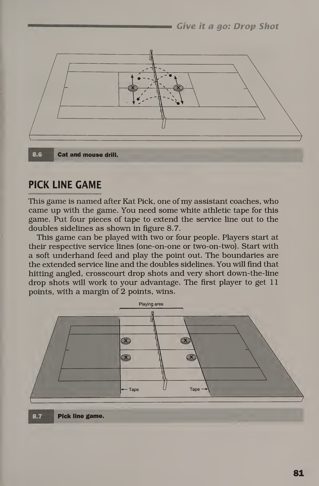
Toàn bộ tác dụng của cú thả bóng lên bóng là nó làm bóng chậm lại đáng kể. Với tư cách là người thực hiện cú đánh thả bóng, công việc của bạn là hấp thụ nhiều động lượng và đánh trả nó bằng xoáy xuống. Do đó, cú đánh tới càng nhanh thì càng khó thực hiện cú bỏ nhỏ (drop shot) của nó. Một ví dụ tương tự với cú ném phạt là cú ném phạt trong bóng rổ. Một tay vợt bóng rổ sử dụng cách chạm và vòng cung khi thực hiện quả ném phạt. Những điều tương tự cũng quan trọng khi đánh một cú thả bóng.
The whole effect of a drop shot on the ball is that it slows down the ball considerably. As the executor of the drop shot, your job is to absorb a lot of the momentum and send it back with underspin. Therefore, the faster the oncoming shot is, the more difficult it will be to hit a drop shot off it. A good analogy to the drop shot is the free throw in basketball. A basketball player uses touch and arc when shooting a free throw. The same things are Important when hitting a drop shot.
Trên thực tế, khi thực hiện cú đánh thả bóng, có thể hữu ích khi tưởng tượng một vòng rổbcdl ở phía bên kia của lưới.
In fact, when hitting a drop shot, it may help to imagine a basketbcdl hoop on the other side of the net.
Các cú đánh thả thuận tay và trái tay Chúng ta bắt đầu với cú đánh thả thuận tay (hình 8.1). Đứng xung quanh vạch giao bóng khi thực hành thả bóng và bắt đầu ở tư thế sẵn sàng. Cầm vợt theo kiểu cầm vợt thuận tay kiểu đông hoặc kiểu cầm kiểu lục địa. Xoay vai của bạn như thể để thực hiện một cú đánh thuận tay, nhưng thực hiện động tác vung vợt sau ngắn và cao. Bước vào bằng chân trái (nếu bạn thuận tay phải) và đảm bảo hai chân của bạn rộng hơn vai để giữ thăng bằng tốt.
Forehand and Backhand Drop Shots We begin with the forehand drop shot (figure 8.1). Stand around the serviee line when practicing drop shots and start in the ready position. Hold the racket in an eastern forehand or continental grip. Turn your shoulders as if to hit a forehand ground stroke, but make the backswing short and high. Step in with the left foot (if you are right-handed) and make sure your feet are more than shoulder-width apart to maintain good balance. Bend your knees.
Cong đầu gối của bạn. Toàn bộ cơ thể của bạn phải sẵn sàng để tiếp nhận sự tiếp xúc! Trước khi tiếp xúc, tay vợt phải hơi cong và mặt vợt hơi mở. Tiếp xúc một chút ở phía trước và bên cạnh cơ thể bạn. Khi tiếp xúc, đánh bóng nhẹ xuống và về phía trước, gần như để dừng bóng. Thực hiện theo hướng hơi hướng lên trên, như thể để đưa bóng trở lại lưới. Điều này giúp tạo xoáy xuống cho quả bóng. Cú đánh thuận tay 8.1a 8.1b Giảm tiếp xúc.
Your whole body should be poised to absorb contact! Before contact, the racket arm should be slightly bent and the racket face should be slightly open. Make contact slightly in front of and to the side of your body. At contact, hit the ball slightly downward and forward, almost as if to stop the ball. Follow through slightly upward, as if to dish the ball back over the net. This helps put underspin on the ball. Forehand Drop Shot 8.1a 8.1b Absorb the contact.
Hãy theo dõi tiếp.
Follow through.
Đối với cú đánh thả trái tay (hình 8.2), hãy cầm vợt theo kiểu cầm lục địa. Khi thực hiện backswing, sử dụng tay trái của bạn (nếu bạn thuận tay phải) để giữ cổ vợt để kiểm soát. Một lần nữa, cú backswing phải ngắn và cao. Một cú vung vợt về phía sau ngắn sẽ ngăn vợt tạo ra quá nhiều động lượng. Đầu gối của bạn nên được uốn cong. Bước chân phải về phía trước (nếu bạn thuận tay phải) và thả vợt bằng tay trái khi bạn vung vợt về phía trước.
For the backhand drop shot (figure 8.2), hold the racket in a continental grip. On the backswing, use your left hand (if you are righthanded) to hold the throat of the racket for control. Again, the backswing should be short and high. A short backswing prevents the racket from building too much momentum. Your knees should be bent. Step forward with the right foot (if you are right-handed) amd release the racket with your left hand as you swing forward.
Toàn bộ cơ thể của bạn phải sẵn sàng hấp thụ tác động của quả bóng. Tay vợt phải thẳng. Tiếp xúc một chút ở phía trước và bên cạnh cơ thể bạn. Đầu vợt phải mở để bạn có thể tạo xoáy xuống cho quả bóng. Thực hiện theo hướng đánh bóng, giữ mặt vợt mở. Điều quan trọng nhất cần nhớ ở cả cú đánh thuận tay và trái tay của bạn là theo dõi, nhưng cố gắng không theo dõi quá nhanh nếu không tốc độ đầu vợt của bạn sẽ quá nhanh.
Your whole body should be ready to absorb the impact of the ball. The racket arm should be straight. Make contact slightly in front of and to the side of your body. The racket head should be open so that you can put underspin on the ball. Follow through toward the shot, keeping an open racket face. The most important thing to remember on both your forehand and backhand drop shots is to follow through, but try not to follow through too fast or else your racket head speed will be too fast.
Điều này sẽ dẫn đến việc đưa bóng trở lại nhanh hơn bạn dự định. Cú đánh thả trái tay
This will result in sending the ball back faster than you intended. Backhand Drop Shot
Nhiều lựa chọn và sử dụng hơn: Cú đánh thả Khi thực hiện cú đánh thả, bạn có hai lựa chọn: chéo sân hoặc dọc biên. Cú sút chéo sân là một cú đánh dài hơn nhiều để đánh trúng một cú sút dọc biên. Một điều quan trọng khác cần ghi nhớ là chiều cao của lưới. Khi đánh những cú đánh chéo sân, bạn sẽ đi qua phần thấp nhất của lưới. Khi thực hiện cú bỏ nhỏ (drop shot) từ đường biên xuống, bạn sẽ đi qua phần cao nhất của lưới. Cú vô lê thả bóng (hình 8.3) là một cú vô lê được thực hiện dưới dạng cú bỏ nhỏ (drop shot).
More to choose and use: Drop Shot When directing the drop shot, you have two choices: crosscourt or down the line. The crosscourt drop shot is a much longer shot to hit thain a down-the-line drop shot. Another important thing to keep in mind is the height of the net. When hitting crosscourt shots, you will go over the lowest part of the net. When hitting a down-the-line drop shot, you will be going over the highest part of the net. Drop Volley The drop volley (figure 8.3) is a volley that is hit as a drop shot.
Thông thường, một cú vô lê rơi sẽ được thực hiện bằng một cú đánh tới tương đối thấp; những cú đánh cao nên được thực hiện bằng một cú vô lê dứt điểm. Ý tưởng cho cú vô lê thả bóng cũng giống như cú đánh thả bóng thông thường. Một cú vô lê có thể khó đánh hơn một chút vì bóng chưa nảy lên, do đó bóng có thể di chuyển tương đối nhanh. Kỹ thuật thực hiện cú vô lê ít nhiều giống với kỹ thuật thực hiện cú thả bóng. Sự khác biệt duy nhất là bạn có thể phải hạ thấp hơn (uốn cong đầu gối nhiều hơn và dang rộng hai chân để giữ thăng bằng tốt) và bạn có thể phải hấp thụ nhiều hơn khi tiếp xúc (vợt có thể chuyển động hướng xuống nhiều hơn khi tiếp xúc).
Usually a drop volley is hit off a relatively low incoming shot; high shots should be hit with a putaway volley. The idea for the drop volley is the same as for the regular drop shot. A drop volley may be a bit more difficult to hit because the ball has not bounced, therefore the ball may be traveling relatively fast. The technique for the drop volley is more or less the same as for the drop shot. The only difference is that you may have to get down lower (bend your knees more and spread your feet apart for good balance) and you may have to absorb more at impact (the racket may have more of a downward movement at impact).
Cú vô lê thả bóng là một cú đánh tốt khi bạn thấy mình ở rất gần lưới với đối thủ ở phía sau đường cuối sân và bạn muốn đánh một quả bóng thấp hơn lưới. Nếu bóng cao hơn lưới, hãy luôn cố gắng thực hiện cú vô lê đẩy bóng!
The drop volley is a good shot to hit when you find yourself very close to the net with your opponent behind the baseline and you want to hit a ball that is below the level of the net. If the ball is higher than the net, always try to hit a putaway volley!
Nếu đến sân Yếu tố bất ngờ Cú bỏ nhỏ (drop shot) chủ yếu nên được sử dụng như một yếu tố bất ngờ; đừng cố gắng sử dụng cú bỏ nhỏ (drop shot) mỗi khi có cơ hội. Đó là một cú đánh mạo hiểm để đánh. Bắt bóng quá nhanh không phải là một điều dễ dàng và bạn có thể bỏ lỡ nhiều hơn những gì bạn kiếm được. Ngoài ra, nếu bạn đánh một cú thả bóng quá cao hoặc quá sâu, bạn sẽ đột ngột rơi vào thế phòng thủ cực kỳ nguy hiểm. Dưới đây là một số tình huống tốt để sử dụng cú thả bóng: ■ Đối thủ của bạn ở sâu trong sân, gần như gần hàng rào phía sau và vừa tung ra một cú đánh không quá sâu về phía bạn và dễ xử lý.
If to the court The Element of Surprise The drop shot should be used mostly as a surprise element; do not try to use the drop shot every single opportunity you get. It is a risky shot to hit. Taking so much pace off the ball is not an easy thing to do and you might miss more than you make. Also, if you hit a drop shot too high or too deep, you are suddenly in an extremely defensive position. Here are some good situations in which to use a drop shot: ■ Your opponent is deep in the court, almost near the back fence, and has just hit a shot to you that is not too deep and is easy to handle.
Tliis có thể là thời điểm thích hợp để thử cú bỏ nhỏ (drop shot). Thực hiện cú sút khiến đối thủ của bạn chạy xa nhất (cú đánh chéo). ■ Bạn đang gặp một đối thủ rất mệt mỏi. Chứng kiến một cú sút rơi xuống là một cảm giác đau đớn về mặt tâm lý đối với một tay vợt đang mệt mỏi. Một lần nữa, hãy đảm bảo bạn thực hiện cú đánh theo đường chéo so với đối thủ. ■ Bạn đang chơi với một đối thủ không thích chạy về phía trước hoặc không thích tung cú vô lê. Thông thường hai đặc điểm này đi đôi với nhau.
This might be a good time to try a drop shot. Hit a drop shot that makes your opponent run the farthest distance (the diagonal shot). ■ You are playing a very tired opponent. Watching a drop shot fall is a psychologically devastating feeling for a tired player. Again, make sure you hit the drop shot diagonally away from your opponent. ■ You are playing an opponent who does not like to run forward or does not like to volley. Usually these two characteristics go hand in hand.
Bạn sẽ có lợi thế lớn nếu có thể khiến người chơi không sẵn lòng lên lưới. ■ Một tình huống khác mà những cú thả bóng hữu ích là trước hoặc sau một cú lốp bóng. Với chiến thuật này, bạn có thể khiến đối thủ của mình chạy tới chạy lui dọc theo phần sân của họ! Có một số điều cần chú ý khi thực hiện các cú thả bóng hoặc thả cú vô-lê. Hãy để ý cú sút phản đòn. Khi bạn thực hiện cú đánh thả bóng, hãy xem đối thủ của bạn phản ứng như thế nào với cú đánh đó. Đối thủ của bạn có đến được đó trong thời gian dài không?
You will have a big advantage if you can make players unwillingly go to the net. ■ Another situation in which drop shots are useful is before or after a lob. With this tactic, you can make your opponent run back and forth the length of his or her side of the court! There are a couple of things to watch for when hitting drop shots or drop volleys. Watch for the counter drop shot. As you hit your drop shot, watch how your opponent reacts to it. Is your opponent going to get there in plenty of time?
Nếu vậy thì hãy sẵn sàng cho bất cứ điều gì. Đối thủ của bạn hầu như không lấy được bóng? Nếu vậy, hãy chú ý phản hồi rất ngắn hoặc một cú đánh phản đòn. Một tay vợt đang với bóng, đặc biệt là bóng ngắn, có thể chỉ đánh trả được một cú đánh ngắn. Ngoài ra, đừng sử dụng cú bỏ nhỏ (drop shot) như một cú đánh tuyệt vọng. Một trong những phần mạnh mẽ nhất của cú bỏ nhỏ (drop shot) là yếu tố bất ngờ. Nếu bạn sử dụng nó mỗi khi có cơ hội, đối thủ của bạn sẽ bắt kịp và bắt đầu bỏ chạy trước khi bạn thực hiện cú đánh!
If so, be ready for anything. Is your opponent barely going to get to the ball? If so, watch for a very short response or a counter drop shot. A player who is reaching for a ball, especially a veiy short ball, may be able to hit only a short shot back. Also, don’t use the drop shot as a desperation shot. One of the most powerful parts of the drop shot is the element of surprise. If you use it every single time you have a chance, your opponent will catch on and start running before you even hit the shot!
Hãy thử đi. DROP-HIT DROP SHOT Bài tập này có thể được thực hiện một mình. Đứng cách lưới khoảng 10 feet. Thả cú đánh thả đòn từ vị trí này (hình 8.4). Mục tiêu của bạn làm cho bóng nảy bốn lần trước khi đến đường giao bóng khác. Hãy chắc chắn thực hiện theo và đặt bóng xoáy xuống. Đánh số 12, sau đó chuyển sang trái tay của bạn. JPJ wSST.i. r •SIN”** Bài tập bắn thả đòn
Give it a go. DROP-HIT DROP SHOT This drill can be done alone. Stand about 10 feet from the net. Drop hit drop shots from this position (figure 8.4). Your goal is to make the ball bounce four times before reaching the other service line. Be sure to follow through and put underspin on the ball. Hit 12, then switch to your backhand. Drop-hit drop shot drill
Hãy thử xem: Cú đánh thả BẮT BÓNG TRÊN VỢT Đây là một bài tập dành cho đối tác có thể được thực hiện ở bất kỳ không gian mở nào. Một người chơi là người cho ăn, người còn lại là người bắt bóng. Để bắt đầu, người chơi đối mặt với nhau, cách nhau khoảng 15 feet. Người đánh vô-lê thuận tay ném bóng cho người bắt bóng, người này cố gắng bắt bóng trên vợt với độ nảy tối thiểu (hình 8.5). Điều quan trọng là giữ cho vợt di chuyển theo hướng bóng cho đến khi bạn có thể dừng bóng. Bài tập này giúp bạn có cảm giác hấp thụ và dừng đà của quả bóng.
Give it a go: Drop Shot CATCH THE BALL ON THE RACKET This is a partner drill that can be done in any open space. One player is the feeder, the other is the catcher. To start, players face each other, about 15 feet apart. The feeder underhand tosses the ball to the catcher, who tries to catch the ball on a racket with minimal bouncing (figure 8.5). The key is to keep the racket moving in the direction of the ball until you can stop the ball. This drill helps you get a feel for absorbing and stopping the momentum of the ball.
Hãy thử 10 lần rồi đổi vai.
Try it 10 times and then switch roles.
Hãy thử xem: Drop Shot DROP SHOT ĐỐI TÁC KHOAN Một người chơi là người đưa bóng, người còn lại là người đánh. Máng ăn cách lưới khoảng 5 feet. Người đánh bắt đầu ở đường cuối sân ở phía bên kia của sân. Khi người thả bóng chạm vào một cú đánh thả, người đánh bóng sẽ chạy nhanh tới quả bóng và đánh một cú bỏ nhỏ (drop shot) khỏi quả bóng trước khi nó nảy lên hai lần. Người nạp đạn phải thay đổi độ khó của cú đánh ban đầu tùy theo tốc độ của người đánh. Sau khi thực hiện cú đánh thả, người đánh lùi về vạch cuối sân.
Give it a go: Drop Shot DROP SHOT PARTNER DRILL One player is the feeder, the other is the hitter. The feeder stands about five feet from the net. The hitter starts at the baseline on the other side of the court. When the feeder drop hits a drop shot, the hitter sprints up to the ball and hits a drop shot off it before it bounces twice. The feeder should change the difficulty of the initial shot according to the hitter’s speed. After hitting the drop shot, the hitter backpedals to the baseline.
Lặp lại 10 lần ở phía thuận tay, sau đó đổi vai. Lặp lại với phía trái tay. DROP SHOT MỤC TIÊU KHOAN Bài tập này tương tự như bài tập bắn thả đối tác. Điểm khác biệt duy nhất là trong bài tập này, mục tiêu được đặt rất gần lưới. Giỏ rác luôn là mục tiêu tốt cho bài tập này vì nó tạo ra hình ảnh của một vòng bóng rổ ở phía bên kia lưới. Cả hai người chơi đều thực hiện cú bỏ nhỏ (drop shot). Người trung chuyển sử dụng cú đánh thả để đưa bóng cho người đánh.
Repeat 10 times on the forehand, then switch roles. Repeat with the backhand side. DROP SHOT TARGET DRILL This drill is similar to the drop shot partner drill. The only difference is that in this drill, a target is put very close to the net. A wastebasket is always a good target for this drill, as it gives the image of a basketball hoop on the other side of the net. Both players hit drop shots. The feeder uses the drop shot to feed the ball to the hitter.
Người đánh thực hiện một cú sút, nhắm vào mục tiêu ở phía lưới của người đưa bóng. Lặp lại mỗi lần 10 lần cho cú thuận tay dọc biên, thuận tay chéo bàn, trái tay dọc biên và trái tay chéo bàn. MÈO VÀ CHUỘT Bài tập đối tác này tương tự như bài tập hình số 8 ở chương 4 (trang 39) ngoại trừ việc nó sử dụng các cú đánh thả. Các đấu thủ đứng tại điểm giao bóng ở phía đối diện của sân. Một người chơi là người chơi “xuống tuyến”; người chơi này thực hiện các cú đánh thả song song với đường biên đánh đơn.
The hitter hits a drop shot, aiming for the target on the feeder’s side of the net. Repeat 10 times each for the forehand down the line, forehand crosscourt, backhand down the line, and backhand crosscourt. CAT AND MOUSE This partner drill is similar to the figure eights drill in chapter 4 (page 39) except that it uses drop shots. Players stand at the service fines on opposite sides of the court. One player is the “down-the-line” player; this player hits drop shots parallel to the singles sideline.
Người chơi còn lại là người chơi “crosscourt”; người chơi này thực hiện các cú đánh thả từ phía bên kia của mình sang phía quảng cáo của người kia và ngược lại (hình 8.6). Cố gắng thực hiện từng cú đánh càng gần lưới bên kia càng tốt. Đây là một bài tập khó vì có rất ít thời gian phục hồi giữa các lần đánh. Chơi khoảng năm phút thì đổi vai. Cố gắng đạt được số điểm đánh bóng là 10. Khi bạn tiến bộ hơn, bạn sẽ thấy rằng các cú đánh của bạn rất gần lưới và người chơi chéo sân cần sử dụng các góc rất cực đoan.
The other player is the “crosscourt” player; this player hits drop shots from his or her deuce side to the other’s ad side, and vice versa (figure 8.6). Try to hit each shot as close to the net on the other side as possible. This is a difficult drill as there is little recovery time between shots. Play for about five minutes, then switch roles. Try to get to a rally of 10. As you get better, you will find that your shots are very close to the net and that the crosscourt player needs to use very extreme angles.
Hãy thử xem: Drop Shot Cat và chuột khoan. TRÒ CHƠI PICK LINE Trò chơi này được đặt theo tên của Kat Pick, một trong những trợ lý huấn luyện viên của tôi, người đã nghĩ ra trò chơi này. Bạn cần một số băng thể thao màu trắng cho trò chơi này. Dán bốn miếng băng dính để kéo dài đường giao bóng ra các đường biên đôi như trong hình 8.7. Trò chơi này có thể chơi với hai hoặc bốn người. Người chơi bắt đầu ở đường giao bóng tương ứng của họ (một chọi một hoặc hai đấu hai). Bắt đầu với cú đánh nhẹ nhàng bằng tay và phát huy điểm.
Give it a go: Drop Shot Cat and mouse drill. PICK LINE GAME This game is named after Kat Pick, one of my assistant coaches, who came up with the game. You need some white athletic tape for this game. Put four pieces of tape to extend the service line out to the doubles sidelines as shown in figure 8.7. This game can be played with two or four people. Players start at their respective service lines (one-on-one or two-on-two). Start with a soft underhand feed and play the point out.
Ranh giới là đường giao bóng mở rộng và đường biên đôi. Bạn sẽ thấy rằng những cú đánh theo góc, những cú đánh chéo sân và những cú đánh rất ngắn ở đường biên sẽ có lợi cho bạn. Người chơi đầu tiên được 11 điểm, cách biệt 2 điểm sẽ thắng.
The boundaries are the extended service line and the doubles sidelines. You will find that hitting angled, crosscourt drop shots and very short down-the-line drop shots will work to your advantage. The first player to get 11 points, with a margin of 2 points, wins.
Điểm đặt Khi bạn thực hành cú đánh thả bóng, bạn sẽ thấy rằng đó là một trong những cú đánh thú vị và đẹp mắt nhất trong quần vợt. Nó có thể giúp bạn thiết lập các tình huống, thay đổi nhịp độ trận đấu và làm cho các cú đánh khác của bạn hiệu quả hơn. Điều quan trọng cần nhớ là không lạm dụng nó trong trận đấu nếu không sẽ mất đi yếu tố bất ngờ. Cuối cùng chúng ta đã sẵn sàng học một trong những cú đánh quan trọng nhất và có lẽ là khó nhất trong trò chơi này: cú giao bóng.
Set Point As you practice the drop shot, you will find that it is one of the most fun and beautiful shots to hit in tennis. It can help you set up situations, change the momentum of a match, and make your other shots more effective. The important thing to remember is not to overuse it in match play or it will lose the element of surprise. We are finally ready to learn one of the most important and probably most difficult shots in this game: the serve.
Trong chương tiếp theo, chuyển động giao bóng, các kiểu giao bóng khác nhau và vị trí giao bóng sẽ được thảo luận.
In the next chapter, the service motion, different types of serves, and serve placement are discussed.
Chương 9: Cú giao bóng: Tư thế cúp, tung và các biến thể
i 1* Giao bóng r k * r Mục đích cơ bản của việc giao bóng là để bắt đầu một điểm. Khi mới học cách giao bóng, bạn nên thực hiện cú giao bóng một cách nhất quán chứ không phải tốc độ hay sức mạnh. Nếu bạn không thể thực hiện được cú giao bóng thì việc đánh nó nhanh cũng chẳng có ích gì. Phải thực hành rất nhiều để thành thạo việc giao bóng. Bạn nên chuẩn bị một rổ đầy bóng, ra sân và thực hành giao bóng bất cứ khi nào có thể. Quả giao bóng được thực hiện từ phía sau đường cuối sân, bên trái hoặc bên phải của vạch giữa.
The basic purpose of the serve is to start a point. When you first learn to serve, you should work on consistency, not speed or power. If you cannot get the serve in, it won’t do you any good to hit it fast. It takes a lot of practice to be proficient at serving. It’s a good idea to get a basket full of balls, go to the court, and practice your serve whenever you can. The serve is hit from behind the baseline, either left or right of the center mark. For it to be a legal serve, you must hit the ball before it bounces, and the serve must land in the diagonal service box on the opposite side.
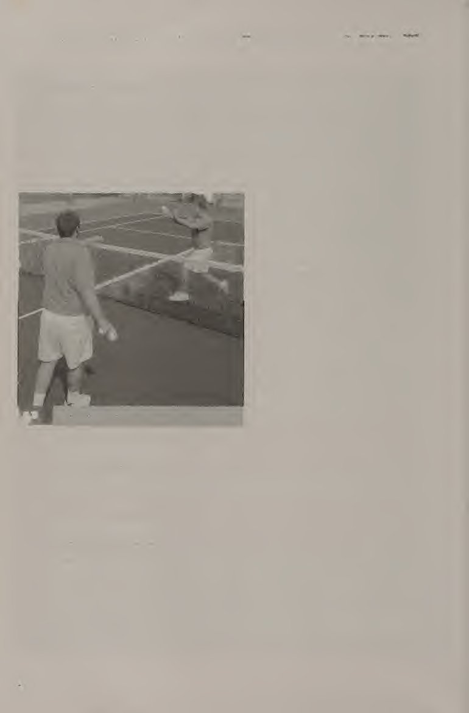
Để nó được coi là một quả giao bóng hợp pháp, bạn phải đánh bóng trước khi nó nảy lên và quả giao bóng phải tiếp đất vào ô giao bóng chéo ở phía đối diện. Đối với mỗi điểm, người giao bóng có hai cơ hội để thực hiện cú giao bóng. Nếu người giao bóng không thể thực hiện cú giao bóng hợp pháp trong hai lần thử, thì đó được gọi là lỗi kép và điểm sẽ thuộc về người nhận.
For each point, the server has two chances to get the serve in. If the server cannot execute a legal serve in two tries, it is called a double fault and the point goes to the receiver. Simplified Serve The simplified serve is a good place to start if you have never served before. \^at makes it simplified is that it cuts out some of the starting motion.
Giao bóng đơn giản hóa Giao bóng đơn giản hóa là một điểm tốt để bắt đầu nếu bạn chưa từng giao bóng trước đây. \^at làm cho nó đơn giản hơn là nó cắt bỏ một số chuyển động ban đầu. Ưu điểm là nó dễ phối hợp hơn nhiều. Nhược điểm là đầu vợt sẽ không có nhiều động lượng đi vào điểm tiếp xúc. Tuy nhiên, đây là một cú giao bóng hoàn toàn hợp pháp và hợp pháp và là điểm khởi đầu tốt cho người mới bắt đầu. Bắt đầu với tư thế.
The advantage is that it is a much easier motion to coordinate. The disadvantage is that the racket head will not have as much momentum going into the contact point. However, it is a perfectly legal and legitimate serve and a good starting point for beginners. Start with the stance. If you are right-handed, your left foot should be in front, just behind the basefine, pointed toward the right net post.
Nếu bạn thuận tay phải, chân trái của bạn phải ở phía trước, ngay sau đường biên ngang, hướng về phía cột lưới bên phải. Bàn chân trái của bạn phải ở phía sau bàn chân phải, song song với vạch cuối sân (baseline). Hai bàn chân của bạn phải rộng bằng vai (hình 9.1a). Giữ vợt của bạn theo kiểu cầm vợt thuận tay phía đông, kiểu cầm vợt kiểu lục địa hoặc đâu đó ở giữa. Bạn có thể sử dụng cách cầm vợt thuận tay kiểu đông miễn là mục tiêu cuối cùng là chuyển sang kiểu cầm vợt kiểu lục địa.
Your left foot should be behind your right foot, parallel to the baseline. Your feet should be about shoulder-width apart (figure 9.1a). Hold your racket in an eastern forehand grip, a continental grip, or somewhere in between. It is fine to use the eastern forehand grip as long as the goal is to move to the continental grip eventually. Put your racket over your shoulder and down your back with the elbow high. Your palm should be to your ear (figure 9. lb).
Đặt vợt qua vai và hướng xuống lưng với khuỷu tay cao. Lòng bàn tay của bạn phải chạm vào tai (hình 9. lb). Để ném bóng, hãy sử dụng ngón cái, ngón trỏ và ngón giữa để giữ bóng ở tay trái. Hãy giữ quả bóng như thể bạn đang cầm một con chim sống—^bạn không muốn bóp nó quá mạnh, nhưng nếu bạn không giữ chặt nó, nó sẽ bay đi. Cánh tay của bạn phải được thư giãn ở phía trước chân trái của bạn. Đầu gối của bạn phải hơi cong vì bạn sẽ sử dụng toàn bộ cơ thể chứ không chỉ cánh tay để ném bóng.
For the toss, use your thumb, index finger, and middle finger to hold the ball in your left hand. Hold the ball as though you were holding a live bird—^you don’t want to squeeze it too hard, but if you don’t hold on to it, it will fiy away. Your arm should be relaxed in front of your left leg. Your knees should be slightly bent because you will be using your whole body, not just your arm, to toss the ball. Gradually accelerate your tossing arm up and let go of the ball when
Dần dần tăng tốc độ ném bóng lên và thả bóng khi vòng tròn của bạn cao hơn đầu một chút (hình 9.1c). Đừng búng cổ tay; điều này sẽ khiến bạn mất kiểm soát bóng. Cánh tay của bạn nên được mở rộng. Trong giai đoạn hướng lên của cú ném, cánh tay tung của bạn không được uốn cong. Hãy chắc chắn để giữ cánh tay ném của bạn lên. Bóng phải bay cao hơn một chút so với nơi bạn có thể với tới bằng vợt và hơi hướng về phía trước để khi đánh bóng, bạn có thể dồn trọng lượng cơ thể của mình vào bóng. Lúc này, trọng lượng cơ thể của bạn phải dồn lên bàn chân sau và đầu gối của bạn phải cong để toàn bộ cơ thể sẵn sàng đẩy lên trên và về phía trước.
your arm reaches a bit above head height (figure 9.1c). Do not flick your wrist; this will cause you to lose control of the ball. Your arm should be extended. At no time during the upward phase of the toss should your tossing arm flex. Be sure to keep your tossing arm up. The ball should go slightly higher than where you can reach with your racket and slightly forward so that when you hit the ball, you can have your body weight behind it. At this point, your body weight should be on your back foot, and your knees should be bent so that your whole body is ready to thrust upward and forward. Now for the swing, accelerate the racket up to meet the ball (figure 9.1d).
Bây giờ đối với cú vung vợt, tăng tốc vợt lên để gặp bóng (hình 9.Id). Khi bạn tiếp xúc, cánh tay đánh của bạn phải duỗi thẳng hoàn toàn và tiếp xúc phải hơi ở phía trước và bên phải cơ thể bạn. Tung bóng. Tiếp cận và liên lạc.
When you make contact, your hitting arm should be fully extended and contact should be made slightly in front and to the right of your body. Ball toss. Reach up and make contact. More to choose and use: Serve
Mote để lựa chọn và sử dụng: Giao bóng Giữ cằm của bạn khi tiếp xúc và theo dõi. Mặt vợt phải hướng về phía đối diện của sân khi tiếp xúc. Trọng lượng cơ thể của bạn nên chuyển từ chân sau sang chân trước. Động tác tiếp theo sẽ đi ngang qua cơ thể và kết thúc ở bên phải của bạn. Khi kết thúc, cánh tay của bạn phải tạo thành hình chữ X ở phía trước cơ thể, cánh tay cầm vợt đặt trên cánh tay tung bóng của bạn. Bạn có thể tiếp đất bằng một trong hai chân. Nếu bạn tiếp đất bằng chân phải, nó sẽ hạ xuống sau khi bạn tiếp xúc với bóng.
Keep your chin up at contact and through the follow through. The racket face should face the opposite side of the court at contact. Your body weight should transfer from the back foot to the front foot. The follow-through should go across the body and finish on your right side. At the finish, your arms should form an X in front of your body, your racket arm over your tossing arm. You may land on either foot. If you land on your right foot, it should come down after you have made contact with the ball.
Về mặt pháp lý, bạn không thể bước lên đường cuối sân hoặc vào sân cho đến khi bạn đã tiếp xúc với bóng. Tuy nhiên, bạn có thể băng qua máy bay trước khi tiếp xúc. Cú giao bóng chuyển động đầy đủ Cú giao bóng chuyển động đầy đủ (hình 9.2) về cơ bản giống như cú giao bóng đơn giản hóa ngoại trừ việc có thêm một chút chuyển động trước khi tiếp xúc để vợt sẽ có nhiều động lượng hơn khi tiếp xúc. Vị trí đặt chân giống như đối với cú giao bóng đơn giản. Tuy nhiên, cánh tay lại bắt đầu khác.
Legally, you cannot step on the baseline or into the court until after you have made contact with the ball. You can, however, cross the plane before contact. Full Motion Serve The full motion serve (figure 9.2) is basically the same as the simplified serve except that there is a bit more movement before contact so that the racket will have more momentum at contact. Position the feet the same as for the simplified serve. The arms, however, start differently.
Cả hai cánh tay phải ở phía trước và thư giãn. Xoay cánh tay vợt của chúng ta lên xuống như thể nó là một con lắc, sau đó xoay vai và thả vợt xuống lưng. Hãy chắc chắn rằng khuỷu tay của bạn cao. Khi bạn di chuyển cánh tay đánh của mình lên và xuống theo chuyển động con lắc, cánh tay tung của bạn sẽ bắt đầu chuyển động hướng lên trên. Cũng giống như trong cú giao bóng đơn giản, tay tung bóng vẫn thẳng trong suốt quá trình tung bóng. Thả bóng cao hơn đầu một chút và giữ cánh tay của bạn giơ lên.
Both arms should be in front of you and relaxed. Swing 3^our racket arm down and up as if it were a pendulum, then turn your shoulders and drop the racket down your back. Make sure your elbow is high. As you move your hitting arm down and up in the pendulum motion, your tossing arm should start its upward movement. Just as in the simplified serve, the tossing arm remains straight throughout the toss. Release the ball a bit above head level and keep your arm up.
Cú ném của bạn phải cao hơn một chút so với điểm cao nhất mà bạn có thể đạt được bằng vợt của mình. Tăng tốc vợt lên trên và về phía trước để tiếp xúc với bóng ở điểm cao nhất bạn có thể chạm tới. Cánh tay đánh của bạn phải duỗi thẳng hoàn toàn và nên tiếp xúc một chút ở phía trước cơ thể. Việc thực hiện tiếp theo và kết thúc cũng giống như đối với cú giao bóng đơn giản hóa.
Your toss should go slightly higher than the highest point you can reach with your racket. Accelerate your racket upward and forward to contact the ball at the highest point you can reach. Your hitting arm should be fully extended and contact should be made slightly in front of your body. The follow-through and finish are the same as for the simplified serve.
Nhiều lựa chọn hơn và sử dụng: Giao bóng đầy đủ chuyển động Giao bóng cắt lát Giao bóng cắt lát (hình 9.3), mặc dù khó đánh hơn giao bóng chuyển động hoàn toàn, nhưng lại ít phức tạp hơn một chút so với giao bóng xoáy lên. Về cơ bản, nó là một cú giao bóng tạo xoáy ngang vào bóng và cú xoay có thể đi rộng. Khi thực hành, độ xoáy được thêm vào sẽ giúp bạn kiểm soát nhiều hơn về vị trí và độ chính xác. Để thực hiện cú giao bóng cắt lát, bạn phải sử dụng kiểu cầm trái tay kiểu lục địa hoặc kiểu đông. Bạn có thể sử dụng chuyển động giao bóng đơn giản hóa hoặc chuyển động giao bóng đầy đủ.
More to choose and use: Serve Full Motion Serve Slice Serve The slice serve (figure 9.3), although more difficult to hit than the full motion serve, is a bit less complicated than the topspin serve. Basically, it is a serve that puts sidespin on the ball, and the swing can go wide. With practice, the added spin will give you more control of placement and accuracy. To hit the slice serve, you must use a continental or eastern backhand grip. You can use either the simplified service motion or the full service motion.
Việc ném bóng nên hơi chếch sang bên phải một chút và gần cơ thể bạn hơn một chút so với một cú giao bóng thông thường. Sự khác biệt chính giữa cú giao bóng cắt và cú giao bóng phẳng là nơi bạn tiếp xúc với bóng. Hãy tưởng tượng mặt đồng hồ trên quả bóng. Đối với cú giao bóng lát, hãy đánh bóng vào lúc 2 giờ. Ngay sau khi tiếp xúc với bóng, hãy bẻ cổ tay của bạn một chút về phía bên trái.
The ball toss should be a bit to the right and a bit closer to your body than for a regular serve. The major difference between the slice serve and the flat serve is where you contact the ball. Imagine the face of a clock on the ball. For the slice serve, hit the ball at 2 o’clock. Just after ball contact, snap your wrist a bit toward the left. More to choose and use: Serve Slice Serve
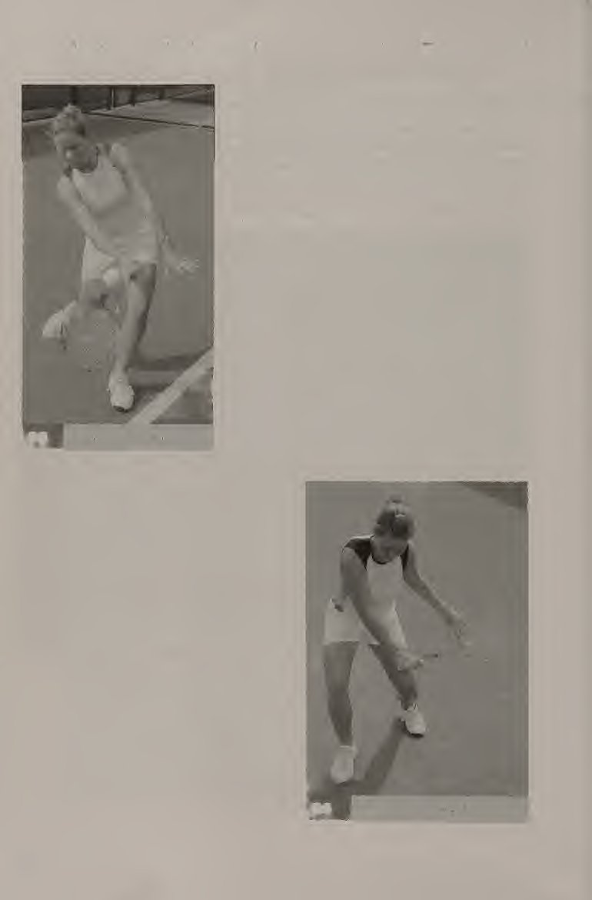
Nhiều lựa chọn hơn và sử dụng: Giao bóng Cắt lát Giao bóng cắt lát (ngắn và rộng) đặc biệt hữu ích ở phía deuce như một cú giao bóng bất ngờ. Sau khi giao hầu hết các quả giao bóng của bạn ở phía chữ T, đối thủ của bạn có thể sẽ chưa sẵn sàng cho một lát giao bóng ra biên. Tuy nhiên, nhược điểm của cú giao bóng này là rõ ràng nếu bạn đang thi đấu với một đối thủ thích đánh theo góc: Một người chơi thích đánh theo góc sẽ sử dụng góc của bạn để đánh một cú đánh theo góc nghiêm trọng về phía bạn.
The slice serve (short and wide) is especially useful on the deuce side as a surprise serve. After serving most of your serves down the T, your opponent probably will not be ready for a slice serve out wide. The disadvantage of this serve, however, is apparent if you are playing against an opponent who likes to hit angles: A player who likes to hit angles will use your angle to hit a severely angled shot back to you. More to choose and use: Serve
mote để lựa chọn và sử dụng: Giao bóng Giao bóng xoáy lên Giao bóng xoáy lên (hình 9.4) khó đánh hơn một chút so với giao bóng cắt lát. Nhiều người chơi trình độ cao sử dụng cú giao bóng xoáy lên làm cú giao bóng thứ hai vì nó đáng tin cậy hơn cú giao bóng fiat. Cũng giống như một cú đánh trước, nó sẽ có quỹ đạo tương đối cao hơn, giảm mạnh trong khi bay, sau đó nảy lên cao. Loại bóng nặng này mang lại khả năng giải phóng lưới tốt và sẽ ngăn bóng đi ra ngoài biên.
Topspin Serve The topspin serve (figure 9.4) is a bit more difficult to hit than the slice serve. Many advanced players use the topspin serve as their second serve because it is more dependable than a flat serve. Just like a topspin forehand, it will have a relatively higher trajectory, dip sharply during flight, then take a high bounce. This kind of heavy ball provides good net clearance and will prevent the ball from sailing out of bounds.
Giao bóng xoáy lên
Topspin Serve
Nhiều lựa chọn và sử dụng hơn: Giao bóng Sử dụng cách cầm vợt trái tay kiểu lục địa hoặc phía đông cho cú giao bóng xoáy lên. Tung bóng sang trái một chút và gần cơ thể bạn hơn một chút so với cú giao bóng thông thường. Vdll này cho phép bạn đánh bóng bằng vợt. Hãy tưởng tượng lại mặt đồng hồ. Tiếp xúc bóng xảy ra trong khoảng thời gian từ 12 giờ đến 1 giờ (hình 9.5). Việc bẻ cổ tay phải được thực hiện thẳng xuống. Cú giao bóng xoáy lên (còn gọi là cú giao bóng) là một cú giao bóng tốt để sử dụng đối với đối thủ không thích đánh bóng cao.
More to choose and use: Serve Use a continental or eastern backhand grip for the topspin serve. Toss the ball a bit to the left and a bit closer to your body than for a regular serve. This will allow you to come over the ball with the racket. Imagine the face of the clock again. Ball contact occurs between 12 o’clock and 1 o’clock (figure 9.5). The wrist snap should be made straight down. The topspin serve (also called the kick serve) is a good serve to use against an opponent who does not like to hit high balls.
Cú giao bóng xoáy lên là cú giao bóng thứ hai đáng tin cậy. Một bất lợi đối với cú giao bóng xoáy lên là nếu nó được đánh ngắn, một tay vợt giỏi sẽ vượt qua nó.
The topspin is a dependable second serve. A disadvantage to the topspin serve is that if it is hit short, a good player will be all over it.
Đưa nó ra sân Đặt quả giao bóng Vì quả giao bóng được sử dụng để bắt đầu điểm nên nó mang lại cho người giao bóng một lợi thế lớn. Máy chủ có quyền chọn vị trí và cách bắt đầu điểm. Lợi thế này cho phép bạn khai thác điểm yếu của đối thủ. Dưới đây là một số ví dụ về nơi bạn có thể giao bóng và lý do nên giao bóng ở đó (xem thêm hình 9.6). Giao bóng vị trí. ■ Cú giao bóng từ phía dưới đi thẳng xuống đường giao bóng ở giữa. Đó là một cú giao bóng tốt để sử dụng, đặc biệt là ở phía bên trái (phải), bởi vì nó đi tới phía trái tay của đối thủ, thường là một cú đánh yếu hơn đối với đối thủ của bạn.
Take it to the court Placing the Serve Because the serve is used to start the point, it gives the server a big advantage. The server gets to choose where and how to start the point. This advantage allows you to exploit your opponent’s weaknesses. Here are some examples of where you can serve and why to serve there (see also figure 9.6). Serve placement. ■ The down-the-T serve goes straight down the center service line. It is a good serve to use, especially on the deuce (right) side, because it goes to your opponent’s backhand, which usually is a weaker shot for your opponent.
Một ưu điểm khác là nó không cho đối thủ của bạn nhiều thời gian để phản ứng vì đây là khoảng cách ngắn nhất từ người giao bóng đến hộp dịch vụ. Một ưu điểm khác là nó đi qua phần thấp nhất của lưới. (Lưới cao 36 inch ở giữa thay vì cao 42 inch ở cuối.) Đây cũng là một cú đánh tốt để sử dụng đối với những người thích tạo góc và có kỹ năng làm việc đó. Vì cú giao bóng này không mang lại cho đối thủ của bạn bất kỳ góc nào nên nó khiến đối thủ của bạn khó tạo ra bất kỳ góc nào hơn.
Another advantage is that it doesn’t give your opponent a lot of time to react because it is the shortest distance from the server to the service box. Another advantage is that it goes over the lowest part of the net. (The net is 36 inches high at the center as opposed to 42 inches high at the ends.) It also is a good shot to use against someone who likes to produce angles and is skilled at doing so. Since this serve does not give your opponent any angles, it makes it more difficult for your opponent to generate any.
Một nhược điểm là do khoảng cách ngắn hơn nên dễ đánh xa hơn, dẫn đến lỗi giao bóng. ■ Cú giao bóng rộng, đúng như tên gọi, là Avide. Nó có thể được sử dụng một cách hiệu quả ở phía quảng cáo (trái) bởi vì một lần nữa, đó là nơi có cú trái tay của đối thủ. Sử dụng cú giao bóng rộng nếu đối thủ của bạn không giỏi trong việc chạy ra xa và cắt góc hoặc đánh các cú đánh trên đường chạy. Cú giao bóng này mở ra sân cho bạn. Đừng sử dụng cú giao bóng này quá nhiều với những đối thủ thích đánh những cú đánh góc cạnh.
A disadvantage is that because the distance is shorter, it is easier to hit it long, resulting in a service fault. ■ The wide serve, as the name implies, goes out wide. It can effectively be used on the ad (left) side because again, that’s where your opponent’s backhand is. Use the wide serve if your opponent is not so good at running out wide and cutting off angles or at hitting shots on the run. This serve opens up the court for you. Do not use this serve too much against opponents who like to hit angled shots.
m Cú giao bóng trong cơ thể là một cú giao bóng bị đánh giá thấp. Đây là một cú giao bóng cực kỳ có giá trị cần có trong kho vũ khí của bạn, vì không có nhiều đối thủ có thể hung hãn trước một cú giao bóng gây nhiễu. Đây là một cú giao bóng tốt để đánh với những người chơi thích chạy theo bóng. Điều này lấy đi sức mạnh của họ. Một lý do chính đáng khác để thực hiện cú giao bóng này là nếu bạn đang thi đấu với một người có chân tay dài và khó tránh khỏi đường đi. ■— Hãy thử KHOAN QUAY Bài tập này có thể được thực hiện một mình.
m The at-the-body serve is an underrated serve. This is an extremely valuable serve to have in your arsenal, as not many opponents will be able to be aggressive off a jamming serve. This is a good serve to hit against players who love to run after balls. This takes away their strength. Another good reason to hit this serve is if you are playing against someone with long limbs who finds it difficult to get out of the way. ■ Give it a go TOSS DRILL This drill can be done alone. Assume the correct stance for the serve.
Giữ thế đứng đúng cho cú giao bóng. Đặt vợt xuống phía trước đường cuối sân, chếch sang phải một chút nếu bạn thuận tay phải hoặc chếch sang trái một chút nếu bạn thuận tay trái. Đặt vợt sao cho đầu vợt hướng về phía lưới và tay cầm hướng về phía hàng rào phía sau. Với bàn tay không thuận của bạn, ném quả bóng và để nó tiếp đất. Mục đích là để cú ném tiếp đất vào dây vợt (hình 9.7).
Put the racket down in front of the baseline, a bit to the right if you are righthanded or a bit to the left if you are left-handed. Place the racket so the head points toward the net and the grip points toward the back fence. With your nondominant hand, toss the ball and let it land. The goal is to have the toss land on the strings of the racket (figure 9.7). Give it a go: Serve TRAP THE BALL
Hãy thử đi: Giao Bẫy BÓNG Bài tập này có thể được thực hiện một mình. Giữ tư thế đúng để thực hiện cú giao bóng, quay mặt vào tường hoặc hàng rào. Với vợt đặt sau vai thuận của bạn và khuỷu tay uốn cong như thể đang ném một quả bóng, hãy ném bóng bằng tay không thuận, giơ vợt lên và nhẹ nhàng giữ bóng giữa các dây vợt và tường hoặc hàng rào (hình 9.8). Cánh tay đánh của bạn phải duỗi thẳng hoàn toàn. PHỤC VỤ NGẮN Bài tập này có thể được thực hiện một mình.
This drill can be done alone. Assume the correct stance for a serve, facing a wall or fence. With the racket behind your dominant shoulder and your elbow bent as if throwing a ball, toss the ball with your nondominant hand, reach up with your racket and gently trap the ball between the racket strings and the wall or fence (figure 9.8). Your hitting arm should be in full extension. SHORT SERVES This drill can be done alone.
Thay vì giao bóng từ vạch cuối sân, hãy giao bóng từ vạch giao bóng. Điều này giúp bạn tập trung vào kỹ thuật của mình thay vì nghĩ đến việc đánh bóng thật mạnh. Giao bóng ít nhất 20 quả mỗi bên trước khi quay trở lại vạch cuối sân (baseline). PHỤC VỤ MỤC TIÊU Bài tập này có thể được thực hiện một mình. Xếp các hình nón hoặc hình kim tự tháp bóng (một quả bóng tennis trên đế của ba quả bóng tennis) ở ba vị trí trong ô giao bóng: ở giữa chữ T, ở giữa hộp và rộng ra ngoài (hình 9.9).
Instead of serving from the baseline, serve from the service line. This helps you concentrate on your technique instead of thinking about hitting the ball hard. Serve at least 20 on each side before moving back to the baseline. TARGET SERVES This drill can be done alone. Set up cones or ball pyramids (one tennis ball on top of a base of three tennis balls) in three positions in the service box: down the middle of the T, in the middle of the box, and out wide (figure 9.9).
Trước khi thực hiện mỗi lần giao bóng, hãy đảm bảo bạn chọn một mục tiêu và thực hiện nó. Nếu bạn bắn trúng mục tiêu, hãy sửa nó trước lần thử tiếp theo. Thực hiện năm lần thử vào mỗi mục tiêu trước khi chuyển sang mục tiêu tiếp theo.
Before attempting each serve, make sure you pick one target and go for it. If you hit the target, fix it before the next attempt. Perform five attempts at each target before moving on to the next target.
Hãy thử xem: Thiết lập giao bóng cho Mục tiêu. QUAY NÓ! Bài tập này có thể được thực hiện một mình. Đây là một bài tập tốt để luyện tập các cú giao bóng thứ hai. Cố gắng đánh cú giao bóng cao nhất có thể, sử dụng chuyển động giao bóng thông thường và nhiều xoáy lên. Điều này giúp bạn thực hành cú xoáy lên, hay cú đá, giao bóng. Điểm đặt Cú giao bóng là một trong những cú đánh phức tạp nhất trong quần vợt. Phải luyện tập rất nhiều, luyện tập, luyện tập nhiều để có được một cú giao bóng đáng tin cậy. Đây cũng là một trong những cú đánh quan trọng nhất trong trò chơi.
Give it a go: Serve Target serves setup. SPIN IT! This drill can be done alone. This is a good drill for practicing second serves. Try to hit the serve as high as you can, using a regular service motion and a lot of topspin. This v^l help you practice the topspin, or kick, serve. Set Point The serve is one of the most complicated strokes in tennis. It takes a lot of practice, practice, practice to get a dependable serve. It is also one of the most important strokes in the game.
Điều quan trọng là phải đạt được sự nhất quán trong cú giao bóng trước khi cố gắng đánh nó với sức mạnh lớn hơn. Sử dụng tiến trình tự nhiên của việc thực hiện từ cú giao bóng đơn giản đến cú giao bóng chuyển động hoàn chỉnh đến các cú giao bóng xoáy để học kỹ thuật chính xác. Và, quan trọng nhất, hãy kiên nhẫn với chính mình. Sau khi giao bóng là đến việc trả giao bóng. Trong chương tiếp theo, bạn sẽ học cách trả giao bóng và hiểu các kiểu trả giao bóng khác nhau.
It is important to achieve consistency on the serve before trying to hit it with increased power. Use the natural progression of working from the simplified serve to the full motion serve to spin serves to learn the correct technique. And, most important of all, be patient with yourselfl After the serve comes the return of serve. In the next chapter, you will learn to return serve and to understand the different types of returns.
Chương 10: Sự trở lại của phản ứng giao bóng & chiến thuật
i t 1 A Việc trả giao bóng là một cú đánh tiếp đất thông thường, nhưng nó có thể khó thực hiện trước một người giao bóng hiệu quả. Một người giao bóng hiệu quả sẽ có tỷ lệ giao bóng đầu tiên cao và sẽ giúp bạn đoán được loại giao bóng sắp tới. Chìa khóa để quay trở lại một cách nhất quán là chờ đợi ở đúng vị trí, giữ cho đôi chân của bạn di chuyển và thực hiện một cú vung vợt lùi ngắn. Có nhiều cách khác nhau để bạn có thể trả giao bóng, tùy theo cách giao bóng hoặc loại đối thủ mà bạn đang đối đầu.
Return of Serve
The return of serve is a regular ground stroke, but it can be difficult to execute against an effective server. An effective server will get a high percentage of first serves in and will keep you guessing as to what type of serve is coming. The keys to returning consistently are waiting in the correct place, keeping your feet moving, and taking a short backswing. There are different ways you can return serve, according to the serve or the type of player you are up against.
Việc trả giao bóng là một phần rất quan trọng của trận đấu vì đây là cú đánh có thể xác định xem bạn đang tấn công hay phòng thủ trong điểm. Sự quay trở lại sâu sắc là điều quan trọng nhất trong việc khẳng định bản thân trong một điểm. Khi bạn thắng một ván đấu với tư cách là người trả giao bóng, điều đó được gọi là “nghỉ giao bóng”.
The return of serve is a very important part of the game because it is a shot that can determine whether you are offensive or defensive in the point. A deep return is most important in establishing yourself within a point. When you win a game as the returner, it is called a “break” in service.
Chia đôi góc Ba kỹ năng ngày càng trở nên quan trọng khi trả giao bóng: chờ ở đúng vị trí trên sân, chân nhanh và giữ cho cú đánh sau lưng ngắn. Việc trả giao bóng đòi hỏi sự hiểu biết cơ bản, rất quan trọng về cách đặt bản thân vào vị trí tối ưu trên sân. “Quy tắc” này được gọi là chia đôi góc. Khi bạn ở đường cuối sân, bạn nên đặt mình vào giữa tất cả các cú đánh có thể trúng bạn.
Bisect the Angle Three skills become increasingly important when returning service: waiting in the correct position on the court, having quick feet, and keeping your backswing short. The return of serve requires a very important, basic understanding of how to position yourself in the optimad place on the court. This “rule” is called bisecting the angle.
Điều này có nghĩa là gì? Giả sử bạn vừa đánh một quả bóng vào cú trái tay sâu của đối thủ thuận tay phải. Bây giờ bạn muốn tìm vị trí tối ưu để định vị bản thân sao cho bạn ở giữa tất cả các cú đánh trả có thể xảy ra. Ở bên phải của bạn, quãng đường xa nhất mà bạn cần phải chạy là đến đường biên đơn bên. Ở bên trái của bạn, quãng đường xa nhất bạn cần phải chạy là cách đường biên đơn của bên quảng cáo vài feet. Điều này được quyết định bởi các góc có sẵn cho đối thủ của bạn.
When you are at the baseline, you should position yourself in the middle of all possible shots that can be hit to you. What does this mean? Let’s say that you have just hit a ball to your right-handed opponent’s deep backhand. Now you want to find the optimal place for you to position yourself so that you are in the middle of all possible return shots. On your right, the farthest you will need to run in is up to the deuce-side singles sideline.
Do đó, phần giữa cách tâm điểm một vài feet (hình 10.1). Đó là nơi bạn nên chờ đợi lần bắn tiếp theo.
On your left, the farthest you will need to run is several feet past the ad-side singles sideline.
bạn có thể làm được! —. . Điều này áp dụng thế nào cho việc trả giao bóng? Việc trả giao bóng cũng giống như bất kỳ cú đánh mặt đất nào khác. Hãy suy nghĩ về nơi phát ra cảnh quay. Nếu bạn quay lại ở phía deuee, cú giao bóng sẽ phát ra từ phía deuee của đối thủ. Điều đó có nghĩa là eourt mở hoặc nghiêng về phía deuee của bạn. Khoảng cách xa nhất mà bạn có thể phải chạy sang bên trái là đến đường dịch vụ trung tâm. Khoảng cách xa nhất mà bạn có thể phải chạy sang bên phải là cách đường biên đôi vài feet.
This is dictated by the angles that are available to your opponent. Therefore, the middle is a couple of feet to the left of the centermark (figure 10.1). That is where you should wait for the next shot. you can do it! —. . How does this apply to the return of serve? The return of serve is like any other ground stroke. Think about where the shot is eoming from. If you are returning on the deuee side, the serve is eoming from your opponent’s deuee side. That means that the eourt is open or angled on your deuee side. The farthest you might have to laterally run to the left is up to the center service line.
Điều này có nghĩa là điểm giữa của các cú giao bóng trả về ở phía bên trái hơi lệch về bên trái của đường biên đơn (hình 10.2). Cơ sở lý luận tương tự cũng áp dụng cho phía quảng cáo. Đối thủ của bạn giao bóng mạnh đến mức nào sẽ quyết định mức độ bạn nên ở gần đường giao bóng. Trung bình, bạn muốn ở xung quanh vạch cuối sân (baseline). 10.2 Chia đôi angie khi trả lại dịch vụ.
The farthest you might have to laterally run to the right is a few feet past the doubles sideline. This means that the middle for returning serves on the deuce side is approximately a bit to the left of the singles sideline (figure 10.2). The same rationale applies to the ad side. How hard your opponent serves the ball will dictate how close to the service line you should be. On the average, you want to be around the baseline.
Nhiều lựa chọn và sử dụng hơn: Trả giao bóng Trả giao bóng cơ bản Điều rất quan trọng là giữ cho chân của bạn di chuyển khi trả giao bóng (hình 10.3a), đặc biệt là đối với một tay vợt thực hiện giao bóng tốt. Điều này giúp tính thời gian cho bước tách và sau đó là chuyển động đến bóng. Khi trả giao bóng, hãy tưởng tượng mình là một võ sĩ quyền anh đang nhảy xung quanh. Trọng lượng cơ thể của bạn phải dồn về phía trước khi bạn tiếp xúc với bóng. Một cú backswing ngắn (hình 10.3b) đặc biệt hữu ích khi đối đầu với một người giao bóng cứng.
10.2 Bisecting the angie on service return. More to choose and use: Return of Serve Basic Return It is very important to keep your feet moving when returning serve (figure 10.3a), especially against a player who places serves well. This helps time the split step and, subsequently, movement to the ball. When returning serve, think of yourself as a boxer who hops around. Your body weight should be forward as you make contact with the ball. A short backswing (figure 10.3b) is especially useful against a hard server.
Khi quả giao bóng đến với bạn nhanh, bạn sẽ không có thời gian để rút vợt về hoàn toàn như trong một cú đánh tiếp đất thông thường. Bạn phải rút ngắn cú vung sau của mình, sau đó chuyển trọng lượng của bạn về phía trước và thực hiện theo. Nếu động tác backswing của bạn quá lớn, bạn có thể bị dồn trọng lượng về phía sau và điểm tiếp xúc của bạn sẽ ở phía sau cơ thể. Hoàn trả cơ bản
When the serve is coming at you fast, there is no time to take your racket back all the way as in a regular ground stroke. You must abbreviate your backswing, then transfer your weight forward and follow through. If your backswing is too big, you may get caught with your weight back and your contact point will be behind your body. Basic Return More to choose and use: Return of Serve
Nhiều lựa chọn và sử dụng hơn: Trả lại Giao bóng Chip và Sạc Chip và sạc (hình 10.4) là một sự trở lại rất tích cực. Đó là một cuộc tấn công thường được theo sau ngay lập tức bằng một động tác di chuyển vào lưới để kết thúc điểm bằng một cú vô lê hoặc cú sút từ trên cao. Cú thuận tay hoặc trái tay được sử dụng để khởi động chip và tính phí. Đây là phần chip. Viết tắt của backswing. Đánh quả bóng về phía trước để bạn có thể dựa vào nó. Việc theo dõi sẽ đưa bạn tiến tới mạng.
The Chip and Charge The chip and charge (figure 10.4) is a very aggressive return. It is an attack that usually is followed immediately by a movement to the net to finish the point with a volley or overhead shot. The slice forehand or backhand is used to start the chip and charge. This is the chip part. Abbreviate the backswing. Hit the ball way in front of you so that you can lean into it. The follow-through should take you forward to the net.
Đi theo hướng sút và lao vào lưới! Con chip và bộ sạc là một công cụ hữu ích để sử dụng. Tuy nhiên, để thành thạo nó cần phải thực hành rất nhiều. Mục đích của chip và phí là gây áp lực lớn lên người giao bóng, khi người quay lại thể hiện thái độ công kích, tấn công. Con chip và điện tích nên được sử dụng bởi những tay vợt có điểm mạnh là cú vô lê và cú đánh đầu. Nó đặc biệt nên được sử dụng để chống lại những tay vợt có cú chuyền hoặc lốp bóng yếu.
Follow through in the direction of the shot and charge the net! The chip and charge is a useful tool to use. It does, however, take a tremendous amount of practice to be proficient at it. The purpose of the chip and charge is to put a lot of pressure on the server, as the returner displays an offensive, attacking attitude. The chip and charge should be used by players whose strengths are the volley and the overhead. It should especially be used against players who have a weak passing shot or lob.
Chip và sạc
Chip and Charge
Đưa nó ra tòa Trở lại chống lại người giao bóng cứng Chống lại người giao bóng cứng, có thể thực hiện hai điều để khiến công việc của bạn với tư cách là người hoàn trả dễ dàng hơn một chút. Đầu tiên, đứng xa hơn về phía sau. Điều này sẽ giúp bạn có thêm thời gian để phản ứng. Thứ hai, rút ngắn thời gian backswing của bạn. Cú vung vợt về phía sau ngắn hơn giúp tiếp xúc bóng dễ dàng hơn nhiều. Nó gần như thể bạn sắp đánh một cú vô lê. Trả bóng trước máy giao bóng mềm Nhiều người chơi gặp khó khăn khi trả các cú giao bóng ngắn hoặc giao bóng mềm vì họ cố gắng thực hiện quá nhiều cú giao bóng mỗi lần.
Take it to the court Returning Against a Hard Server Against a hard server, two things can be done to make your job as the returner a bit easier. First, stand farther back. This will buy you some time to react. Second, shorten your backswing. A shorter backswing makes clean contact with the ball much easier. It is almost as though you are going to hit a volley. Returning Against a Soft Server Many players have a hard time returning short or soft serves because they try to do way too much with it every single time.
Người chơi sẽ vô tình gặp rủi ro lớn hơn nhiều đối với một cú giao bóng nhẹ so với khi họ trả một cú giao bóng có nhịp độ đều đặn. Đừng tạo gánh nặng cho bản thân với áp lực của cảm giác như thể bạn phải giành được điểm ngay sau lượt về. Thay vào đó, hãy thực hiện cú đánh có tỷ lệ đánh cao hơn, chéo bàn và sâu. Trả bóng khi đối đầu với người giao bóng và người đánh vô-lê Đối đầu với một tay vợt thích giao bóng và đánh vô-lê, bạn có thể làm một số điều. Đầu tiên, hãy thử thực hiện một cú sút thẳng. Một cú vô-lê là một cú sút không bị chạm và đi thẳng vào lưới.
Players will unknowingly take a much bigger risk on a soft serve than if they were returning a regularly paced serve. Don’t burden yourself with the pressure of feeling like you have to win the point right off the return. Instead, go for a higher-percentage shot, crosscourt and deep. Returning Against a Serve and Volleyer Against a player who likes to serve and volley, you can do several things. First, try hitting a passing shot outright. A passing shot is one that is untouched and goes right by the net player.
Đây thường không phải là một nhiệm vụ dễ dàng để hoàn thành, đặc biệt là khi thực hiện một cú giao bóng tốt. Thứ hai, hãy cố gắng chuẩn bị cho mình một cú vô-lê dễ dàng hơn bằng cách đánh một cú trả bóng thấp vào chân người giao bóng tới. Điều này thường có thể được thực hiện bằng cách đánh một quả bóng có độ xoáy lên, điều này sẽ mang lại cho bạn quỹ đạo mong muốn. Điều này sẽ khiến người giao bóng phải đánh vô-lê về phía bạn và bạn có thể thực hiện cú đánh vô-lê này. Thứ ba, cố gắng thực hiện một cú lốp bóng từ quả trả giao. Đây là một lựa chọn tốt đối với những người giao bóng không có chi phí hoạt động tốt hoặc những người không có bước phân chia tốt sau khi giao bóng.
This is often not an easy task to accomplish, especially off a good serve. Second, try to set yourself up for an easier passing shot by hitting a low return at the incoming server’s feet. This can often be accomplished by hitting a ball with topspin, which will give you the desired trajectory. This will cause the server to have to volley up to you, and you can go for a passing shot off this shot. Third, try to hit a lob off the return. This is a good option against servers who don’t have a good overhead or who don’t have a good split step after the serve.
Đánh trả với một người chơi đánh bóng Đối đầu với một người chơi ở đường biên vững chắc, hãy chơi quần vợt có tỷ lệ phần trăm cao bằng cách đánh trả cú trả sâu và chéo sân. Có ba lý do tại sao việc đánh chéo sân an toàn hơn nhiều so với việc đánh xuống đường biên của quả trả giao: lưới thấp nhất ở giữa (36 inch ở giữa, 42 inch ở các cột lưới); sân có đường chéo dài hơn để bạn có thể giảm sai sót về độ dài; và bạn sẽ mắc nhiều lỗi hơn khi thay đổi hướng của quả bóng.
Returning Against a Baseiiner Against a solid baseline player, play high-percentage tennis by hitting the return deep and crosscourt. There are three reasons why hitting crosscourt is much safer than hitting down the line off a return: the net is the lowest in the middle (36 inches in the middle, 42 inches at the net posts); the court is longer diagonally so that you can reduce errors of length; and you will make a lot more errors changing the direction of the ball.
Vì quả giao bóng đến từ đường chéo sân nên bạn không cần phải thay đổi hướng bóng khi trả bóng chéo sân.
Since the serve is coming from crosscourt, you don’t have to change the direction of the ball when returning crosscourt.
Hãy thử đi PHỤC VỤ NHỎ VÀ TRẢ LẠI Đây là bài tập dành cho đối tác. Một người chơi là người giao bóng, người kia là người quay lại. Máy chủ giao bóng một cú giao bóng có nhịp độ vừa phải từ đường giao bóng. Người trả bóng thực hiện một bước tách đôi, thực hiện một cú vung vợt lùi rất ngắn và đánh quả trả bóng ngay khi nảy lên, gần như thể chặn nó lại, sau đó thực hiện cú đánh tiếp theo. Thực hiện 20 lần mỗi bên, sau đó đổi vai. PHỤC VỤ-TRẢ LẠI Trò chơi này yêu cầu người giao bóng và người quay lại. Đặt một hàng bóng song song và cách vạch cuối sân (baseline) khoảng 2 feet.
Give It a go MINI-SERVES AND RETURNS This is a partner drill. One player is the server, the other is the returner. The server serves a moderately paced serve from the service line. The returner executes a split step, takes a very short backswing, and hits the return right off the bounce, almost as if blocking it, then follows through. Do 20 on each side, then switch roles. SERVE-RETURN CAME This game requires a server and a returner. Place a line of balls parallel to and about two feet inside the baseline.
Mỗi điểm bao gồm một cú giao bóng và một cú trả giao bóng. Bảng 10.1 trình bày hệ thống tính điểm. Mặc dù hệ thống tính điểm có vẻ ưu ái người trả giao bóng, nhưng việc trả giao bóng lại không phải là điều dễ dàng. Chơi đến 11 điểm thì đổi vai. Tiếp theo chơi trò chơi ở phía quảng cáo. Bảng 10.1 TÍNH ĐIỂM CHO TRÒ CHƠI TRẢ-PHẢN GIAO Kết quả điểm Điểm được thưởng Máy chủ giao bóng trượt 1 điểm cho người trả giao bóng. Người trả giao bóng không thể trả bóng hợp lệ 1 điểm cho người giao bóng giao bóng, người trả giao bóng trả bóng hợp pháp nảy giữa đường bóng và vạch cuối sân (baseline) 3 điểm cho người trả giao bóng. Người trả giao bóng trả lại hợp pháp ở bất kỳ vị trí nào khác trong sân đơn 1 điểm cho người trả giao bóng QUEEN HOẶC VUA CỦA TÒA Ba người chơi trở lên có thể chơi trò này trò chơi.
Each point consists of a serve and a return. Table 10.1 shows the scoring system. Although the scoring system seems to favor the returner, it isn’t easy to return serve. Play to 11 points, then switch roles. Next play the game on the ad side. Table 10.1 SCORING FOR THE SERVE-RETURN GAME Outcome of point Points awarded Server misses serve 1 point for returner Server makes serve, returner cannot hit a legal return 1 point for server Server makes serve, returner hits legal return that bounces between the line of balls and baseline 3 points for returner Server makes serve, returner hits legal return anywhere else in the singles court 1 point for returner QUEEN OR KING OF THE COURT
Một người chơi bắt đầu với tư cách là nữ hoàng hoặc vua. Những người khác là những người thách thức; họ đang cố gắng lật đổ nữ hoàng hoặc nhà vua. Người thách đấu đầu tiên bắt đầu ở phe deuce và giao bóng cho nữ hoàng hoặc vua. Cũng giống như điểm thông thường, người thách đấu có hai cơ hội để đánh một quả seiwe hợp pháp. Nếu người thách đấu giành được điểm, người đó sẽ bắt đầu một điểm khác từ phía quảng cáo. Nếu người thách đấu thua điểm thì đến lượt người thách đấu tiếp theo. Người thách thức tiếp theo bắt đầu từ phía deuce.
Three or more players can play this game. One player starts as the queen or king. The others are the challengers; they are trying to overthrow the queen or king. The first challenger starts on the deuce side and serves to the queen or king. Just as in a regular point, the challenger gets two chances to hit a legal seiwe. If the challenger wins the point, he or she starts another point from the ad side. If the challenger loses the point, it is the next challenger’s turn. The next challenger starts from the deuce side.
Nếu người thách đấu giành được cả điểm deuce và điểm quảng cáo trong cùng một lượt, người đó sẽ trở thành nữ hoàng hoặc vua. Vua hoặc hoàng hậu bị lật đổ sẽ gia nhập hàng ngũ kẻ thách thức.
If a challenger wins both a deuce point and an ad point in the same turn, he or she takes over as the queen or king. The overthrown king or queen joins the challenger line.
Set Point Việc trả giao bóng là một trong những cú đánh quan trọng nhất trong quần vợt. Điều quan trọng là phải nhớ một số khái niệm chính khi trả giao bóng. Trước tiên, hãy đảm bảo rằng bạn đã ở đúng vị trí trên sân. Thứ hai, hãy đảm bảo rằng bàn chân của bạn đang di chuyển để bạn có thể thực hiện bước phân chia đúng lúc. Thứ ba, xoay vai và lấy vợt về một cách nhanh chóng và hiệu quả. Hãy thực hành ba điều này mỗi khi bạn trả giao bóng và bạn sẽ có thể giảm thiểu lỗi cũng như tạo ra những cú trả bóng chắc chắn giúp bạn chiếm thế thượng phong khi bắt đầu điểm.
Set Point The return of serve is one of the most important shots in tennis. It is important to remember a few key concepts when returning serve. First, make sure you are positioned correctly in the court. Second, make sure your feet are moving so that you can execute a well-timed split step. Third, turn your shoulders and take your racket back quickly and efficiently. Practice these three things every time you return serve and you should be able to cut down on errors as well as produce solid returns that give you the upper hand at the start of the point.
Bây giờ bạn đã biết tất cả các kỹ năng quần vợt cơ bản (cầm vợt, tác động chân, tiếp đất, vô lê, lốp bóng, đánh đầu, thả bóng, giao bóng và trả giao bóng), bạn đã sẵn sàng chuyển sang chiến lược chơi đơn và đánh đôi. Trong chương tiếp theo chúng ta sẽ bắt đầu với chiến thuật đánh đơn.
Now that you know all the basic tennis skills (grips, footwork, ground strokes, volleys, lobs, overheads, drop shots, serves, and returns of serve), you are ready to move on to the strategy of singles and doubles play. In the next chapter we will start with singles tactics.
Chương 11: Chiến thuật đánh đơn & Hình học sân đấu
CHƯƠNG Chiến thuật Khi bạn cải thiện kỹ thuật của mình, chiến thuật trở nên quan trọng hơn trong sự phát triển quần vợt của bạn. Có một số chiến lược cơ bản mà bất cứ ai cũng nên làm theo để thành công. Khi những khái niệm cơ bản này trở thành bản chất thứ hai đối với bạn, bạn có thể tinh chỉnh chiến thuật của mình dựa trên điểm mạnh và điểm yếu cụ thể của bạn cũng như điểm mạnh và điểm yếu của đối thủ. Trong chương này, tôi thảo luận về một số chiến lược cơ bản sẽ là nền tảng cho trò chơi quần vợt của bạn và các chiến lược cụ thể hơn, chẳng hạn như giao bóng và cú vô-lê.
Singles Tactics
As you improve your technique, tactics become more important in your tennis development. There are some basic strategies that anyone should follow in order to be successful. As these primary concepts become second nature to you, you can fine-tune your tactics based on your particular strengths and weaknesses, as well as your opponent’s strengths and weaknesses. In this chapter, 1 discuss some basic strategies that should be the foundation of your tennis game and more specific strategies, such as the serve and volley.
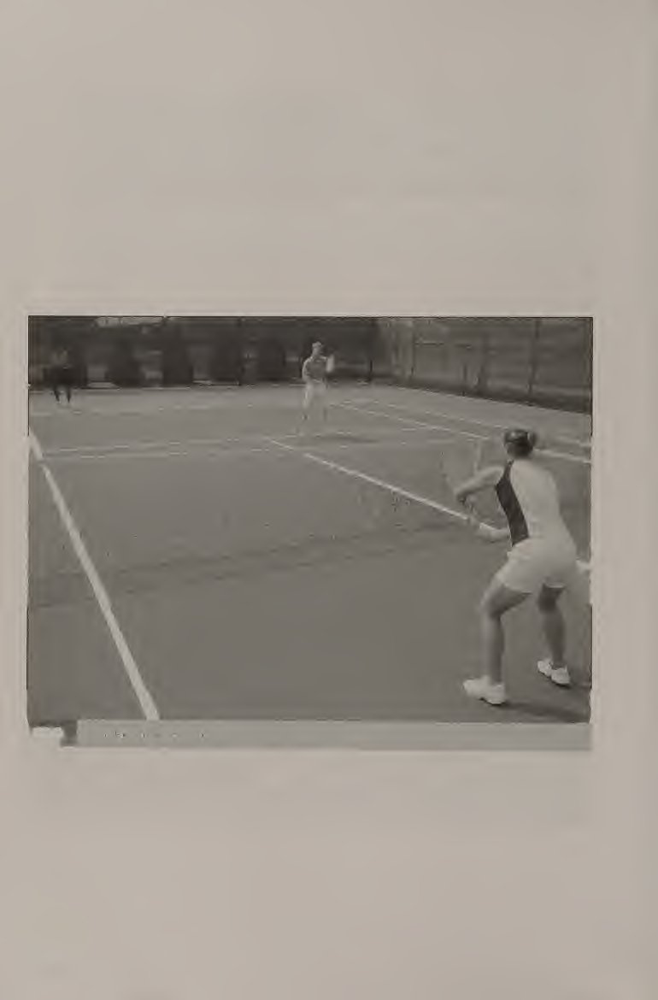
Khi bạn kết hợp các chiến thuật của mình lại với nhau và sử dụng chúng vào đúng thời điểm tốt hơn, bạn sẽ thấy rằng termis có thể khá thú vị ở một cấp độ hoàn toàn khác. Thật thú vị khi cảm thấy một chiến thuật nào đó có hiệu quả đối với một người chơi cụ thể hoặc điểm mạnh của bạn phù hợp với một chiến thuật cụ thể.
As you put your tactics together and get better at putting them to use at the right times, you will see that termis can be quite fun at a whole other level. It’s fun to feel that a certain tactic is effective against a particular player or that your strengths fit well with a specific tactic.
Chiến lược cơ bản Có một số chiến lược cơ bản mà người chơi quần vợt ở mọi cấp độ nên tuân theo. Tôi coi chúng là cơ bản vì chúng có thể và nên được tích hợp vào bất kỳ phong cách chơi nào. Chúng nên được sử dụng trong mọi trận đấu, bất kể phong cách chơi của bạn là gì—người bắt bóng, giao bóng và vô lê, toàn sân hay người ném bóng. Chơi quần vợt theo tỷ lệ phần trăm là một trò chơi theo tỷ lệ phần trăm. Người chơi chấp nhận ít rủi ro hơn (và do đó chọn những cú đánh có nhiều khả năng đi vào lưới hơn) sẽ có nhiều khả năng giành được điểm hơn.
Basic Strategies There are some basic strategies that a tennis player at any level should follow. 1 refer to them as basic because they can be and should be integrated into any style of play. They should be used in every match, no matter what your playing style—baseliner, serve and volleyer, all court, or moonballer. Playing the Percentages Tennis is a percentage game. The player who takes fewer risks (and therefore selects shots that are more likely to go in) will most likely win the point.
Điều này đặc biệt đúng ở trình độ sơ cấp và trung cấp. Nghe có vẻ đơn giản nhưng không phải lúc nào cũng dễ thực hiện. Việc cố gắng đạt được cú đánh chiến thắng là rất hấp dẫn. Thực hiện theo các khái niệm này để chơi quần vợt có tỷ lệ phần trăm cao. Đầu tiên, hãy hướng tới sự nhất quán hơn là sức mạnh và tốc độ. Điều này không thể được phóng đại. Tôi thấy có quá nhiều người chơi thực hiện cú vung vợt nhanh và phạm lỗi không cố ý vì việc tăng tốc độ của đầu vợt sẽ làm thay đổi kỹ thuật của họ.
This is especially true at the beginner and intermediate levels. It may sound simple, but it is not always easy to do. It is very tempting to try to hit the winning shot. Follow these concepts to play high-percentage tennis. First, go for consistency rather than power and speed. This cannot be overstated. 1 see too many players go for a fast-swinging shot and commit an unforced error because increasing the speed of the racket head alters their technique.
Ở hầu hết các cấp độ quần vợt, người chơi mắc ít lỗi hơn (không phải người đánh trúng nhiều người thắng hơn) sẽ thắng trận đấu. Thứ hai, thực hiện cú đánh chéo bàn, đặc biệt là thực hiện cú đánh chéo bàn (hình 11.1). Có ba lý do chính để thực hiện cú đánh chéo bàn: 1. Lưới ở giữa (36 inch) thấp hơn 6 inch so với ở các cột (42 inch). 2. Khoảng cách theo đường chéo dài hơn khoảng cách dọc (thẳng), giúp bạn có nhiều sân hơn để đánh vào.
At most levels of tennis, the player who makes fewer mistakes (not the player who hits more winners) will win the match. Second, go crosscourt, especially off a crosscourt shot (figure 11.1). There are three big reasons to go crosscourt off a crosscourt shot: 1. The net is 6 inches lower in the middle (36 inches) than at the posts (42 inches). 2. The diagonal distance is longer than the down-the-line (straight) distance, which gives you more court to hit into.
3. Việc thay đổi hướng của một cú đánh đang tới khó hơn rất nhiều so với việc đánh nó trở lại nơi nó xuất phát.
3. It is much, much more difficult to change the direction of an incoming shot than to hit it back where it came from.
Thứ ba, nhắm cao. Bạn không nên cố gắng đánh những cú đánh lướt qua lưới. Nhắm mục tiêu qua lưới ít nhất 5 feet khi thực hiện cú đánh trên mặt đất. Bạn không chỉ giảm thiểu nguy cơ đánh bóng vào lưới mà còn có thể đẩy đối thủ ra xa sân hơn, khiến đối thủ khó thực hiện cú đánh của bạn. Chia đôi góc Như đã đề cập trong chương 10, khái niệm chia đôi góc là rất quan trọng để hiểu khi ở vị trí tại vạch cuối sân (baseline).
Third, aim high. You should not try to hit shots that skim right over the net. Aim at least five feet over the net when hitting a ground stroke. Not only will you cut the risk of hitting the ball into the net, you will be able to push your opponent farther back into the court, making it difficult for your opponent to attack your shots. Bisecting the Angle As mentioned in chapter 10, the concept of bisecting the angle is very important to understand when in position at the baseline.
Bằng cách tìm ra vị trí chính giữa cho mỗi cú đánh tới, bạn sẽ đặt mình vào vị trí để có thể đạt được tỷ lệ cú đánh cao hơn. Tất nhiên, điều này không có nghĩa là từ giờ trở đi bạn sẽ có thể thực hiện được mọi cảnh quay; nó chỉ có nghĩa là bạn đang ở giữa tất cả các khả năng có thể xảy ra cho tình huống cụ thể đó. Tiếp cận lưới Vào vị trí trên lưới hơi khác một chút so với vào vị trí ở đường cuối sân. Trên lưới, thời gian trở nên quan trọng hơn vì bạn không có nhiều thời gian để phản ứng với cú đánh.
By figuring out where the middle is for each incoming shot, you put yourself in position to be able to get to a higher-percentage shot. Of course, this does not mean that from now on you will be able to get to every single shot; it just means that you are in the middle of all the possibilities for that particular situation. Approaching the Net Getting into position at the net is a bit different than getting into position at the baseline. At the net, time becomes more crucial because you do not have nearly as much of it to react to the shot.
Trên lưới, hãy chọn vị trí sao cho bạn có thể thực hiện cú đánh có khoảng cách di chuyển ngắn nhất. Tức là che chắn cú đánh từ đường biên của đối thủ. Ví dụ: nếu đối thủ của bạn chuẩn bị tấn công từ phía bên trái của họ, hãy dịch người sang bên trái một chút để bạn có thể che chắn cho cú đánh ở đường biên. Việc áp sát lưới cũng rất quan trọng vì một vài lý do. Đầu tiên, nếu bạn ở quá xa lưới, bạn sẽ phải đánh hầu hết các cú vô lê của mình lên trên lưới thay vì ở trên lưới.
At the net, position yourself so that you can cover the shot that has the shortest distance to travel. That is, cover your opponent’s downthe-line shot. For example, if your opponent is about to hit from his or her deuce side, scoot over to your left a bit so that you can cover the down-the-line shot. It also is very important to close in at the net for a couple of reasons. First, if you are too far from the net, you will have to hit most of your volleys up and over the net instead of above the net.
Ở vị trí để đánh những cú vô lê phía trên lưới là một vị trí tấn công hơn nhiều so với việc đánh chúng ở phía dưới lưới. Thứ hai, nó làm giảm thời gian đối thủ phải phản ứng với cú đánh của bạn. Tất nhiên, đối thủ của bạn có thể cố gắng đánh một cú lốp bóng qua đầu bạn. Nếu điều này xảy ra, hãy đánh một cú từ trên cao nếu có thể hoặc chạy xuống cú đánh. Nhưng đừng đứng giữa sân (gọi là đất cấm người) để tránh cú lốp bóng. Điều này đặt bạn vào thế dễ bị tổn thương vì bạn sẽ bị bắn trúng rất nhiều dây giày.
Being in position to hit volleys above the net is a much more offensive position than hitting them below the net. Second, it cuts down on the time your opponent has to react to your shot. Of course, your opponent may try to hit a lob over your head. If this does happen, hit an overhead if you can or run down the shot. But don’t stand in the middle of the court (called no man’s land) in order to avoid the lob. This puts you in a vulnerable position, as you will be hitting a lot of shots off your shoelaces.
Đánh bóng khỏi dây giày của bạn rất khó, đặc biệt là ở giữa sân, vì lưới tương đối cao đối với bạn. Cú đánh tiếp cận (hình 11.2) là cú đánh chuyển tiếp cho phép bạn đi từ đường biên cuối sân tới lưới. Cú đánh tiếp cận thường được thực hiện bằng một cú đánh yếu hoặc ngắn của đối thủ. Để có cú đánh tiếp cận hiệu quả, hãy đánh sớm để điểm tiếp xúc không quá thấp. Khía cạnh quan trọng nhất của cú đánh tiếp cận là đánh sâu và xuống dòng. Thực hiện một cú sút tiếp cận sâu không chỉ khiến đối thủ của bạn gặp khó khăn trong việc thực hiện một cú vô-lê mà còn giúp bạn có thời gian để áp sát vào lưới. Việc đi xuống hàng rất quan trọng để bạn có thể theo thẳng vào lưới vào vị trí trên lưới. Nếu bạn thực hiện một cú sút tiếp cận chéo sân, bạn không chỉ phải áp sát lưới theo đường chéo (khoảng cách xa hơn so với chạy thẳng vào) mà còn tạo cho đối thủ của bạn những góc sút đánh vô-lê. Tiếp cận các kiểu chơi bắn súng Khi chúng ta kết hợp các chiến lược cơ bản đã thảo luận, bước tiếp theo là hiểu những loại chiến lược nào bạn có thể sử dụng.
Hitting balls off of your shoelaces is difficult, especially in the middle of the court, because the net is relatively high to you. The approach shot (figure 11.2) is a transition shot that lets you come from the baseline to the net. The approach shot is usually hit off a weak or short shot from your opponent. For an effective approach shot, hit it early so that the contact point is not too low. The most important aspect of the approach shot is to hit it deep and down the line. Hitting a deep approach shot not only makes it difficult for your opponent to hit a passing shot, it gives you time to close in at the net. Going down the line is important so that you can follow straight in and get into position at the net. If you hit an approach shot cross court, you not only have to close in at the net diagonally (which is a longer distcmce than running straight in), but it also gives your opponent passing shot angles. Approach Shot Playing Types As we incorporate the basic strategies discussed, the next step is understand what types of strategies you can use.
Phần này mô tả một số kiểu chơi phổ biến (xem bảng 11.1). Người đánh bóng ở vị trí cuối sân và đánh các cú đánh trên mặt đất. Đây là một chiến lược phổ biến được sử dụng ở mọi cấp độ quần vợt. Người đánh bóng thường có những cú đánh đất đáng tin cậy và đôi khi mạnh mẽ, vừa vặn và thường không vào lưới trừ khi anh ta hoặc cô ta phải làm vậy. Người vẽ vạch cuối sân (baseline) có thể tạo ra các tình huống từ vạch cuối sân (baseline) bằng cách sử dụng độ chính xác và các góc. Người chơi cơ bản thường giỏi thực hiện các cú vô-lê và trả giao bóng.
This section describes some common playing types (see table 11.1). The baseliner stays at the baseline and hits ground strokes. This is a common strategy that is used at all levels of tennis. The baseliner usually has reliable and sometimes aggressive ground strokes, is fit, and usually does not come to the net unless he or she has to. The baseliner is able to create situations from the baseline using accuracy and angles. The baseliner is usually good at hitting passing shots and returning serves.
Người giao bóng và người đánh vô-lê, như bạn có thể đoán, giao bóng và ngay lập tức vào lưới để thực hiện cú vô lê. Loại người chơi này thường
The serve and volleyer, as you may have guessed, serves and immediately comes into the net to volley. This type of player usually
Bảng 11.1 LOẠI NGƯỜI CHƠI Loại người chơi Điểm mạnh Điểm yếu Chiến lược phản công Baseline Cú đánh trên mặt đất, sự kiên nhẫn Không thích những cú vô lê vào lưới. làm cho người đánh bóng vào lưới Giao bóng và người bắt cú vô-lê Giao bóng, vô lê, đánh đầu; rất thể thao Tính nhất quán trong các cú đánh trên mặt đất Lượt trả về khi giao bóng và dây giày của người đánh vô-lê; thùy tốt; moonballing Tất cả các sân Thành thạo tất cả các cú đánh Không có điểm yếu rõ ràng Moonballing; loại bỏ hành vi phạm tội của Moonballer Các cú đánh mặt đất, lốp bóng; rất kiên nhẫn và khỏe mạnh Không thích lưới; cú vô lê và cú đánh đầu; sự gây hấn có kiểm soát có cú giao bóng đầu tiên mạnh mẽ và cú giao bóng thứ hai đầy áp lực, cũng như một cú vô lê và cú đánh đầu tuyệt vời.
Table 11.1 PLAYER TYPES Type of player Strengths Weaknesses Counter strategies Baseliner Ground strokes, patience Doesn’t like net volleys Drop shots; make the baseliner come to the net Serve and volleyer Serve, volley, overheads; very athletic Consistency off ground strokes Hit returns at the serve and volleyer’s shoelaces; good lobs; moonballing All court Proficient in all strokes No glaring weaknesses Moonballing; take away the offense Moonballer Ground strokes, lobs; very patient and fit Doesn’t like the net; volleys and overheads Drop shots; controlled aggression has a strong first serve and a pressing second serve, as well as a great volley and overhead. This player is usually very athletic with quick reactions and good balance.
Cầu thủ này thường rất khỏe mạnh với phản ứng nhanh và giữ thăng bằng tốt. Nếu bạn muốn trở thành người giao bóng và người đánh vô-lê, hãy thay đổi cách tung cú giao bóng của bạn. Quả giao bóng phải ở phía trước bạn nhiều hơn một chút so với quả giao bóng thông thường, bởi vì bạn sẽ tiến về phía trước ngay sau khi giao bóng. Sử dụng cú giao bóng ở giữa hoặc cú giao bóng ở thân người, vì những cú giao bóng này cắt giảm các góc mà người trả giao có thể có. Thực hiện cú giao bóng sau đó thực hiện khoảng ba bước trước khi thực hiện bước tách bóng.
If you want to be a serve and volleyer, alter your service toss. The service toss should be slightly more in front of you than it would be for a normal serve, because you will be moving forward immediately after serving. Use the down-the-middle serve or the at-the-body serve, as those serves cut down on the angles that the returner may have. Hit the serve then take about three steps before executing the split step. The volley hit immediately after the serve is one of the most important shots in a serve and volley game.
Cú vô lê được thực hiện ngay sau khi giao bóng là một trong những cú đánh quan trọng nhất trong trò chơi giao bóng và vô lê. Phải luyện tập rất nhiều để cảm thấy tự tin với cú đánh này. Chống lại một người trả lại tốt, bạn sẽ đánh nó ra khỏi dây giày của mình. Điều quan trọng nhất của cú vô lê đầu tiên sau khi trả bóng là có thể đánh sâu để bạn có thể chuẩn bị cho cú vô lê tốt. Người chơi toàn sân rất linh hoạt và có thể chơi cả trò chơi cuối sân, giao bóng và cú vô-lê và thường sẽ chơi bất cứ thứ gì có lợi hơn tùy theo đối thủ, điều kiện thời tiết, bề mặt sân, v.v.
It takes a lot of practice to feel confident with this shot. Against a good returner, you will be hitting it off your shoelaces. The most important thing about the first volley after the return is to be able to hit it deep so that you can set yourself up for a good volley. The all-court player is very versatile and can play both the baseline and serve and volley game and will usually go with whatever is more advantageous according to the opponent, weather conditions, court surface, and so on.
Cầu thủ toàn sân sẽ tấn công bóng ngắn bằng cú đánh tiếp cận và thường có trình độ điều hòa cao. Cầu thủ mặt trăng đánh mọi thứ ở tốc độ cao và chậm và hiếm khi trượt. Cầu thủ bóng trăng chủ yếu sử dụng những cú lốp bóng có độ nảy cao và đánh thẳng về giữa sân. Đây là một phong cách chơi có rủi ro thấp. Một moonballer thường cực kỳ kiên nhẫn, cực kỳ khỏe mạnh và có thể hạ gục bất cứ thứ gì và mọi thứ. Thông thường, đối thủ của tay vợt mặt trăng sẽ mất kiên nhẫn và bắt đầu chấp nhận rủi ro ngày càng cao hơn, điều này chỉ khiến người chơi cầu lông mặt trăng hạnh phúc hơn.
The all-court player will attack short balls with the approach shot and usually has a high level of conditioning. The moonballer hits everything high and slow and rarely misses. The moonballer mostly uses high-bouncing lobs that are hit right back to the middle of the court. This is a low-risk style of play. A moonballer usually is extremely patient, extremely fit, and can run down anything and eveiything. Often, a moonballer’s opponent will lose patience and start taking higher and higher risks, which only makes the moonballer happier.
Chọn chiến lược Câu hỏi đầu tiên bạn nên tự hỏi mình khi cố gắng tìm ra chiến lược nào sẽ sử dụng là "Điểm mạnh và điểm yếu của tôi là gì?" Bạn có tự tin hơn vào khả năng thực hiện một số cú đánh nhất định của mình—giao bóng, trả giao bóng, thuận tay, trái tay, vô lê, đánh đầu không? Bạn coi điểm mạnh của mình là gì—tốc độ, sự kiên nhẫn hay sự kiên trì? Nếu bạn có những cú đánh mặt đất mạnh mẽ và đáng tin cậy nhưng lại không tự tin vào lưới, bạn có thể muốn sử dụng trò chơi căn bản.
Selecting a Strategy The first question you should ask yourself when trying to figure out which strategy to use is, “What are my strengths and weaknesses? Are you more confident in your ability to hit certain shots—serve, return of serve, forehand, backhand, volleys, overhead? What do you consider to be your strengths—speed, patience, or tenacity? If you have reliable and aggressive ground strokes but are not confident at the net, you may want to use the baseliner game.
Hãy nhớ đánh những cú đánh sâu và tìm kiếm những cơ hội tốt để thực hiện những cú đánh quyết liệt hơn. Nếu bạn đang đấu với một vận động viên ném biên, hãy sử dụng cú đánh thả bóng để khiến anh ta hoặc cô ta đi vào lưới, loại bỏ vận động viên ném biên khỏi yếu tố của anh ta hoặc cô ta. Một chiến lược hữu ích khác là đánh lốp bóng. Những cú đánh sâu, cao rất khó tấn công. Điều này sẽ làm nản lòng người đánh giá cơ bản. Để trở thành một người giao bóng và đánh vô-lê hiệu quả, bạn cần một cú giao bóng mạnh và chính xác. Bạn cũng cần những cú vô lê và những pha đánh đầu đáng tin cậy, quyết liệt.
Be sure to hit shots deep and look for good opportunities to hit more aggressive shots. If you are playing against a baseliner, use the drop shot to make him or her go to the net, taking the baseliner out of his or her element. Another useful strategy is to hit lobs. Deep, high shots are hard to attack. This will frustrate the baseliner. In order to be an effective serve and volleyer, you need a strong, accurate serve. You also need reliable, aggressive volleys and overheads.
Trò chơi giao bóng và vô lê rất quyết liệt và cực kỳ thể thao. Khi đấu với người giao bóng và người đánh vô-lê, hãy đánh quả trả giao bóng vào giày của người chơi sắp tới. Kiểu Mali này buộc người giao bóng và người bắt vô lê phải đánh vô-lê về phía bạn, tạo cơ hội tốt cho bạn thực hiện cú sút. Người chơi trên toàn sân cần phải tự tin ở đường cuối sân cũng như trên lưới và có thể điều chỉnh tùy theo đối thủ cũng như các điều kiện khác, chẳng hạn như thời tiết và mặt sân.
The serve and volley game is very aggressive and extremely athletic. When playing against a serve and volleyer, hit the service return at the incoming player’s shoes. This Mali force the serve and volleyer to volley up to you, giving you a good opportunity for a passing shot. The all-court player needs to be confident at the baseline as well as at the net and should be able to adjust according to the opponent and other conditions, such as weather and court surface.
Cầu thủ toàn sân sẽ tấn công cú đánh giữa sân bằng một cú đánh tiếp cận để thực hiện các cú đánh vào lưới hoặc theo cách thức hoàn toàn. Khi thi đấu với một tay vợt toàn sân, hãy đánh những cú đánh sâu và cao. Một tay vợt toàn sân Mall muốn tấn công bất kỳ cú đánh ngắn nào, vì vậy việc giữ anh ta hoặc cô ta ở xa đường cuối sân và chờ cơ hội tấn công sẽ có ích cho bạn. Cầu thủ mặt trăng có sự kiên nhẫn đáng kinh ngạc và những cú lốp bóng xuất sắc. Cầu thủ bóng trăng không ngại phải ra sân hàng giờ đồng hồ và sẽ thực hiện mọi thứ doMai và đánh một cú lốp bóng.
The all-court player looks to attack the midcourt shot either with an approach shot to set up net shots or as an outright winner. When playing against an all-court player, try hitting shots deep and high. An all-court player will want to attack any short shots, so keeping him or her well behind the baseline and waiting for your opportunity to attack should serve you well. The moonballer has Incredible patience and excellent lobs. The moonballer does not mind being out on the court for hours and will run everything down and hit a lob.
Hầu hết thời gian, Mall của đối thủ cảm thấy thất vọng và bắt đầu mắc nhiều lỗi không đáng có khi thực hiện những cú lốp bóng cao có độ rủi ro cao. Cầu thủ bóng trăng thường không muốn vào lưới và sẽ chơi cách đường cuối sân vài feet trong tư thế phòng thủ. Có hai cách để chống lại moonballer. Đầu tiên, hãy tìm cơ hội để kéo tay vợt bóng trăng vào lưới. Điều này cần phải được thực hiện cẩn thận, vì hầu hết các cú đánh của tay vợt mặt trăng đều không phù hợp để thực hiện các cú bỏ nhỏ (drop shot) xuống (quá cao và sâu).
Most of the time, the opponent will get frustrated and start making a lot of unforced errors by going for high-risk shots off high lobs. The moonballer usually does not want to go to the net and will play several feet behind the baseline in a defensive position. There are two ways to counter a moonballer. First, find an opportunity to draw the moonballer to the net. This needs to be done carefully, as most shots the moonballer hits are not suitable for hitting drop shots off of (too high and deep).
Chờ bóng không quá cao hoặc không quá sâu, đánh một cú thả bóng và khiến tay vợt mặt trăng chơi mạng. Thứ hai, tung cú vô lê ở giữa sân và tấn công. Thay vì để cho quả cầu của tay vợt mặt trăng nảy lên, hãy đợi một quả không quá khó để xử lý. Đánh nó như một cú vô lê tiếp cận và đi vào lưới. Cầu thủ mặt trăng rất có thể sẽ đánh một cú lốp bóng khác. Khi anh ấy hoặc cô ấy làm vậy, hãy đánh một cú đập từ trên cao. Các tình huống chiến thuật khác Sử dụng điều kiện thời tiết và sân đấu như một phần trong kế hoạch chiến lược của bạn. Chơi trong nhà, nơi nắng và gió không phải là một yếu tố, là lý tưởng cho kiểu tay vợt tấn công (giao bóng và vô lê, toàn sân, người đánh bóng) vì tấn công đòi hỏi độ chính xác.
Wait for a ball that is not too high or too deep, hit a drop shot, and make the moonballer play the net. Second, hit a midcourt volley and attack. Instead of letting the moonballer’s lobs bounce, wait for one that will not be too difficult to handle. Hit it as a volley approach shot and come into the net. The moonballer will most likely hit another lob. When he or she does, hit an overhead smash. Other Tactical Situations Use the weather and court conditions as part of your strategy planning. Playing indoors, where the sun and wind would not be a factor, is ideal for an attacking type of player (serve and volleyer, all-court, baseliner) because attacking requires precision. Without the sun and the wind, one may try to take more risks than when playing outdoors.
Không có nắng và gió, người ta có thể gặp nhiều rủi ro hơn khi chơi ngoài trời. Mặt trời có thể là yếu tố chính trong một trận đấu ngoài trời. Khi đối diện với mặt trời, đối thủ của bạn có thể không hung hãn trong giao bóng như thường lệ. Hãy sử dụng điều này để làm lợi thế cho bạn và tấn công quả giao bóng. Một chiến thuật tốt khác để sử dụng nếu đối thủ của bạn đang đối mặt với mặt trời là sử dụng cú lốp bóng thường xuyên, thậm chí có thể vào lưới để tấn công mạnh mẽ và bất ngờ sau một cú lốp bóng tốt.
The sun can be a major factor in an outdoor match. When facing the sun, your opponent might not be able to be as aggressive on the serve as usual. Use this to your advantage and attack the serve. Another good tactic to use if your opponent is facing the sun is to use the lob frequently, maybe even get into the net for an aggressive and surprise attack after a good lob. If you are facing the sun and encounter a lob, it might be a better idea to let it bounce in order to lessen the degree of difficulty.
Nếu bạn đang quay mặt về phía mặt trời và gặp phải một quả bóng, có lẽ nên để nó nảy lên để giảm bớt độ khó. Trong điều kiện có gió, hãy chấp nhận ít rủi ro hơn bình thường. Hãy nhắm vào giữa sân thay vì vào sâu. Sử dụng topspin để bóng bay cao qua lưới nhưng lại rơi xuống sân. Khi thi đấu trên sân cỏ, người giao bóng và vô lê có thể có lợi thế hơn vì người giao bóng và vô lê không phải đánh nảy.
In windy conditions, take fewer risks than usual. Aim for the middle of the court rather than the deep comers. Use topspin to make the ball go high over the net but come down into the court. When playing on grass, a serve and volley player may have an advantage because the serve and volleyer does not have to play the bounce. Bounces are less predictable and skid more on grass than on other surfaces.
Các cú nảy khó dự đoán hơn và trượt trên cỏ nhiều hơn so với các bề mặt khác. Trên sân đất nện, vận động viên ném biên có thể có lợi thế hơn vì sân đất nện có xu hướng làm chậm tốc độ trận đấu, vô hiệu hóa các cú đánh nhanh. Tốc độ của sân cứng nằm giữa sân tennis cỏ và sân đất nện. Hãy thử NĂM VÀ NGẮN Đây là bài tập bắn tiếp cận dành cho hai người chơi. Bài tập này sẽ giúp bạn thực hành vào vị trí để thực hiện những cú đánh tiếp cận và áp sát vào lưới để thực hiện cú vô lê.
On clay courts, a baseliner may have the advantage, as clay tends to slow down the speed of play, neutralizing fast shots. The speed of hard courts falls between grass and clay tennis courts. Give it a go FIVE AND SHORT This is a two-player, approach shot drill. This drill will help you practice getting into position to hit approach shots and close into the net for the volley. Both players start at the baseline.
Cả hai người chơi đều bắt đầu ở đường cuối sân. Một người chơi
One player Give it a go: Singles Tactics hits a ball into play.
Hãy thử đi: Chiến thuật đơn đánh một quả bóng vào cuộc. Đánh năm cú đánh cơ bản, sau đó đánh cú ngắn thứ sáu, gần đường giao bóng. Cú đánh thứ bảy phải là cú đánh tiếp cận dọc biên ngang. Áp sát lưới sau khi bạn thực hiện cú đánh tiếp cận và ghi điểm. PHỤC VỤ VÀ BÓNG CHUYỆN I Bài tập này có thể được thực hiện một mình. Trong bài tập này, bạn sẽ thực hành giao bóng, tiến về phía trước và thực hiện bước tách bóng khi giao bóng và vô lê. Giả sử tư thế bắt đầu bình thường cho một cú giao bóng.
Hit five baseline rally shots, then hit the sixth one short, near the service line. The seventh shot should be an approach shot hit down the line. Close into the net after you’ve hit the approach shot and play the point out. SERVE AND VOLLEY I This drill can be done alone. In this drill, you will practice serving, moving forward, and executing the split step for the serve and volley. Assume the normal starting stance for a serve.
Tung bóng ra xa phía trước bạn hơn bình thường. Trước khi tiếp xúc, phần thân trên của bạn phải nghiêng về phía sân. Sau khi tiếp xúc, hãy bước nhanh ba bước vào sân, sau đó thực hiện bước tách đôi. Bạn sẽ có thể nói về dòng dịch vụ. Lặp lại 12 lần cho cả hai bên và bên quảng cáo. PHỤC VỤ VÀ BÓNG CHUYỆN II Đây là bài tập dành cho hai người chơi. Một người chơi là người giao bóng, người còn lại là người quay lại. Người giao bóng sử dụng các quy trình tương tự như trong Giao bóng và Cú vô-lê I.
Toss the ball farther out in front of you than normal. Before contact, your upper body should be leaning into the court. After contact, take three quick steps into the court, then execute a split step. You should be able to make it to about the service line. Repeat 12 times for both the deuce and ad sides. SERVE AND VOLLEY II This is a two-player drill. One player is the server, the other is the returner. The server uses the same procedures as in Serve and Volley I.
Người trả giao bóng trả lại quả giao bóng, người giao bóng tung cú vô lê, sau đó các đấu thủ đánh điểm. Lặp lại 12 lần cho cả bên deuce và ad, sau đó đổi vai. TRÒ CHƠI MOONBALLER Trong trò chơi đối tác được sửa đổi này, cả hai người chơi đều chơi cả bộ với tư cách là tay vợt mặt trăng. Nếu đánh trúng một quả bóng ngắn hoặc yếu, nó có thể bị tấn công. Người chơi bị mất một điểm do lỗi không thể thực hiện được sẽ mất hai điểm. Chơi một bộ thông thường bằng cách sử dụng tính điểm tiêu chuẩn. TRÒ CHƠI BÓNG ĐÁ Trong trò chơi đối tác được sửa đổi này, một người chơi là tay vợt bóng trăng trong khi người chơi kia cố gắng áp dụng các chiến lược phản công (chờ cơ hội để kéo tay vợt bóng trăng vào lưới hoặc thực hiện một cú lốp bóng từ trên không như một cú vô lê và theo nó vào lưới).
The returner returns the serve, the server hits a volley, then the players play the point out. Repeat 12 times for both the deuce and ad sides, then switch roles. MOONBALLER GAME In this modified partner game, both players play an entire set as the moonballer. If a short or weak ball is hit, it may be attacked. A player who loses a point due to an unforced error loses two points. Play a regular set using standard scoring. COUNTER MOONBALLER GAME In this modified partner game, one player is the moonballer while the other player tries to apply the counter strategies (waiting for an opportunity to draw the moonballer into the net or taking a lob out of the air as a volley and following it in to the net). Switch roles after every two games until a set is won.
Đổi vai sau mỗi hai ván cho đến khi thắng một set.
Give it a go: Singles Tactics APPLY A STRATEGY
Hãy cho điểm 0o: Chiến thuật Smeies ÁP DỤNG CHIẾN LƯỢC Đây là một trò chơi được sửa đổi dành cho hai người chơi. Trong bài tập này, mỗi người chơi chọn một kiểu chơi (người đánh bóng, người giao bóng và người đánh vô-lê, người chơi toàn sân hoặc người ném bóng mặt trăng). Chơi một bộ, cố gắng kết hợp phong cách chơi cụ thể đồng thời cố gắng chống lại phong cách chơi của đối thủ. Điểm đặt Khi bạn phát triển thành một người chơi hoàn thiện hơn với kỹ thuật âm thanh, chiến thuật sẽ trở thành một phần quan trọng trong trò chơi của bạn. Quần vợt có tỷ lệ cược cao là một phần quan trọng trong trận đấu của bất kỳ người chơi nào.
This is a two-player modified game. In this drill, each player selects a playing type (baseliner, serve and volleyer, all-court player, or moonballer). Play a set, trying to incorporate the particular style of play while also trying to counter your opponent’s style of play. Set Point As you develop into a more complete player with sound technique, tactics will become an important part of your game. High-percentage tennis is an important part of any player’s game.
Phong cách chơi cụ thể của bạn phải dựa trên điểm mạnh và điểm yếu, sự tự tin của bạn cũng như điểm mạnh và điểm yếu của đối thủ. Hãy thử nghiệm nhiều phong cách khác nhau để xem phong cách nào phù hợp nhất với bạn. Điều này có thể thay đổi khi bạn phát triển với tư cách là một người chơi. Trong chương tiếp theo, chúng ta sẽ đề cập đến trò chơi đánh đôi. Đánh đôi là một trò chơi rất thú vị, có điểm nhanh. Việc bạn có một đồng đội trên sân giúp cho đội của bạn có thể chơi nhiều trận, giống như trong các môn thể thao đồng đội khác.
Your particular style of play should be based on your strengths and weaknesses, your confidence, and your opponent’s strengths and weaknesses. Experiment with different styles to see what works best for you. This may change as you evolve as a player. In the next chapter, we cover the doubles game. Doubles is a very exciting game, with quick points. The fact that you have a teammate on the court makes it possible for your team to mn plays, as in other team sports.
Bị bệnh
Ill
Chương 12: Đội hình đôi & Thống trị lưới
CHƯƠNG Chiến thuật Đôi là một trò chơi năng động và thú vị. Nó liên quan đến việc chơi nhanh, tích cực và chấp nhận rủi ro vào đúng thời điểm. Theo cách này, trận đấu đôi rất khác so với trận đấu đơn. Trước khi bắt đầu chơi đánh đôi, bạn cần hiểu một số điều quan trọng về trò chơi. Đầu tiên bạn cần hiểu rõ vai trò của từng vị trí trên sân và đội hình đánh đôi cơ bản. Tiếp theo, chúng ta xem xét ba đội hình khác. Cuối cùng, chúng tôi đề cập đến một số chiến lược giúp bạn và đối tác đánh đôi của bạn chiếm lĩnh sân đấu một cách nhanh chóng.
Doubles Tactics
Doubles is a dynamic and exciting game. It involves playing quick, aggressive points and taking good risks at the right time. In this way, the doubles game is very different from the singles game. Before you begin playing doubles, you need to understand some important things about the game. First, you need to understand the role of each position on the court and the basic doubles formation. Next, we look at three other formations. Finally, we cover some strategies to help you and your doubles partner take the court by storm.
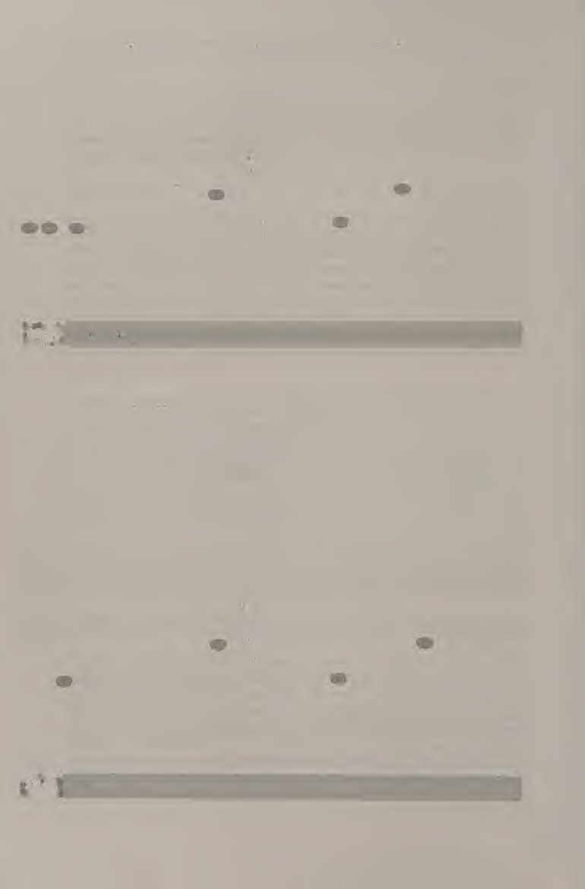
Bạn sẽ thấy rằng việc đánh đôi có thể rất thú vị. Với tinh thần đồng đội là một yếu tố không thể thiếu của trò chơi, việc chọn một đối tác có thể giúp bạn phấn chấn khi bạn cần hoặc giúp bạn bình tĩnh lại khi cần và ngược lại, là một phần quan trọng để có được sự vui vẻ và hòa hợp.
You will find that doubles can be a whole lot of fun. With teamwork as an integral element of the game, choosing a partner that can psyche you up when you need it or calm you down when you need to, and vice versa, is an important part of playing well and having fun.
Vị trí và vai trò Trong trò chơi đánh đôi, bạn có bốn người chơi trên sân: người giao bóng, đồng đội của người giao bóng, người trả giao bóng và đồng đội của người trả giao bóng (hình 12.1). Mỗi người chơi có một vai trò quan trọng trong việc thực hiện thành công điểm (bảng 12.1). Bảng 12.1 VAI TRÒ ĐỐI VỚI NGƯỜI CHƠI ĐÔI Bên giao bóng Bên trả lại Piayer Roie Piayer Roie Máy chủ Nhận được tỷ lệ giao bóng đầu tiên cao trong Giao bóng 6 phút ở giữa hoặc cho Người trả giao bóng Nhận tỷ lệ trả giao bóng cao trong Trả giao chéo sân Đối tác của người giao bóng Hãy quyết liệt Giữ chân di chuyển Cắt đứt mọi cú vô lê trong tầm tay Săn trộm Đối tác của người trả giao Gọi giao bóng Hành động như một "thủ môn"
Positions and Roles In the doubles game, you have four players on the court: the server, the server’s partner, the returner, and the returner’s partner (figure 12.1). Each player has an important role to play in the successful execution of the point (table 12.1). Table 12.1 ROLES FOR DOUBLES PLAYERS Serving side Returning side Player Role Player Role Server Get a high percentage of first serves in Serve 6om the middle or to the returner’s backhand Returner Get a high percentage of returns in Return crosscourt Server’s partner Be aggressive Keep the feet moving Cut off any volleys within reach Poach Returner’s partner Call the serve Act as a “goalie”
Bên giao bóng Người giao bóng đứng phía sau đường cuối sân ở giữa điểm giữa và đường biên đơn (hình 12.2). Bởi vì trong trò chơi đôi, các con hẻm nằm trong và sân được bao phủ bởi hai người chơi, người giao bóng sẽ đứng ở một vị trí khác so với khi chơi đơn. Công việc quan trọng nhất của người giao bóng là thực hiện thành công tỷ lệ giao bóng đầu tiên cao. Công việc phụ của người giao bóng là cố gắng đưa quả giao bóng xuống giữa hoặc tới phía trái tay của người trả giao.
The Serving Side The server stands behind the baseline midway between the centermark and the singles sideline (figure 12.2). Because in the doubles game the alleys are in and the court is covered by two players, the server stands in a different place than he or she would if playing singles. The server’s most important job is to successfully complete a high percentage of first serves. The server’s secondary job is to try to get the serve down the middle or to the returner’s backhand.
Cú giao bóng ở giữa là một công cụ quan trọng trong trò chơi đánh đôi vì nó làm giảm các góc có sẵn cho người trả giao, do đó làm cho đối tác của người giao bóng hiệu quả hơn.
The downthe-middle serve is an important tool in the doubles game because it reduces the angles available to the returner, thereby making the server’s partner more effective.
Đối tác của người giao bóng (hình 12.3) phải đứng giữa ô dịch vụ. Công việc của đối tác người giao bóng là cố gắng đánh bất cứ thứ gì trong tầm tay. Hãy nhớ rằng trong các cú vô lê đôi được ưa chuộng hơn các cú đánh trên mặt đất, vì vậy nếu bạn có thể đánh được một cú vô lê, hãy đánh nó! Mục tiêu tốt là chân của đối tác trả về. Bất kỳ cú đánh nào trúng chân đều rất khó để đánh trả. Một công việc quan trọng khác đối với đối tác của người giao bóng là giữ cho đôi chân luôn di chuyển. Điều này không chỉ giúp đối tác của người giao bóng luôn hoạt động và sẵn sàng cho bất kỳ cú đánh nào mà còn giúp đối thủ biết về sự hiện diện của anh ta hoặc cô ta.
The server’s partner (figure 12.3) should stand in the middle of the service box. The server’s partner’s job is to try to hit anything within reach. Remember that in doubles volleys are more desirable than ground strokes, so if you can hit a volley, hit it! A good target is the returner’s partner’s feet. Any shot hit at the feet is very tough to return. Another important job for the server’s partner is to keep the feet moving. Not only does this keep the server’s partner active and ready for any shot, but it keeps the opponents aware of his or her presence.
Bên trả bóng Người trả bóng (hình 12.4) đứng ở vị trí trả bóng cơ bản gần vạch cuối sân (baseline), bên trong đường biên đánh đơn. Công việc số một của người trả giao bóng là đưa quả trả về trở lại. Công việc thứ hai của người trả giao bóng là thực hiện một cú đánh chéo sân để giữ bóng tránh xa đối tác của người giao bóng. Đối tác của người trả giao cầu đứng ở vạch giao cầu, gần vạch giao cầu ở giữa (hình 12.5). Công việc đầu tiên của đối tác trả giao bóng là gọi quả giao bóng, vì anh ấy hoặc cô ấy có tầm nhìn tốt nhất về đường giao bóng.
The Return Side The returner (figure 12.4) stands in the basic return position near the baseline, inside the singles sideline. The returner’s number one job is to get the return back and in. The returner’s second job is to hit a crosscourt shot to keep the ball away from the server’s partner. The returner’s partner should stand at the service line, close to the center service line (figure 12.5). The returner’s partner’s first job is to call the serve, since he or she has the best view of the service line.
Công việc thứ hai của người trở về khó khăn hơn một chút. Nếu người trả bóng không thể thực hiện cú trả bóng chéo sân đủ xa để tránh được đồng đội của người giao bóng, thì đồng đội của người trả giao bóng phải cố gắng đánh bóng ra khỏi dây giày. Đây là một cú đánh khó nhưng nếu luyện tập thì đây là một tư thế thú vị. Tôi gọi vị trí này là thủ môn vì đối tác của người trả bóng không thể để bất cứ thứ gì vượt qua, giống như thủ môn trong môn khúc côn cầu. Các quy tắc về ranh giới và luân chuyển đôi tương tự như các quy tắc đánh đơn với một vài ngoại lệ.
The returner’s partner’s second job is a little tougher. If the returner cannot get the return crosscourt far enough to avoid the server’s partner, the returner’s partner must try to hit the ball back in off the shoelaces. This is a tough shot but, with practice, it is a fun position to be in. 1 call this position the goalie because the returner’s partner cannot let anything pass, just like a goalie in hockey. Boundaries and Rotation Doubles rules are similar to singles rules with a couple of exceptions.
Ranh giới hơi khác một chút, vì các con hẻm là đường vào trong cho tất cả các cú đánh đôi ngoại trừ giao bóng. Quả giao bóng vẫn phải nằm trong ô giao bóng, giống như trong đánh đơn. Về mặt luân phiên giao bóng, giả sử người chơi A và B đang đấu với C và D. Người chơi A giao bóng ở ván thứ nhất, tiếp theo là người chơi C, sau đó đến người chơi B, rồi đến người chơi D. Vòng quay đó (A, C, B, D) phải được duy trì trong suốt cả hiệp. Khi bắt đầu hiệp đấu mới, đội đánh đôi có thể chọn thay đổi thứ tự giao bóng nếu muốn.
The boundaries are a bit different, as the alleys are inbounds for all shots in doubles except for the serve. The serve must still go in the service boxes, just as in singles. In terms of service rotation, let’s say players A and B are playing against C and D. Player A serves out the first game, followed by player C, then player B, then player D. That rotation (A, C, B, D) must be kept throughout the whole set. At the start of a new set, a doubles team can choose to change the order of serve if they want to.
Khi trả giao bóng, bạn phải luôn trả giao bóng từ cùng một phía (ad hoặc deuce) trong cả hiệp. Xin nhắc lại, khi bắt đầu hiệp mới, bạn và đối tác của mình có thể quyết định đổi bên nhưng bạn phải quay lại từ bên đó trong toàn bộ hiệp. Đội hình đánh đôi Đội hình một lên, một lùi (hình 12.6) là vị trí xuất phát cơ bản của hầu hết các điểm nhân đôi. Công việc chính của tay vợt phía sau là giữ bóng trong cuộc, giữ bóng cách xa tay vợt đối phương trên lưới (giữ bóng chéo sân) và đánh vào chân đối phương nếu họ tiến vào lưới.
When returning serve, you must always return serve from the same side (ad or deuce side) for the whole set. Again, at the start of a new set, you and your partner may decide to switch sides but you must return from that side for the entire set. Doubles Formations The one-up, one-back formation (figure 12.6) is the basic starting position of most doubles points. The back player’s main job is to keep the ball in play, keep the ball away from the opposing player at the net (keep it crosscourt), and hit to the opponent’s feet if they advance to the net.
Đội hình này phát triển trước khi bóng được đưa vào cuộc. Thường thì cả bên giao bóng và bên trả bóng đều ở trong đội hình một đối một, một hậu. Nhiệm vụ của người chơi phía trên sẽ quyết liệt hơn một chút. Vì tay vợt này đang ở vị trí đánh vô-lê nên tay vợt này nên tấn công bất cứ khi nào có thể. Hãy nhớ giữ cho đôi chân của bạn di chuyển trong thời gian thực hiện để có thể vồ bóng bất cứ lúc nào. Ba đội hình khác có thể được sử dụng khi chơi đánh đôi là đội hình cả hai, đội hình Úc (còn được gọi là đội hình 1) và đội hình cả hai hậu vệ.
This formation develops before the ball is put into play. Often both the serving and returning sides are in one-up, one-back formations. The up player’s task is a bit more aggressive. Since this player is in the volley position, this player should attack whenever possible. Remember to keep your feet moving during the point so that you can pounce on a ball at any time. Three other formations that can be used when playing doubles are the both-up formation, the Australian formation (also known as the 1 formation), and the both-back formation.
Đội hình một lên, một lùi.
One-up, one-back formation.
Trong đội hình cả hai người (hình 12.7), cả hai tay vợt của cùng một đội đều ở trên lưới. Sẽ là trái quy định nếu bắt đầu theo cách này khi bắt đầu một điểm, nhưng sau khi giao bóng, người giao bóng hoặc người trả giao bóng được phép tiếp cận lưới để tham gia cùng đồng đội của mình. Đây là một đội hình đáng gờm. Đối với đội đối phương, bức tường này sẽ rất khó xuyên thủng. Giữ khoảng cách này không đổi Đội hình cả hai. Nếu bạn và đối tác của bạn có những cú vô lê và đánh đầu tốt, đội của bạn chắc chắn nên thực hành đội hình cả hai.
In the both-up formation (figure 12.7), both players on the same team are at the net. It would be against the rules to start this way at the beginning of a point, but after the serve either the server or the returner is allowed to approach the net to join his or her partner. This is a formidable formation. For the opposing team, this wall will be very hard to penetrate. Keep this distance constant Both-up formation. If you and your partner have good volleys and overheads, your team should definitely practice the both-up formation.
Để biến đây thành một chiến thuật hiệu quả, người chơi phải di chuyển cùng nhau cả hai bên và lên và lùi. Đối với các chuyển động từ bên này sang bên kia, hãy nhớ hai điều: cố gắng giữ khoảng cách giữa bạn và đối tác không đổi và di chuyển cùng với quả bóng. Điều này được gọi là theo dõi. Ví dụ: nếu đối tác của bạn di chuyển sang trái một chút vì bóng nằm ở phía bên kia sân, bạn cũng nên di chuyển sang trái một chút. Đối với các chuyển động lên và lùi, hãy cố gắng giữ thăng bằng với nhau và tiến về phía trước khi ở trong tình huống tấn công.
To make this an effective tactic, players must move together both side-to-side and up and back. For the side-to-side movements, remember two things: try to make the distance between you and your partner constant, and move together with the ball. This is called tracking. For example, if your partner moves a bit to the left because the ball is on the deuce side on the other side of the court, you should move a bit to the left as well. For up and back movements, try to stay even with each other and move forward when in an offensive situation.
Lùi lại một chút khi ở trong tình thế phòng thủ. Đội hình Australia (hoặc đội hình I) (hình 12.8) được đội giao bóng sử dụng khi bắt đầu một điểm. Đây là một đội hình tích cực. Nó gây ra rất nhiều áp lực cho người trả lại để nhận được tiền lãi qua đối tác của người giao bóng.
Move slightly back when in a defensive situation. The Australian formation (or I formation) (figure 12.8) is used by the serving team at the start of a point. This is an aggressive formation. It puts a lot of pressure on the returner to get the return past the server’s partner.
Máy chủ bắt đầu ở vị trí giao bóng đơn. Đối tác của người giao bóng có hai lựa chọn: bắt đầu cúi người ở vạch giao bóng ở giữa lưới hoặc bắt đầu ở tư thế sẵn sàng thông thường đối diện với đối tác của người trả giao bóng. Sau khi quả giao bóng được thực hiện, đối tác của người giao bóng sẽ đi đến bên quảng cáo hoặc bên lừa đảo theo kế hoạch của đội giao bóng trước khi thực hiện quả giao bóng. Máy chủ sau đó cần phải bao phủ phía bên kia. Đội hình này rất hữu ích khi đội của bạn có người giao bóng tốt.
The server starts in the singles serving position. The server’s partner has two options: start crouched at the center service line nccir the net or start in a regular ready position across from the returner’s partner. After the serve is hit, the server’s partner goes to either the ad side or deuce side as preplanned by the serving team before the serve is hit. The server then needs to cover the other side. This formation is useful when your team has a good server.
Nó gây áp lực rất lớn cho đội trở về. Đây là một đội hình tuyệt vời để sử dụng để chống lại một người trả bóng giỏi ở đường chéo vì nó buộc người trả bóng phải đánh nó dọc theo đường biên. Nó cũng là một đội hình hữu ích khi bạn muốn thay đổi nó một chút, mang đến cho đối thủ một diện mạo mới và điều gì đó đáng suy ngẫm. Đội hình quay về sử dụng cam cho cả hai lưng (hình 12.9). Trong đội hình này, cả hai tay vợt của đội lượt về đều xuất phát ở đường cuối sân.
It puts a tremendous amount of pressure on the returning team. It is an excellent formation to use against a good crosscourt returner because it forces the returner to hit it down the line. It is also a useful formation when you want to change it up a bit, give your opponents a new look and something to think about. The both-back formation (figure 12.9) cam be used by the returning team. In this formation, both players on the returning team start at the baseline.
Mặc dù đội hình này mang tính chất phòng thủ nhưng đôi khi nó có thể hữu ích. Đội hình này được sử dụng khi một hoặc cả hai người quay lại đều gặp khó khăn trong việc giữ người quay lại khỏi đối tác của người giao bóng. Điều này có thể là do cú giao bóng rất mạnh hoặc do đối tác của người giao bóng rất hung hãn. Đội hình này giúp người quay lại tránh xa một số áp lực để tránh xa đối tác của người giao bóng. Thông thường khi bóng được đánh tới đối tác của người giao bóng, người chơi đó sẽ thực hiện cú đẩy bóng khá dễ dàng. Tuy nhiên, nếu đội lùi về sử dụng đội hình cả hai hậu vệ, họ sẽ có lợi thế hơn để tranh giành và cố gắng vô hiệu hóa điểm số.
Although this formation is somewhat defensive, it can come in handy at times. This formation is used when one or both returners are having difficulty keeping the return away from the server’s partner. This may be because the serve is very strong or because the server’s partner is very aggressive. This formation takes some pressure away from the returner to keep it away from the server’s partner. Usually when the ball is hit to the server’s partner, that player has a fairly easy putaway shot. However, if the both-back formation is used by the returning team, they are in a better position to scramble and try to neutralize the point. Doubles Strategies
Chiến lược đánh đôi Những chiến lược đánh đôi cơ bản cụ thể này rất quan trọng để chơi đánh đôi thành công ở mọi cấp độ. Chiến lược đánh đôi hơi khác so với chiến lược đánh đơn. Sự khác biệt cơ bản nhất là tính quyết liệt và cờ bạc đúng thời điểm là rất quan trọng trong đánh đôi, trong khi ở đánh đơn, sự nhất quán là điều then chốt. Có một đồng đội trên sân cùng bạn cũng giúp bạn dễ dàng bao quát sân hơn. Giao tiếp Giao tiếp trong các điểm là một phần quan trọng để đánh đôi thành công.
These basic doubles-specific strategies are very important to successful doubles play at any level. Doubles strategies are slightly different from singles strategies. The most fundamental difference is that aggressiveness and gambling at the right times are very important in doubles, whereas in singles, consistency is key. Having a partner on the court with you also makes it easier to cover the court. Communication Communication during points is an important part of playing successful doubles.
Nếu một quả bóng nằm giữa hai người chơi, một người chơi phải hét lên, “Của tôi!” để cả hai người chơi đều biết chính xác chuyện gì đang xảy ra. Lệnh ngắn gọn, một từ có tác dụng tốt nhất khi giao tiếp trên sân. Bạn không muốn cả hai tay vợt đi bóng cùng một lúc hoặc không có tay vợt nào đi bóng. Điều này có thể xảy ra khi cả hai người chơi đều ở trên lưới hoặc khi cả hai người chơi ở vạch cuối sân để thực hiện cú đánh nền. Nó cũng có thể xảy ra trong tình huống một đối thủ, một hậu vệ khi bóng đi vào giữa sân.
If a ball is between two players, one player should yell, “Mine!” so that both players know exactly what is going on. Short, one word commands work best when communicating on the court. You don’t want both players going for the ball at the same time, or neither player going for the ball. This can happen on an overhead when both players are at the net or when both players are at the baseline for a ground stroke. It also can happen in a one-up, one-back situation when the ball comes down the middle.
Điều tồi tệ nhất có thể xảy ra trong một trận đấu đôi là bóng đi giữa cả hai người chơi khi họ nhìn nhau mà không biết liệu người kia có đánh nó hay không. Giao tiếp giữa các điểm cũng quan trọng như giao tiếp trong các điểm. Các nghiên cứu đã chỉ ra rằng các đội đoàn kết với nhau giữa các điểm sẽ thành công hơn. Những người chơi nói chuyện với nhau, ngay cả khi đó chỉ là câu nói đơn giản “Chúng ta bắt đầu thôi!” có nhiều khả năng chơi theo đội hơn là hai cá nhân.
The worst that can happen in a doubles game is for the ball to go between both players as they look at each other, not knowing whether the other one is going to hit it or not. Communication between points is just as important as communication during points. Studies have shown that teams that come together between points are more successful. Players who talk to each other, even if it is a simple “Here we go!” are more likely to play as a team than as two indivlducils.
Bạn không cần phải giải quyết ý nghĩa của cuộc sống khi bạn đến với nhau giữa các điểm. Tuy nhiên, điều quan trọng là phải liên hệ với đối tác của bạn và đảm bảo rằng họ vẫn ổn. Đôi khi một đối tác có thể nghĩ rằng đối tác kia phát điên vì sương mù, nhưng trong hầu hết các trường hợp, điều đó hoàn toàn không đúng! Không đến được với nhau giữa các điểm chỉ làm trầm trọng thêm những suy nghĩ như vậy.
You do not have to solve the meaning of life when you come together between points. It is important, however, to check in with your partner and make sure he or she is okay. Sometimes one partner may think that the other is mad about a mistsLke, but in most cases that is not true at all! Not coming together between points only exacerbates such thoughts.
Săn trộm Săn trộm (hình 12.10) là một hành động hung hãn của người trên mạng. Người ở lưới băng qua phía bên kia sân (deuce to ad hoặc ngược lại) để thực hiện cú vô lê. Điều này thường xảy ra sau khi giao bóng ở lượt trả giao bóng hoặc trong tình huống một đối thủ, một hậu vệ. 12.10 Săn trộm. Khi đối tác của người giao bóng giành quyền trả bóng, việc di chuyển thường được đội giao bóng lên kế hoạch trước. Nó có thể được lên kế hoạch trước bằng lời nói hoặc sử dụng tín hiệu tay. Đối tác của người giao bóng xác định xem có nên săn trộm hay không.
Poaching Poaching (figure 12.10) is an aggressive move by the net person. The person at the net crosses to the other side of the court (deuce to ad or vice versa) to hit a volley. This usually happens after the serve off the return or in a one-up, one-back situation. 12.10 Poaching. When the server’s partner poaches off the return, the move is usually preplanned by the serving team. It can be preplanned verbally or with the use of hand signals. The server’s partner determines whether to poach.
Nếu đội của bạn sử dụng tín hiệu (hình 12.11), điều quan trọng là phải ra hiệu cho mỗi lần giao bóng, nếu không đối thủ của bạn sẽ phát hiện ra rằng bạn chỉ ra hiệu khi săn trộm. Khi đối tác của người giao bóng tỏ ra cởi mở, điều đó có nghĩa là họ đang săn trộm. Nắm tay khép lại có nghĩa là người đó không săn trộm. Ngón trỏ chỉ ra hàng giả. Một cú giả đúng lúc sẽ khiến người trả bóng nghĩ rằng bạn đang đi và có thể khiến người trả bóng đánh bóng dọc biên, đây là một cú đánh khó hơn.
If your team uses signals (figure 12.11), it is important to signal for every serve or else your opponents will catch on to the fact that you only signal when poaching. When the server’s partner shows an open hand, it means he or she is poaching. A closed fist means he or she is not poaching. An index finger indicates a fake. A well-timed fake will make the returner think you are going and might make the returner hit the ball down the line, which is a more difficult shot.
Ngay cả khi người trả bóng đánh trúng được, bạn vẫn ở đó để thực hiện cú vô lê.
Even if the returner manages to hit it, you are there for the volley.
Khi săn trộm trong một điểm, người lưới sẽ vượt qua và đánh một cú vô lê từ một cú đánh mặt đất thông thường. Điều này thường xảy ra khi hai người ở cuối sân đang thực hiện một pha giao bóng chéo sân. Khi người lưới săn trộm trong bất kỳ tình huống nào, điều quan trọng là đối tác của người lưới phải che chắn cho đối phương. Chuyển đổi Chuyển đổi (hình 12.12) xảy ra khi có ít nhất một người ở trên lưới, một cú lốp bóng được đánh qua đầu người đó và người đó không thể đánh một cú lốp bóng qua đầu của người đó.
When poaching during a point, the net person will cross and hit a volley off a regular ground stroke. This usually happens when the two baseline people are engaged in a crosscourt rally. When the net person poaches in any situation, it is important for the net person’s partner to cover the other side. Switching Switching (figure 12.12) occurs when at least one person is at the net, a lob is hit over the net person’s head, and the net person cannot hit an overhead off it.
Thay vì tay vợt lưới chạy lại và cố gắng đánh bóng, đồng đội phải chịu trách nhiệm về bóng bằng cách di chuyển qua trong khi tay vợt lưới chuyển sang phía bên kia. Nếu cả hai đấu thủ đều đã ở trên lưới thì đấu thủ không ở phía có bóng phải chạy chéo về phía bóng trong khi người ở lưới chuyển sang phía bên kia. Giao tiếp nhanh và to là một phần quan trọng của quá trình chuyển đổi. Ngay khi người chơi nhận ra tình huống hiện tại, họ nên hét lên, “Đổi!” Chuyển đổi.
Instead of the net player running back and trying to hit the ball, the partner should take responsibility for the ball by moving over while the net person switches to the other side. If both players are already at the net, the player who is not on the ball side must run diagonally to the ball while the net person switches to the other side. Quick and loud communication is an important part of switching. As soon as a player realizes the situation at hand, she or he should yell, “Switch! Switching. Aim for the Feet
Nhắm vào chân Đánh vào chân đối thủ là một vũ khí quý giá trong đánh đôi. Đối thủ của bạn không chỉ cực kỳ khó lấy lại cú đánh của bạn mà ngay cả khi họ đánh trả, họ cũng cần phải đánh bóng về phía bạn. Mỗi khi gặp phải cú đánh không thể tấn công thì đánh vào chân đối thủ là lựa chọn tiếp theo.
Hitting at your opponent’s feet is a valuable weapon in doubles. Not only is it extremely difficult for your opponent to get the shot back to you, but even if they do hit it back, they need to hit the ball up to you. Whenever you encounter a shot that you cannot attack, hitting at your opponent’s feet is the next choice.
Hãy thử đi nào PLAY! Hãy ra ngoài và chơi đôi. Cách tốt nhất để học đánh đôi là chơi. Hãy chắc chắn rằng bạn biết vị trí của mình cho từng vị trí. Ngoài ra hãy đảm bảo rằng bạn xoay chính xác giữa các điểm. POACHING I Bài tập này yêu cầu một huấn luyện viên hoặc người trung chuyển và ba người chơi trở lên. Người giao bóng phải có một rổ bóng và đứng ở vị trí trả giao bóng (hình 12.13). Người chơi nên xếp hàng tại vị trí đối tác của người giao bóng, ngay đối diện với người cung cấp.
Give it a go ca PLAY! Go out and play some doubles. The best way to leam doubles is to play. Make sure that you know where to position yourself for each position. Also make sure that you rotate correctly between points. POACHING I This drill requires a coach or feeder and three or more players. The feeder should have a basket of balls and stand in the return of serve position (figure 12.13). Players should line up at the server’s partner position, straight across from the feeder.
Người đánh vô-lê thực hiện một cú sút chéo góc ngoài tầm tay. Người chơi đầu tiên trong hàng chạy ngang qua và bắt bóng (đánh một cú vô lê) khỏi nguồn cấp dữ liệu. Người chơi đầu tiên tiếp tục băng qua sân và sau đó vòng quanh để nối lại hàng. Người tiếp theo xếp hàng nên sẵn sàng để đi. Sau khi mỗi người chơi bắn được 10 lượt thì đổi bên. POACHING II Cuộc tập trận này là phiên bản sửa đổi của cuộc tập trận săn trộm I. Cần ít nhất sáu người chơi. Bốn người chơi đảm nhận bốn vị trí trên sân đánh đôi (người giao bóng, đối tác của người giao bóng, người trả giao bóng và đối tác của người giao giao bóng).
The feeder hits a crosscourt shot out of hand. The first player in line runs across and poaches (hits a volley) off the feed. The first player continues across the court and then circles around to rejoin the line. The next person in line should be ready to go. After each player hits 10 shots, switch sides. POACHING II This drill is a modified version of poaching drill I. At least six players are needed. Four players assume the four positions on the doubles court (server, server’s partner, returner, and returner’s partner). The other two players wait behind the server’s side of the court.
Hai người chơi còn lại đợi phía sau phần sân của người giao bóng. Người giao bóng đánh một quả bóng bằng tay vào ô giao bóng (hình 12.14). Người trả lại sẽ trả nó qua sân, trong khi đối tác của người giao bóng săn trộm. Máy chủ bao phủ phía bên kia của sân đấu. Chơi điểm ra. Ngay sau khi điểm kết thúc, người giao bóng sẽ trở thành đối tác của người giao bóng, người xếp hàng tiếp theo sẽ trở thành người giao bóng và đối tác của người giao bóng
The server hits an underhand ball into the service box (figure 12.14). The returner returns it crosscourt, while the server’s partner poaches. The server covers the other side of the court. Play the point out. As soon as the point ends, the server becomes the server’s partner, the next person in line becomes the server, and the server’s partner Give it a go: Doubles Tactics joins the end of the line.
Hãy thử xem: Chiến thuật nhân đôi tham gia vào cuối hàng. Mặt quay lại không quay. Chơi đến bảy điểm thì đổi bên để người chơi quay lại ở bên săn trộm và ngược lại. 12.14 Săn trộm II. KHOAN CHUYỂN ĐỔI Cần có bốn người chơi trở lên cho cuộc tập trận này. Công tắc được nhấn mạnh. Bắt đầu với bốn người chơi ở vị trí đánh đôi; bất kỳ người chơi bổ sung nào chờ đợi ở phía sau sân. Người trả bóng bắt đầu điểm bằng một cú lốp bóng cao và sâu qua đối tác của người giao bóng.
The returning side does not rotate. Play to seven points, then switch sides so the returning players are on the poaching side and vice versa. 12.14 Poaching II. SWITCH DRILL Four or more players are needed for this drill. The switch is emphasized. Start with the four players in doubles positions; any extra players wait at the back of the court. The returner starts the point with a high, deep lob over the server’s partner.
Đối tác của người giao bóng gọi, “Của tôi!” hoặc “Chuyển đổi!” Nếu đối tác của người giao bóng nói: “Của tôi!”, thì người đó sẽ vượt lên trên. Nếu đối tác của người giao bóng hét lên, “Đổi!”, người giao bóng phải chạy tới và đánh bóng khi cả hai người chơi đổi vị trí. Chơi điểm ra. Chơi hai điểm, sau đó xoay theo một vòng tròn lớn như trong hình 12.15.
The server’s partner calls out, “Mine!” or “Switch! If the server’s partner says, “Mine!”, he or she hits the overhead. If the server’s partner yells, “Switch!”, the server must run over and hit the ball as both players switch positions. Play the point out. Play two points, then rotate in one big circle as shown in figure 12.15.
Hãy thử xem: Chiến thuật đôi PHỤC VỤ VÀ TRÒ CHƠI TRẢ LẠI Hai người chơi có thể chơi trò chơi này. Một người chơi bắt đầu với tư cách là người giao bóng, người còn lại là người quay lại. Các điểm được tính trên sân đôi chéo như trong hình 12.16. Bất cứ điều gì không nằm trong sân chéo đều bị loại bỏ. Người chơi có thể chọn vào lưới hoặc ở lại. Chơi mỗi ván đến bảy điểm, đảm bảo rằng cả hai đấu thủ đều được giao bóng từ cả hai phía. ĐÔI ĐƯỢC SỬA ĐỔI Bạn sẽ cần hai đội đánh đôi để chơi đánh đôi đã được sửa đổi.
Give it a go: Doubles Tactics SERVE AND RETURN CROSSCOURT GAME Two players can play this game. One player starts as the server, the other as the returner. Points are played out on the diagonal doubles court as shown in figure 12.16. Anything not in the diagonal court is out. Players may elect to come into the net or stay back. Play each game to seven points, making sure that both players get to serve from both sides. MODIFIED DOUBLES
Bắt đầu hiệp đấu như thể đang chơi một trận đấu đôi bình thường. An3d:nếu một đội giành được điểm nhờ cú vô lê hoặc cú đánh từ trên cao, hai điểm sẽ được thưởng. Điều này nhấn mạnh vào lối chơi trên lưới. Trò chơi, Bộ và Trận đấu đôi là một trò chơi thú vị. Có bốn người trên sân, trái ngược với chỉ hai người trong trận đấu đơn, làm thay đổi đáng kể động lực trên sân. Khi luyện tập những kỹ năng được nêu trong chương này, bạn sẽ trở thành một tay vợt đánh đôi hoàn thiện hơn. Tôi hy vọng bạn thích phần giới thiệu về quần vợt này.
You will need two doubles teams to play modified doubles. Start a set as if playing a normal doubles game. Anytime a team wins the point off a volley or an overhead, two points are awarded. This puts emphasis on net play. Game, Set, and Match Doubles is an exciting game. Having four people on the court, as opposed to just two for the singles game, greatly changes the dynamics on the court. As you practice the skills outlined in this chapter, you will become a more complete doubles player.
Quần vợt là một môn thể thao tuyệt vời không chỉ vì nó mang tính thử thách và mang lại những bài tập tuyệt vời mà còn là môn thể thao suốt đời. Nhìn thấy sự cải thiện về tính nhất quán trong các cú đánh mặt đất của bạn, tăng thêm tốc độ cho các cú vô lê của bạn hoặc phát triển một cú giao bóng có thể mang lại sự hài lòng vô cùng. Quần vợt còn mang đến cho bạn cơ hội giao lưu với những người chơi quần vợt khác ở mức độ căng thẳng nhưng vui vẻ. Hãy luyện tập chăm chỉ và chơi vui vẻ!
1 hope you’ve enjoyed this introduction to tennis. Tennis is a great sport not only because it’s challenging and provides great exercise, but it is also a lifelong sport. Seeing improvement in the consistency of your ground strokes, adding more pace to your volleys, or developing a kick serve can provide immense satisfaction. Tennis also gives you the opportunity to interact with other tennis players at an intense but fun level. Practice hard and have fun playing!
Về tác giả: Carol Matsuzaki & Di sản huấn luyện
Giới thiệu về Nhà văn Carol Matsuzaki là trợ lý giáo sư về giáo dục thể chất tại Viện Công nghệ Massachusetts, nơi cô dạy từ đầu đến các lớp quần vợt nâng cao. Kể từ khi đảm nhận vị trí huấn luyện viên trưởng đội quần vợt nữ vào mùa xuân năm 1998, Matsuzaki đã dẫn dắt đội của mình giành 4 chức vô địch Newmac Conference liên tiếp (1999-2002). Cô được vinh danh là Huấn luyện viên quần vợt nữ của năm tại Hội nghị Newmac vào các năm 1999, 2000 và 2001.
About the Writer
Carol Matsuzaki is an assistant professor of physical education at the Massachusetts Institute of Technology, where she teaches beginning through advanced tennis classes. Since taking over as head coach of the women’s tennis team in the spring of 1998, Matsuzaki has led her team to four consecutive Newmac Conference titles (1999-2002). She was named Newmac Conference Women’s Tennis Coach of the Year in 1999, 2000, and 2001.
Chuỗi kiến thức cơ bản về thể thao Học những kiến thức cơ bản về thể thao chưa bao giờ hiệu quả hơn—hoặc thú vị hơn—so với Chuỗi kiến thức cơ bản về thể thao mới. Những cuốn sách này cho phép các vận động viên giải trí tham gia vào hoạt động một cách nhanh chóng. Sự tham gia nhanh chóng, không phải hàng giờ đọc sách, khiến việc học trở nên thú vị và hiệu quả hơn. Mỗi chương đề cập đến một kỹ năng cụ thể cho môn thể thao cụ thể đó, hướng dẫn vận động viên thực hiện một trình tự bốn bước đơn giản: • Bạn có thể làm được /f;Kỹ năng này được giới thiệu với các hướng dẫn tuần tự và các bức ảnh đi kèm.
Sports Fundamentals Series
Learning sports basics has never been more effective—or more fun—than with the new Sports Fundamentals Series. These books enable recreational athletes to engage in the activity quickly. Quick participation, not hours of reading, makes learning more fun and more effective.
Each chapter addresses a specific skill for that particular sport, leading the athlete through a simple, four-step sequence:
• You Can Do It: The skill is introduced with sequential instructions and accompanying photographs.
• Nhiều lựa chọn hơn và L/se.'Các biến thể và phần mở rộng của kỹ năng chính đều được đề cập. • Đưa nó ra sân/sân đấu: Người đọc học cách áp dụng kỹ năng này trong thi đấu. • Hãy thử đi; Những điều này cung cấp một số kinh nghiệm trực tiếp để đánh giá, phát triển và mài giũa kỹ năng. Tác giả của các cuốn sách trong Bộ sách Cơ bản về Thể thao là những giảng viên và huấn luyện viên kỳ cựu có kiến thức sâu rộng về môn thể thao của họ. Chúng làm cho việc học và chơi môn thể thao này trở nên thú vị hơn đối với độc giả.
• More to Choose and Use: Variations and extensions of the primary skill are covered.
• Take It to the Court/Field: Readers learn how to apply the skill in competition.
• Give It a Go: These provide several direct experiences for gauging, developing, and honing the skill.
The writers of the Sports Fundamentals Series books are veteran instructors and coaches with extensive knowledge of their sport. They make learning and playing the sport more enjoyable for readers.
Và vì loạt phim này bao gồm nhiều môn thể thao nên bạn có thể bắt kịp nhanh chóng bất kỳ môn thể thao nào bạn muốn chơi. Ngoài Quần vợt, Chuỗi các môn thể thao cơ bản sẽ bao gồm: • Bóng đá •Bóng rổ •Golf •Bóng mềm •Tập tạ • Bắn cung • Bowling • Cú vô-lê • Bóng vợt Để đặt hàng, khách hàng Hoa Kỳ gọi số TOLL FREE 800-747-4457 Canada 800-465-7301 Australia (08) 8277 1555 New Zealand 0064 9 448 1207 Châu Âu +44 (0) 113 255 5665
And because the series covers a wide selection of sports, you can get up to speed quickly on any sport you want to play.
In addition to Tennis, the Sports Fundamentals Series will include:
• Soccer • Basketball • Golf • Softball • Weight Training • Archery • Bowling • Volleyball • Racquetball
To place your order, U.S. customers call TOLL FREE 800-747-4457 Canada 800-465-7301 Australia (08) 8277 1555 New Zealand 0064 9 448 1207 Europe +44 (0) 113 255 5665